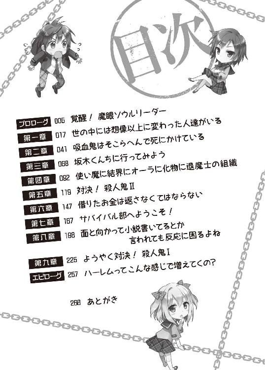

| 姉ちゃんは中二病 地上最強の弟！？ (ＨＪ文庫) | |
| 藤孝剛志 | |
| (2013) | |


プロローグ 覚醒！ 魔眼ソウルリーダー
「ゆうくんが魔眼に目覚めたんだって！ やっぱりこんな場合はお赤飯かな、お母さん」
「あらあら、お母さんそういうのはよくわからないんだけど、おめでたいことならお赤飯でいいのかしらねぇ」
朝の食卓、雄一はみそ汁を吹き出しそうになった。
――大丈夫。アニメや漫画じゃないんだ。そんなことするやつはいねぇ。
姉の睦子はこのことは誰にも知られてはいけない！ 組織に狙われるかも！ などと一人盛り上がっていたものだが親には言ってもいいらしい。
その話はこれ以上するな、という念をこめて睦子を睨みつける。睦子はそれをどう捉えたのかにこりと微笑み返してきた。まるでわかっていない。
睦子は高校二年生になったばかりだ。雄一が今日から通う高校の先輩にあたる。目鼻立ちのはっきりした美人と評判だが、雄一にしてみれば身近すぎてよくわからない。
髪はかなり長く金属質の髪留めを複数用いてまとめている。傍目にはナイフを模した髪留めに見えるがそれらは全て本物の刃物で、ダマスカス鋼製だと自慢げに語っていた。
体型はスレンダーな方で胸はそう大きくもないが本人は気にしていない。胸があっても邪魔なだけだと常々言っていて、それは強がりでもないようだ。
母親はのんきな人なので魔眼の話をされても全く動じていなかった。そもそも魔眼が何かも分かっていないのだろう。
父親はどうなのかと見てみると新聞を読みながら、もそもそとご飯を口に運んでいるだけだった。特に興味はないらしい。
妹の依子も平然としたものでおいしそうに朝ごはんを食べている。姉がおかしなことを言い出すのは日常茶飯事なので、いちいち気にしてはいられないのだろう。
依子は今日から中学二年生だ。姉が自らの美貌に頓着しないのとは違い、自分の可愛さというものを十分に意識している。よく手入れをされたさらさらとした黒髪は長くとても似合っていた。姉のようにわけのわからないものを髪につけたりはしていない。顔の作りは姉と同様だが雰囲気は穏やかで体型の女らしさでは既に姉に優っている。
魔眼が話題に上る食卓を見回した雄一はため息をついた。しっかりと口止めしておくべきだったのだろうか。雄一は昨夜のことを思い返し始めた。
前日の深夜、雄一は睦子の部屋のドアをそっと叩いた。
親も妹も寝静まっている時間だ。だが睦子なら起きていて怪しげなことを色々としているはずだった。
すぐにドアは開かれ睦子は姿を見せた。ピンク色のパジャマを着た睦子が不思議そうな顔で雄一を見つめている。
「ゆうくん？ こんな時間にどうしたの？」
「えーと、姉ちゃんに相談したいことが......」
「わかった。姉もののエロゲを大量に持ってるってことね！ だったらお姉ちゃんは気にしないから！」
睦子は胸を張った。どこか誇らしげだが今の台詞のどこにそんな要素があったのか雄一にはさっぱりわからない。
「ちげーよ！」
「こんな夜中に姉の部屋を訪れる理由なんてそれ以外に考えられないわ！ アニメでそんなのを見たもの！」
「アニメと現実を混同すんなよ」
そう言いつつもこれからする相談内容はあまり現実的とはいえず、ツッコミにも張りがなかった。
「ここで立ち話もなんだし、まずは中に入ったらどう？」
睦子が部屋へと招き入れる。春だというのにまだ出してあるコタツへ二人は入った。
久しぶりに姉の部屋に入った雄一は以前よりもその混沌さを増した部屋の様子にげんなりとさせられた。
コタツの上においてある冊子を手に取る。『防弾腹筋』というタイトルだった。銃弾だろうと弾き返しそうな腹筋がでかでかと表紙に載っている。
雄一はコタツの上に適当な感じで放置されている本を簡単にまとめ始めた。
『握力王』『関節王』『全伝 八極拳』『木村政彦はなぜ力道山を殺さなかったのか』『発勁の科学』......。そんなタイトルの本をコタツの端に積み上げる。コタツの上が乱れていると気になって仕方が無い。
コタツの上を片付けた雄一はそれでもあまり変わらない部屋の様子にうんざりとした。
部屋の混沌さに拍車をかけているのはそこらに転がっている武器だ。
中国系の武器が多い。青龍刀、峨嵋刺、九節鞭、流星錘、苗刀。
西洋系だとクォータースタッフ、クロスボウ、マインゴーシュ。
インド系ならマドゥにカタール。
日本系では万力鎖、十手、棒手裏剣、日本刀まである。扇などはまだ女らしいと言えるのかもしれないがこれも鉄扇で要するにここに転がってるのは武具だ。
持っていることは知っていたがまさかこれだけの数を集めていて、しかも適当に放り出しているとは思ってもいなかった。踏んだらどうするんだといらない心配をしたくなる。
では武器を無視すればこの部屋が女子高生の部屋としてふさわしいかといえばそれも違った。ケーブルが這い回り謎の基板があちこちに、壁面にはチカチカと光る機械が詰め込まれたロッカーのようなものがいくつも並んでいる。
それも無視したとしても次に気になるのは謎の仮面やら呪符やら祭壇だ。
雄一はそれ以上考えることをやめた。キリがないからだ。
「さて！ 相談って何？」
睦子は張り切っていた。普段何かと姉に絡まれている雄一だが、自分から姉に相談を持ちかけた記憶はあまりない。そのためか姉は期待に満ちあふれた目をしている。
「えーとだな、その、昨日から変なモノが見えるようになってさ、それでどうしたものかと困ってるんだけど」
雄一はどう伝えていいものか迷いながら言った。
「え？」
睦子は身を乗り出しすごい勢いで食いついてきた。
「なになに！ 何が見えるの！ え？ 線？ 死の線が見えるの？ 直死の魔眼？ あ、だったらメガネを用意しないと！ けどあれってなにでできてるのかしら？ それともチャクラ！ 白眼とか？ 写輪眼？ それか幽霊が見えるとか？ 霊視？」
「落ち着けよ！ そんなたいしたもんじゃねーから！」
「わかった！ ちょっとまってね」
睦子はそう言うと深呼吸した。落ち着こうとしているらしい。
「で！ 何が見えるの！」
「あー、ほんと大したもんじゃないんだよ。期待されると困るんだけど......その......文字が見える」
「文字？」
「人の頭の上に文字が見える」
「それだけ？」
睦子はあからさまに落胆の表情を浮かべた。そこまで気落ちされると相談した側が申し訳なくなってくる。
だがすぐに気を取りなおしたのか、がばっと身を起こした。
「そう！ 戦闘系の魔眼じゃないのかもしれない！ けどそれでも凄いことよね！ で、文字ってもしかして私の上にも見えてる？ ひょっとして余命が見えるとか？ そんなホラーを見たことがあるわ！」
「姉ちゃんの上には『姉ちゃん』って書いてある」
「え？」
睦子の頭上には『姉ちゃん』という黒い文字が浮かんでいた。
「かあさんの上には『かあさん』、よりちゃんの上には『妹』って書いてあった」
睦子、雄一、依子の三人兄弟。これに両親を合わせた五人が坂木家の家族構成だ。
「どういうこと？ 意味がわからないんだけど」
「俺もわかんねーよ！ 何だかわかんねーから昨日これが見えるようになってからは外に出てない。けど明日から学校だからそういうわけにもいかないし、姉ちゃんなら何かわかんねーかな、と思ったんだけど」
雄一がそのことに気づいたのは春休みの最終日、惰眠から目覚め遅めの朝食を食べにキッチンへと向かった時のことだった。キッチンで食事の用意をしている母親の頭上に『かあさん』という黒い文字が浮かんでいるのを目にしたのだ。
最初はまだ寝ぼけているのかと何度も目を瞬いた。だが何度瞬こうと目を擦ろうとそのくっきりとした文字は母親の頭上に浮かんだままだ。
雄一は食事もそこそこに部屋へと戻った。春休みに遊びすぎて疲れているのかもしれない。そう思い再び寝ることにしたのだが目覚めても状況に変化はなく、姉や妹の頭上にも文字が見えるというのが確認出来ただけだった。
「ねぇ。それって自分の頭上には何か見えてるの？」
「鏡で見た限りでは見えなかったな。直接見る必要があるのかも......。今言ったことぐらいしか俺もわかんないんだけど、なんか心当たりある？」
「待って！ ちょっと待って！」
睦子は片手を額に、もう一方を張り手のように雄一に突き付けた。
「いや、待つけどさ、どうしたんだよ」
「考えるから！ それが何か！」
睦子はそのままのポーズで考え込んだ。
睦子は自分の世界に没頭すると周りが見えなくなるタイプだ。放っておけばずっとこのままなのかもしれない。
もう部屋に戻ろうかと雄一が思ったとき睦子は動き出した。
「ソウルリーダー......そう！ そんな感じのもの！ 何か相手の本質を読み取れるような魔眼じゃない？」
「えー？ じゃあ、姉ちゃんの本質は姉ちゃんなのかよ」
「そう！ 私ほど姉ちゃんをしてる姉はいない！」
睦子が胸を張る。いつも自信満々の姉だが自分が姉であるということには殊更自信があるようだった。
「俺から見たら『かあさん』も『妹』も『とうさん』もその通りなんだけどさ。気にしなけりゃいいのかな」
騒ぐ姉を見ていると雄一はこんなことで悩んでいたのが馬鹿らしくなってきた。
姉に『姉ちゃん』という字幕が出たとして特に問題はない気がしてくる。
「ところで！ そんな能力に目覚めてしまった原因について心当たりはないの？」
「え？ いや......朝起きたら見えるようになってたんだけど......」
自分から相談しておきながら、あまりにも自然に魔眼とやらを信じている姉の様子に雄一は驚いていた。姉は普段から漫画やアニメの内容を実在するかのように語っているが、それはあくまでそういうポーズだと思っていたのだ。
「矢で射られたとか？」
「さすがに気づくよ！」
「うずまき模様のある実とか食べてない？」
「そんな怪しいもんを食べたおぼえはない」
「力が欲しいか？ ってどっかから聞こえてこなかった？」
「それなら、まずそれを相談する」
「うーん、じゃあ本人に自覚があるようなタイプじゃないのかしら......魔震とか地獄門の影響とか......」
「まったく心当たりはないから何を聞かれたって無駄だよ。俺だって一応何か原因はなかったかぐらいは考えたし」
雄一がそう言うと睦子はまたもや考え込み始めた。
「ナノマシンとか......パンドラの手によるもの？ ペルソナという可能性も......」
などと睦子はぶつぶつとつぶやいていたが、突如顔を上げ雄一へと話しかける。
「このことは誰にも言っちゃ駄目よ！ 能力者狩りに遭うかもしれないわ！」
「そんなん誰がやってんだよ」
「組織！ そう、そんな組織があっても不思議じゃないわ！ 気をつけて！ 見つかったら目を抉られるかもしれない！」
「こえぇこと言うなよ」
もちろんこんなことを吹聴する気は雄一にはない。姉以外に言っても正気を疑われるだけだろう。こんな話に真面目に付き合ってくれるのはこのおかしな姉ぐらいのものだ。
「誰にも言う気はないからさ。姉ちゃんも黙っててくれよ」
「まかせて！ ゆうくんは私が組織から守ってあげるから！」
胸に手を当て誇らしげにそう宣言する姉の姿は実に頼もしい。
――姉ちゃんなら何かあったとしてもどうにかしてくれるだろ。
いろいろ問題のある姉ではあるが今までに期待を裏切られた覚えはない。頼りっぱなしなのは少し情けなくもあるが、雄一は相談したことで幾分か気が楽になった。
今夜の晩御飯を赤飯にしようとしている姉を見ながら雄一は後悔し始めていた。
やはり姉に相談したのは間違いだったのかもしれない。
入学初日の朝から暗雲がたちこめているような、そんな気分に雄一はなってきた。
第一章 世の中には想像以上に変わった人達がいる
県立星辰高校。それが雄一が今日から入学する高校だった。
家から徒歩十分。
雄一がこの学校を選んだ理由は単純で家から一番近い公立高校だからだ。
ごく普通のありふれた高校で特に何かに力を入れているということもない。
雄一はまだ着慣れていないブレザーを着て家を出てきた。紺色のブレザーにネクタイ、チェック柄のズボンが制服だ。女子の場合はリボンタイにチェック柄のスカートとなる。
雄一は睦子を待たずに一人で学校へと向かい始めた。魔眼が話題に上る朝の食卓に耐えきれなくなったからだ。
変なものが見えるようになってから他人と出会うのはこれが初めてだ。その場合の表示はどうなるのか？ それはすぐに判明した。
『会社員』『公務員』『ＯＬ』『高校生』『中学生』
――見たままって感じだな。
通学路には様々な人がいたが、見た目のイメージ通りの文字が現れているようだ。しかし会社員と公務員のように、見た目だけで判別がつかないことも表示されている。
高校に近づき人が増え始めると、これまでとは少し違う文字を持つ人が現れ始めた。
『同期生』
それがちらほらと現れている。その文字を持つのは見知った顔だった。雄一と同年代の生徒だ。
――そんなに深刻に考える問題でもなかったのか？
多少邪魔ではあるが気にしなければすぐに慣れそうだ。雄一は前向きに考え始めた。
あれこれと考えていると高校へはあっという間だ。
校門をくぐり誘導に従って講堂へと向かう。受付を済ませて中へと入った。
中には長椅子が整然と並べられている。雄一は指定された自分のクラス、１－Ｃの席へ向かった。
先に座っている生徒の頭上には『クラスメイト』とある。他のクラスを見てみると『同期生』とあった。同じクラスとそれ以外では表示に違いがあるようだ。
席は決まっていないようなので、雄一は先に来ていた『友達』の隣に座った。これだけ文字ばかり見ているともう特別なこととも思えない。雄一はこの異常事態に順応しつつあった。
「卒業式ぶりだね、ゆうくん」
「おう、たっくん久しぶり」
小田拓郎。中学校では同じクラスで、一番の親友だ。あまり自己主張のない温和な性格で、いつもにこにことしている小柄な少年だった。
春休みは何をしていたかなどのたわいもない話をしているうちに、長椅子は新入生で埋め尽くされ壇上では『校長』の挨拶が始まっていた。
入学式の後、雄一達は直接関係のない先生に引率され教室へとやってきた。担任は入学式にもかかわらず遅刻しているらしい。
教室内は無秩序にざわめいていた。初っぱなから担任がいないのだからそれも仕方がないのだろう。早速幾つかのグループが出来ているようだった。
雄一の席は窓側から二列目の一番後ろの席だ。最初は出席番号順らしい。
「よぉ！」
雄一がぼうっとしていると、前の席の少年が椅子に後ろ向きに座って話しかけてきた。
雄一より頭一つ分背が高い。がっしりとした体格は何かスポーツでもやっていそうな感じだ。
初対面の相手でも物怖じせずに話しかけられる性格らしい。
「俺は佐伯翔太！ よろしく！」
「よろしく。俺は坂木雄一。......エースストライカー？」
今までとは少し違う文字『エースストライカー』が佐伯翔太の上に浮かんでいる。それを見た雄一は思わず読み上げてしまっていた。先ほどまでは『クラスメイト』だったはずだ。
「お前もサッカーやってんの？ どっかで会ったっけ？」
「あ、いや、サッカーやってそーな顔だなぁって思っただけだよ」
「あぁ、よく言われるよ！」
――言われんのかよ！ サッカーしてそうな顔ってどんなんだよ！
単純な性格なのかそれで誤魔化せたようだ。
「なぁ、お前って姉ちゃんか妹いるか？」
翔太が雄一の顔をまじまじと見ながら聞いてくる。
「ん？ いきなりだな、何でそんなこと聞くんだよ？」
「いや、お前の兄弟なら美人かなと思ったから」
「姉ちゃんならここの二年にいるけど」
「おぉ！ じゃ紹介してくれよ！」
「何だよそれ、本当にいきなりだな」
翔太はどこまでも真っすぐだった。すごく単純に人生を過ごしていそうだ。
「でもうちの姉ちゃんは止めといた方がいいな。いわゆる残念系ってやつだから」
「残念系？」
「見た目はいいけど性格がよくないって感じだな。何というのか趣味が偏ってる」
「何だっけ、腐女子とかいうやつか？ でも最近はそういうのも結構いるんだろ？」
周りにいる女子の何人かがぴくりと動いた。自分のことでも言われたのかと思ったのだろう。その頭上には『腐女子』とあった。
――見間違いじゃない......やはり表示が変わってる。
雄一はあたりを見回した。気づけば『ロリコン』『シスコン』『撮り鉄』『文学少女』などの表示に変わっている者達がいる。
見ていると目の奥で疼痛のようなものを感じ始めた。目を酷使したときに感じるような痛みだったが、それはしばらくすると落ち着いていった。
「どうした？」
落ち着きのない雄一を見て翔太が怪訝な顔をしている。
「あ、いやなんでもない」
これは少しまずいと雄一は考えた。変わった文字を見たときに思わず考え込んでしまう。そういう点では日常生活に多少影響がありそうだ。
「えーと、姉ちゃんの話だったか？ あれだ。姉ちゃんは中二病ってやつだ。あれをこじらせてる」
「中二病？ 病気なのか？」
「病気じゃねーよ。ま、なんつーのか。マニアみたいなもんだ」
説明が面倒になった雄一は適当にごまかした。
「なぁ、姉ちゃんの写真とかもってねーか？」
「あのな......どこの世界に姉の写真を持ち歩くような弟がいると思って......」
そう言いかけて雄一は思い出した。確か姉と撮ったプリクラが鞄のどこかに入ったままになっている。いらないというのに押しつけられたものだ。
「お、あるんだな？ 見せてくれよ」
「わかったよ......」
あまり突き放して険悪になるのもまずい。そう思い雄一は鞄に手を伸ばした。
机の上に鞄を載せごそごそと探る。
「なぁ？ それなんだ？」
翔太が鞄を指さす。そこから覗いている金属質な塊が気になったらしい。
「これか？ キャプテンズ・オブ・クラッシュグリッパーのNo４だ。握力鍛えるやつだよ」
「へぇ？ なんか変わってるな。ちょっと貸してくれよ」
雄一は鞄から金属製のグリッパーを取り出し翔太に手渡した。
キャプテンズ・オブ・クラッシュグリッパー。アイアンマインド社の超強力グリッパー、握力トレーニング器具だ。No１からNo４までありNo４ともなれば閉じるのに必要な握力は約百六十キロ。そこらの高校生に閉じられるものではない。
翔太はグリッパーをどうにかして閉じようと必死になっている。雄一はそれを横目にプリクラを探し続けた。
「おーい、入学初日から学級崩壊かー。席について待ってるぐらいできんのかー？ ま、いいや。さっさと席についてねー。今日からあんた達の担任をやることになった野田山花子でーす」
凄まじくやる気がなさそうな女の声がする。雄一はプリクラ探しを諦めて教壇を見た。いつの間にか頭上に『担任』の文字を持つ女性がやってきている。
スーツが恐ろしいほどに似合っていない女だ。髪は中途半端に茶色く染められていてぼさぼさとしている。女としての見た目を気にしているようにはまるで見えなかった。
「あんたらにまず言いたいことは、とにかくあたしに迷惑かけんなってことだ。じゃあとりあえずこのプリントを配ってくれ。えーとそこのお前。このプリントを適当に分けて前の席から順番に後ろに回すように。これからの高校生活の注意事項やらなんやら全部そこに書いてあるから。いいか、ぜーんぶ書いてある。だからあたしが説明することも、お前らの疑問に答えることもしなーい。わかったかー？」
花子が目の前の生徒にプリントを押しつける。この野放図な担任に生徒達は度肝を抜かれている様子だ。
プリントは花子の指示通りに配られていく。
「あれ？ 足りなくね？」
前の席の翔太が雄一へと振り向いて言った。前から回ってきたプリントは翔太の分までしかないらしい。
雄一はどこかに余っていないかとクラスを見回した。雄一を除いて行き渡っている様子だ。
「すいません、プリントが回ってきてないんですが」
雄一は手を上げ花子へと呼びかけた。
何人かの生徒が雄一を見つめてくる。
途端に目の奥に激痛が走った。目の前が真っ白になり思わず雄一は目を押さえた。
「そこのあんた、なにやってんの？ もしかして中二病ってやつ？ くぅ！ しずまれ俺の右目！ とかぁ？ 今時高校から中二デビューってお前よぉ」
花子がおちょくるように言い、所々で笑いが起きている。
「......あ、すいません。ちょっと頭痛が......もう大丈――」
顔を上げた雄一は間抜けな顔で固まった。
『死者』『魔女』『獣人』『ギャルゲー幼なじみ』『吸血鬼』......。
わけのわからない者達が一斉に雄一を見つめている。
文字の羅列。それは先ほどまで『クラスメイト』だったはずだ。
――何がどうなった？
そう考え込んだのは一瞬のことだった。視線を感じそちらの席を見た雄一はさらなる衝撃に襲われた。
『殺人鬼』
目が合った。
恐ろしい程に美しい少女が凜とした鋭い眼差しで雄一を見つめていた。
短く切りそろえた髪の上には『殺人鬼』という文字が浮かんでいる。
――殺人鬼ってどういうことだよ！ なんでそんなのがここにいる！
わけがわからない。助けを求めるように目の前の『エースストライカー』を見てみたがこの状況で役に立つとも思えなかった。
「なに間抜けな顔してんの？ もしかして入学初日から担任に喧嘩売ってるー？」
花子がだるそうに聞いてきて雄一は我に返った。
「あ、いえ、すいません。俺の分のプリントがないみたいなんですけど」
「どっかに余ってる？ 余ってないなら足りないねー。誰かに見せてもらってー」
花子がどうでもよさそうに言う。
「俺のを見せてやるよ」
翔太がそう言ってプリントを渡してきた。
「じゃあ後は各自の責任でそれ読んどけよー。後で知らなかったって言われてもあたしはしらんからねー。じゃあ残りの時間は自己紹介といこうかー。出席番号順に前に出てきて自己紹介するようにー」
雄一は翔太に渡されたプリントを見た。そこには座席表が含まれている。
『殺人鬼』武内奈月。出席番号は三十七。席は右端の前から二番目だ。
『死者』や『魔女』などの意味もわからないがその中にあってもその『殺人鬼』という文字は一際異常だった。それは人殺しとしか解釈しようがない。
――いや、そもそもこの見えている文字は何をあらわしているんだ？
なんとなくその人物の属性をあらわしているような気でいたがその確証はまだない。だがこれまで見てきた内容を考えると、全く関係がない文字が出ているとも思えなかった。
雄一が混乱している間に自己紹介が始まろうとしていた。雄一は十四番目なのでまだ先だ。
とりあえず雄一は自己紹介を真剣に聞き始めた。頭上の文字との関連性がわかるかもしれない。
『死者』綾小路莉沙。
高めの位置で髪を二つにくくりツインテールにしている少女だ。
「どうもー！ 綾小路莉沙でーす。綾小路なんてえらそうな名前ですけど、別に金持ちとかってわけじゃないのでたからないでねー。中学ではバレーやってたので高校でもバレーをやろうと思ってまーす」
少々間延びした感じはあったがはきはきと喋っている。血色もよくとても死者などとは思えなかった。
――意味わかんねぇ......死者ってなんだよ。死んでるってのか？ あれで？
『魔女』片桐杏。
長い黒髪も目元を隠すように伸びた前髪もどこか陰鬱に見える。魔女だと言われればそう思ってしまいそうだ。
「片桐杏です。私の趣味などはどうでもいいでしょうから省略させてもらいますが皆さんに言っておきたいことがあります。私は隣の席の小田拓郎くんを愛しています。誰にも盗られるつもりはありません。小田くんに手を出そうとするなら殺します」
――は？ なんだそりゃ!?
ここまで強烈な自己紹介というものを雄一は聞いたことがなかった。
それはクラスの皆も同じだったのだろう。教室は一気にざわめいた。
突然名指しされた拓郎は目を丸くし、口をぱくぱくと馬鹿みたいに開け閉めしている。
見たところ元々知り合いという様子ではないし、雄一の記憶にもない。
拓郎の頭上の文字はいつのまにか『魔女に見初められし者』という文字へと変わっていた。これははっきりと覚えているが最初は『友達』だった。
――何かの切っ掛けで変化することもあるのか？
この場合は片桐杏の自己紹介が原因だろう。雄一はさらに困惑を深めた。
「おいおい、悪い冗談はやめとけよ、みんな引いてるだろ？ それにそんなことしたら刑務所行きじゃねーか」
ざわめきの中、翔太が軽い口調で言う。
「捕まろうと構いません。出所後に必ず小田くんのもとに現れて添い遂げる覚悟です。その際に小田くんが結婚しているということであれば、その妻も子も殺そうと思います。だから小田くん。私以外の人と結婚すれば少なくない人が不幸に見舞われることになります。その覚悟があるならそうしてください」
その発言は揺るぎない覚悟と気概にあふれていた。
――『魔女』ってのは魔性の女って意味か......？
『獣人』小西妃里。
まず目についたのはその豪華な金髪だった。金色の髪は結い上げられて複雑怪奇な髪型となっている。庶民に真似することができるとはとても思えないので雰囲気から察するにどこかのお嬢様といった様子だ。
金髪ではあるが名前も顔も日本人のようだった。ハーフなのかもしれない。
とにかく目立つ派手な容姿に教室がざわめいたが、その後の自己紹介によってそのざわめきはさらに大きくなった。
「皆さんに最初に言っておきたいことがあります。有り体にいいますと私のうちはいわゆるお金持ちということになります。日本の法律上身分的な差別はもちろんありませんが、あなた達もすでに高校生。経済的な意味で人の間に格差が生じていることは十分にご承知の事かと思います。金の多寡は人の価値に直結しているのです。私はあなた達庶民とは立場もなにもかもが違うのです。こんなことを言えば金持ち故の傲慢とお思いになるかもしれません。ですがこれから一年という長い時間を共にするクラスメイトの方々に不幸なことにはなって欲しくないのです。後々私への対応を間違えたと後悔するようなことになる前に言っておいた方がいいだろうとそう愚考いたしました。ですのであなた達は十分に考えた上で私へ接してくださいますようお願いいたします」
翔太が雄一へと振り向いた。また強烈なのが出てきやがったという目をしている。
本人の言うように金持ちのお嬢様なのだろう。普通の暮らしをしていてはここまでクラスメイトを見下すことは出来ないはずだ。
――でもどこが『獣人』なのかはさっぱりだな。
雄一はだんだんわからなくなってきた。
『ギャルゲー幼なじみ』杉本陽子。
――ギャルゲーってなんだよ！
魔女や獣人の意味はまだわかる。だがこの表示の意味はさっぱりわからなかった。ギャルゲーに出てくるような幼なじみキャラということだろうか。
ルックスや自己紹介に特に目立つ所もなくいたって普通という印象だ。そんなことを考えていると、ひとりの男子生徒が目に入った。『ギャルゲー主人公』、座席表によると牧瀬光一というらしい。
――そう言えばさっきも二人で楽しそうに話していて、冷やかされていたような......。
幼なじみというのは、彼との関係においてのことなのだろう。自分とは全く関係がないはずだ。
『吸血鬼』野呂愛子。
ショートボブで愛嬌のある顔立ちをしている小柄な少女だ。
――てか、思いっきり太陽の光を浴びてるよな？ 吸血鬼なら太陽は弱点だろ？
天気はよく教室内に陽が差し込んでいる。
「えーと、野呂愛子です！ この学校は家から近いので選んだんですけど、頭あんまりよくないんで結構大変でした。ギリギリ受かったんだと思います。勉強とか楽しいこととかいろいろがんばりたいと思いますのでよろしくね！」
愛子は元気いっぱいという様子で、吸血鬼らしさなどまるでない。
――日本人にしては肌が白いな。ちょっと外国人っぽい？
無理に吸血鬼らしさを探したところでそれぐらいだ。
真剣に自己紹介を聞いていた雄一だが文字の謎は深まるばかりだった。辛うじてわかりそうなのは『魔女』ぐらいのものだが、それも少々エキセントリックなだけの少女といえないこともない。
結局なにもわからないと諦めかけた雄一だったが、この人物にだけは再度注目した。
『殺人鬼』武内奈月。
殺人鬼だと言われて見るとその凛とした鋭い眼差しも、短く切りそろえられた髪も、それらしく思えてくる。
「武内奈月です。あまり人のいない田舎からこちらへ引っ越してきたばかりで、都会の人の多さにとまどっています。学校にもたくさんの人たちがいるようですので、皆さんと交流していきたいと思っています」
先入観のためか少し冷たい印象を受けた。ぶっきらぼうというか突き放した感じがする。
だが自己紹介の内容は当たり障りのないものだ。これでは彼女が本当に殺人鬼なのかは判断しようがない。それでも雄一はその頭上の『殺人鬼』という強烈な文字からしばらく目が離せなかった。
ホームルームが終わるとその日の授業はなく下校時間となった。
雄一は『魔女に見初められし者』となった拓郎が心配だったので帰りに話をしようと思っていたのだが、拓郎は逃げるように去って行った。他の生徒たちもぞろぞろと教室を出ていく。
雄一も逃げ帰りたい気分ではあったが、考えを整理しようと教室に残っていた。自分の席でクラス名簿を見つめ、文字と名前と自己紹介を照らし合わせてみる。
するとそこに翔太が声をかけてきた。
「これどーなってんだよ！ 機械の部品かってぐらい動かないんだけど！」
そう言ってグリッパーを雄一へと返してきた。閉じるのは諦めたらしい。
「いきなりそれは無理だろ。本格的にやりたいならNo１を貸してやる。それなら六十キロぐらいの握力で閉じられるしな」
「いやサッカーには関係なさそうだからいいけどよ。お前、これ閉じれんの？」
「アイソメトリックトレーニングってあるだろ？ あんな感じで使ってんだよ」
動かない壁を全力で押すような筋力トレーニングのことだ。閉じられるというとややこしいことになりそうだと思った雄一はそうごまかした。
「なんか聞いたことあるな。で、さっきからなに難しい顔して名簿を睨み付けてんだよ」
「クラスメイトの名前ぐらい覚えとかないとなぁと思ってたんだよ」
これもごまかす。
「なんだ、そんなことかよ。女子の格付けでもしてんのかと思ったぜ。どれ貸してみろ」
翔太が名簿を奪う。もともと翔太のものなので特に文句は無い。
翔太は女子の名前の前に数字を書き入れだした。
「武内奈月、野呂愛子、小西妃里。トップ３はこれだろ。次点で平田美優、原口さやか......と後は片桐杏か。頭おかしいけどな。ま、美人揃いのクラスでよかったじゃねーか」
雄一はそれどころではなかったが、女子の自己紹介の度に男子がざわついてたなと思い出した。
「これから一年間楽しみだな！ っと、じゃあそろそろ俺行くわ。サッカー部の先輩に挨拶しにいかないとな」
翔太と話しているうちに皆さっさと帰ったようで教室内には他には誰もいない。翔太も席を立ち教室を出ていった。
雄一も残ってすることもない。トイレに行ってから帰ることにした。
廊下に出ると他のクラスの生徒が見える。その頭上には『同期生』とあるだけだ。
トイレに入って用を足し洗面台で手を洗いながら考える。
文字が何をあらわしているのかがわからない。いや、わかりたくなかった。文字通りの意味だと信じたくなかったのだ。
――まさかな......死者だとか吸血鬼だとかが実際にいるわけもないし......。
最初は『クラスメイト』だったのがいつの間にか変化していた。
ならば自分の頭上の文字は？ 今なら何か出ているのかもしれない。そう思い顔を上げて鏡を見る。だがそこには予想外のものが映っていた。
『殺人鬼』
武内奈月が雄一の背後に立っていた。
「ねぇ、さっき私のこと見てたよね？」
「えーと、ここ男子トイレなんだけど......」
雄一は気配にまるで気づけなかったことに戦慄していた。ぼーっとしていたとはいえ背後に立たれるまで気づけないなど信じられない。
首筋にちくりと何かが当たっている。刃物の切っ先のようだ。
「気にしないで、私も気にしないから。それより質問に答えてよ。見てたよね？ 何で？ 私そんなにおかしかった？ うまく馴染めてると思ってたんだけど」
「そりゃそっちが見てきたからだろ？ だからこっちも見たわけで......」
目が合って慌てて視線をそらしたことを雄一は思い出した。
そのときに気づかれたのかもしれない。確かに不自然なほど見つめてしまっていたが、その程度のことを気にされるとは思っていなかった。
「私はね。何度もその目を見てる。私が人殺しだと気づいて驚いた人がする目。......正直に答えてくれる？ なぜ気づいたの？ 今後のためにも知っておきたいんだけど」
首筋にあてられた刃先が微妙に動いた。脅されている。
雄一は冷水を浴びせられたような気分になった。奈月が殺人鬼というのは本当らしい。
「殺人鬼......なのか？」
今のところ殺意はないようなので慎重に発言する。
「そうね。人殺しなら日常的に行ってる。けど自分の身近な環境ではしてないし、この高校でも殺す気はなかった。でもいきなりばれたみたいでびっくり。ねぇ？ 何で？」
そう言われてどう答えろというのか。結局雄一は下手にごまかすのは逆効果だろうと思い素直に話すことにした。
「人の頭の上に文字が見えるんだ。そこに『殺人鬼』って書いてあった。他にもクラスには『魔女』やら『死者』やらがいる」
「......嘘じゃないようね」
奈月は鏡越しに雄一の目を見ていたがあっさりとそう言った。
「信じるのか？」
奈月があっさりと信じたことを雄一は意外に感じた。もし自分がこんなことを聞かされたとしても信じはしないだろう。
「そうね。『死者』がいるのは確実だしね。他には『人形』もいたかな。『魔女』ってのはわからないけど......そんなのもいるかもしれないね」
「......当たり前みたいに言うんだな。なんでそんなことがお前にわかる？」
「いくら良く出来てたって食品サンプルを食べる気にはならないでしょ？」
それで説明したつもりらしいが雄一にはよくわからなかった。
「なんなんだよ！ お前らなんなんだ！ わけわかんねーよ！ 『魔女』だとか『吸血鬼』だとか『殺人鬼』だとか！ どっからそんなもん湧いて出た！ なんでそんなのがうちのクラスに集まってんだよ！」
「さあ？ 別に集まってるわけでもないんじゃない？ 私みたいなのは結構な数がいるからあなたみたいにその正体を見破れる人から見たらそんな感じになるんじゃないの？ 普段はお互いに不干渉だし特に問題はないはずだけど」
そう言って奈月が刃物を引いた。
「まぁいいわ。別にあなたを殺しに来たわけじゃないから。警告。私のことは黙っているように。もしバレたなら学校中の人間を皆殺しにして立ち去る。そんな惨劇がお望みならご自由に。けどこれでも私、これからの高校生活を楽しみにしてるの。それが台なしにならないことを祈ってるわ」
話はそれで終わりらしい。奈月はそのままトイレの奥へ向かうと窓枠に手をかけた。
「これからもよろしくね、坂木雄一くん」
奈月は窓からひょいと飛び降りた。
「はぁ？」
それと同時にトイレのドアが開いて男子生徒が連れ立って入ってくる。
窓から飛び出したのはこのせいだったのかと思うも、そんなことを躊躇なく実行できるというのが信じ難い。ここは四階だ。
雄一は慌ててトイレを飛び出した。窓から落ちた奈月がどうなったのか確認するべきだったかもしれないが、そんな悠長なことをしている余裕は雄一から無くなっていた。
何が何だかさっぱりわからない。
――文字が見えるぐらい大したことない？ 問題大ありじゃねーか！
教室に戻り鞄をひっつかむとそのまま全速力で家へと向かう。周囲の人が怪訝に思うような速度で雄一は駆け続けた。
第二章 吸血鬼はそこらへんで死にかけている
まだ幼い睦子が真剣な目で雄一を見つめている。
純日本風の田舎の一軒家。雄一が小学校に入学する前に住んでいた家だ。その縁側に睦子と雄一が腰掛けている。
夜だというのに縁側は明るかった。満月が優しくあたりを照らし出している。
虫がうるさいぐらいに鳴いていた。夏も終わりの頃だ。
「お父さんと、お母さんはもう駄目だと思うの」
何が駄目なのかはわからない。だが幼いながらにそれが何か致命的なことなのだと雄一は考えた。
何でも知っている、何でもできる自慢の姉がそう言うのだ。ならば間違いは無い。
「どうして......」
だからといって納得できるものではない。雄一はたずねた。
「いずれ爆発的な変化......カタストロフィが訪れる。お父さんとお母さんじゃきっと耐えられない。大人だから無理なの。あまりにも急激な状況の変化にはついていけないから」
雄一は顔を歪めた。涙がこぼれ落ちてくる。やはり意味はよくわからない。だが大好きな両親に二度と会えなくなってしまうという予感が胸をしめつける。
「これはとても辛いことだわ。でも救える人数に限りがあるのなら私はゆうくんを選ぶ」
冗談ではないのだ。睦子の眼差しに嘘偽りはないと思えた。
「よりちゃんは......よりちゃんはどうなるの？」
振り返り開け放した障子の向こうを見た。そこでは妹の依子が薄手のタオルケットをかぶってすやすやと眠っている。
「よりちゃんも......駄目かもしれない......」
睦子が辛そうにいう。
「だめだよ！ なんでそんなこと言うの！ よりちゃんはまだ小さいんだよ！ 可哀想じゃないか！」
「......でもよりちゃんじゃきっと無理だわ......」
「大丈夫だよ！ そのカタスなんとかって奴は僕がやっつけてやる！ お姉ちゃんもよりちゃんもお父さんもお母さんもみんな僕が守ってやる！」
雄一は縁側から飛び降りた。拳を振り上げそう誓う。
雄一のいさましい誓いに感動したのか、睦子は目を潤ませた。
「そう......そうよね......らしくなかったわ......絶望を前に立ちすくむなんて私らしくもない......いいわ！ お姉ちゃんにまかせて！ きっとゆうくんを......」
そこで雄一は目が覚めた。
「夢......だよな？」
過去にあったことのような気もしたが、起きた途端に夢の内容は霞のように消えていく。もう何を見たのかも曖昧になっていた。
身を起こし窓へと目をやる。外はまだ暗かった。
中々寝付けずに悶々としていたがいつの間にか寝ていたらしい。だが一度目が覚めてしまうともう駄目だ。そのまま眠れる気がしなかった雄一は廊下へと出た。
睦子の部屋へと向かいドアをノックする。眠れない原因、雄一の眼について相談できるのはやはり姉しかいない。
さすがにこの時間では寝ているかもしれない。だがすぐにドアは開いた。
「今度こそ姉もののエロゲの相談かしら！」
睦子はパオと呼ばれる中国服を着ていた。いわゆるカンフー服だ。今日はこれをパジャマ代わりにしているらしい。
「ちげーよ！ 何期待してんだよ！」
「妹ものはさすがにお姉ちゃんも心配になってくるんだけど」
「そっちでもねーよ！」
「まぁいいわ。中に入って」
招き入れられ昨日と同じようにコタツへと入る。相変わらず部屋は雑然としていた。
「なぁ......カタストロフィってなんだっけ？」
「数学の理論の一つよ。周期的で秩序だった現象から、不意に現れる無秩序な現象のことを指すわ。転じて日常からの破滅的状況への変化を指したり......ってそんなことを聞きに来たの？」
「あぁ、それはどうでもいいんだけど。その、ソウルリーダーだっけ？ さらにおかしなものが見えるようになってんだけど......」
雄一は入学式の日の出来事を語った。もちろん『殺人鬼』武内奈月に関することは除いている。バラせば皆殺しだという彼女の発言が雄一に重くのしかかっていた。
朝の食卓であっさりとばらされたように、姉の秘密保持に対する態度は実に怪しい。教えるわけにはいかなかった。
「面白くなってきたわ！」
睦子の目は輝いていた。
「いや、面白がられても困る......」
「つまり文字が変化したのね？」
「そうだな。最初は『クラスメイト』だったのが『エースストライカー』とかに変わった」
「で、急に目が痛くなって『死者』や『魔女』や『吸血鬼』なんて物騒なのが出てきたと。『宇宙人』とか『未来人』とか『超能力者』とかはいなかったの？」
「さすがにそこまで変なのはいなかったけど......」
死者と宇宙人でどちらが変なのかは微妙なところだった。
「まぁそのうち出てくるかもしれないわ！」
「勘弁してくれよ......で、なんかわかった？」
「そうね。......話を聞いた限りだと文字はゆうくんとの関係性をあらわしてるのかと思ってたんだけど......」
「『魔女』とか『吸血鬼』が俺と関係あるとは思えないけどな」
たしかに『姉ちゃん』や『友達』は雄一との関係性だろう。だがそうは思えない文字も多い。
「そうね......ＡＣＴ２ってことかしら！ ゆうくんがレベルアップして新たな段階に突入したのよ！ でもその文字が何をあらわしているのか......。もっとサンプルが欲しいところね......やはり魂の本質のような......属性というかラベルというかレッテルというか......」
睦子が己の世界へと没頭し始める。
「おーい、どっかいくなよ」
「あ、ごめんね。で、私の文字はどうなってる？ 前のまま？」
「『姉ちゃん』のままだな」
「なにそれ！ せっかくならもっと変わった文字を読み取って欲しいものだわ！」
「無茶言うなよ」
「ソウルリーダーが何なのかはもう少し考えてみるけど......気をつけてね。多分だけど相手にとって不都合なことも見えている可能性があるわ。見えている事がばれた場合狙われるかも......」
雄一はギクリとした。『殺人鬼』、武内奈月のことを思い出す。
「いやいや、そんなことはないだろ。『死者』だとか『魔女』だとかが本物なわけないんだからさ。それがばれたからって襲ってきたりしねーだろ？」
「なんでそう思うの？」
「え？ だってそんなやつらがゴロゴロいたら社会が成り立たないっていうか......」
言ってはみたもののどうも歯切れが悪かった。
「そう？ それぞれが自分の素性を隠しながら生きているのなら、それはそれでどうにかなっちゃうんじゃないの？」
奈月もそんなことを言っていたと思い出す。確かに雄一のような眼でもなければわかるわけがない。
「まぁ心配しすぎなくても大丈夫よ。ゆうくんは何が見えても黙ってればいいんだから。正体を隠してる相手がわざわざちょっかいだしにくることなんてないはずだわ！」
「......」
雄一は押し黙った。もうすでに奈月にちょっかいをかけられていて、ソウルリーダーについてもばらしてしまっている。
「どうしたの？」
「いや、なんでもない。わかったよ。とにかく黙ってる」
雄一は姉の部屋を出て自室へと戻った。しばらく寝られる気がしなかった。
入学してから数日後。
今日も雄一はいつものように登校し教室へとやってきた。
席に着きあたりを見回す。相変わらず文字は表示されている。
教室内では『ギャルゲー主人公』と『ギャルゲー幼なじみ』が朝からべたついている。『殺人鬼』と『吸血鬼』と『偽者』が何やら楽しそうに話しているし、『獣人』のお嬢様はさっそく出来た取り巻きにちやほやとされていた。あのいかにも怪しげな『魔女』は『魔女に見初められし者』を見つめている。
当初はとんでもないことに巻き込まれてしまったと焦っていた雄一だったが、しばらくすると何でもない日々を送るようになっていた。
つまり何もなかったのだ。事件らしい事件は何も起こっていない。
『殺人鬼』の武内奈月もあれ以来何も言ってこなかった。顔を合わせれば挨拶ぐらいはするが、それ以外で関わることはない。ただのクラスメイトという関係でしかなかった。
他の『吸血鬼』やら『死者』やら『獣人』やらも怪しいことをするわけでもなく、普通に学校生活を送っているだけだ。
つまり雄一から見ればいろいろとおかしな奴らだらけかもしれないが、それぞれはお互いの素姓を知らないし、知っていたとしても不干渉を貫いてそれなりにうまくやっているようなのだ。
――で、俺だけが殺人鬼の脅威に怯えなきゃいけないってことかよ......。
随分と理不尽な気持ちになる。一応平和な日々を過ごしてはいるが、どうしたって見えてしまうのだから気になってしまう。
「お前の姉ちゃん、むちゃくちゃ可愛いじゃねーかよ！」
考え込んでいる間に翔太がやってきていた。興奮混じりに話しかけてくる。
どうやら雄一と一緒に登校する睦子の姿を見かけたらしい。
「まぁ可愛いやら綺麗やらはよく言われてるみたいだけどな」
けれど身内の容姿を客観的に見るのは難しい。そんなことを言おうとしたところで雄一はねばりつくような視線を感じた。
ちらりと左前方の席を見る。『魔女』片桐杏が雄一を見つめていた。前髪の隙間からかすかに見える目が不気味だ。特に何かをしてくるということはないのだが、たまに杏からは視線を感じていて雄一はその度にぞっとしていた。
――殺人鬼だけでも困ってるのに勘弁してくれよ......。
幸いというか杏の興味のほとんどは隣の席の拓郎に向いているらしい。すぐに前へと向き直った。
拓郎の事は少し可哀そうには思うのだが下手に関わるとさらなるトラブルに巻き込まれそうで雄一は二の足を踏んでいる。
今のところ拓郎は大したことをされていない。杏がしているのは、じっと見つめる、たまに話しかける、昼休みに弁当を持ってきて食べさせる、ぐらいのことだ。
弁当に何か怪しいものでも入っていないかとちらりと見たことがあるがイモリの姿焼きや、人の形をした根っこが入っているなんてことはなく、ごく普通の手作り弁当のように見えた。
なので今のところ雄一は静観していた。もちろん拓郎が危険な目に遭いそうなら助けに入ろうとは思っているが、今のところは恋愛における二人の間での問題だろう。それを邪魔することも出来ない。
「なぁ......あいつなんなんだ？」
同じように杏の不気味な視線を感じ取ったのか翔太が小声で聞いてくる。
「なんなんだって言われてもな......」
そう言いたい気持ちはよくわかるが、雄一にも答えようがなかった。
放課後、雄一は屋上にいた。
ぼんやりと中庭を見て考え込んでいる。中庭は四つの校舎に囲まれた内側の部分だ。緑にあふれているためか見ていると気持ちがやすらいだ。
ここにはあまり人がやってこない。落ちついて考えるにはちょうどよかった。
今日も考えているのは武内奈月のことだ。
身の回りでは殺さないと言っていたが、日常的に殺人を行っているとも言っていた。この数日の間にもどこかで彼女に殺された人がいるのかもしれない。
正義の味方のつもりはないがそれを許しておいていいのかと思う。
それにバレれば皆殺しにして去るとも言っていた。何かのきっかけでバレてしまうことがあるかもしれない。その場合にどう立ち回るべきかも考えておくべきだろう。
――けどなぁ......実際問題、殺人鬼なんてどーすりゃいいんだよ......。
ただの女子高生が相手なら殴り合いで勝てるだろう。
だがあれは間違いなくそんなものではなかった。
雄一は入学式の翌日にトイレを外側から見てみた。すると外壁に線のような傷が走っていることに気付いた。奈月は何かを外壁に突き刺して減速しながら着地したらしい。
そんなことを出来る者がただの女子高生であるはずがない。
全貌が見えなかった。刃物を突き付けられたので得意武器はナイフなのかもしれないが、それだけとも限らない。
――これも姉ちゃんに相談した方がよかったのか......。
クラスメイトに殺人鬼がいるんだ。と姉に相談してみるとどうなるか考えてみた。
きっと嬉々として話に乗ってくるだろう。そしてその場合の末路は明らかだ。殺人鬼との対決を強要されるに決まっている。
それは嫌だ。けれど一人でこの問題を抱え続けるのはつらい。誰か協力者が欲しいところだった。
協力者として理想的な人物像を考えてみる。
口が堅く、いざというときには殺人鬼に相対できる戦力を持った人物なら最高だろう。
――ってそんな都合のいいやつがいるかよ......。
雄一はため息をついた。
殺人鬼が同じクラスにいるなんていう馬鹿馬鹿しい話をちゃんと聞いてくれる奴がいるとは到底思えない。いるとしてもやはり姉ぐらいだろう。
雄一はそんなことをぐるぐると考え続けていた。
するとぼーっと見ていた中庭に文字だけが浮かんでいることに気づいた。
『吸血鬼』
その文字が中庭を動いている。文字だけが単独で動くというのは初めて見る現象だ。
注目していると文字の下にぼんやりと何かが見え始め、次第に人の姿となっていく。
女の子だ。吸血鬼の女の子なら、おそらくは同じクラスの野呂愛子だろう。
遠目に見ただけでははっきりとはわからないが、どうも様子がおかしかった。中庭をぐるぐると走り回っているのだ。走っているだけなら何かのトレーニングかとでも思うところだが制服のままというのも変な話だし、その動きは何やら必死なように見えた。
――なにやってんだ？
雄一は鞄から双眼鏡を取り出した。別に好きで持ち歩いているわけではない。睦子に押し付けられたものだ。軍事用で暗視機能も付いているモデルらしい。
双眼鏡を覗き込む。
愛子の顔は恐怖で歪んでいた。何かから必死に逃げてでもいるかのようで、ちらちらと背後を気にしている。だが愛子の後ろには何も見えない。
そのうちに愛子は何かに足をとられてたのか転んだ。途端に愛子の身体から血だまりが広がっていく。
「なッ!?」
それを見た瞬間に雄一は鞄をひっつかみ血相を変えて走り出した。
＊＊＊＊＊
愛子は地面に倒れ込み、激痛に悲鳴を上げた。
内腿から血があふれ出してくる。大量の血液が地面を濡らしていた。
地面から襤褸をまとった骸骨が這い出ようとしていた。その手は赤く染まっている。つまりそれにやられたということだ。
放課後の中庭で骸骨のお化けに襲われている。その上、まだ夕方だというのに空は夜のように暗かった。あまりに現実味のない状況にどう対処していいのかがまるでわからない。
――逃げなきゃ。
もう立ち上がることもできない。それでも必死に後ずさる。
追撃がくれば終わり。だが不思議なことに逃げる愛子への攻撃はない。
もしかしたら助かったのかもしれない。一縷の望みを抱いて愛子は顔をあげた。
そこには骸骨が立っていた。先ほど地面から出てきたものと、愛子を追いかけまわしていた三体。計四体が何をするわけでもなく虚ろな眼窩を愛子へと向けている。
その後ろには上級生らしい少年が立っていた。
意外なことに少年は怯えているようだった。大量の血液を見たためか青ざめたようになっている。
「な、なんだよこれ！ 話が違うじゃ無いか！ どういうことだ！ 説明しろ！」
少年は肩に乗せた黒い子猫に怒鳴りつける。子猫はにゃーとこんな場には不釣り合いな声を上げた。
「こいつもしかして人間なんじゃ......だったら......」
不意に少年と目が合う。愛子はすがるように、こんな馬鹿なことはやめてと願う。
「ははっ。そうだよ。やっぱりお前は人間じゃないんだ！ どうした？ ようやく本気でも出すつもりか？」
だが少年は愛子の赤く変化した瞳を見て再び勢いを取り戻した。
本気も何もなかった。瞳が赤くなったのは自らの意思とは関係がないし、それで急に力が湧いて出たりするわけでもない。大量の出血を抑えるべく吸血鬼としての回復力が発揮されたにすぎなかった。
愛子はただ死の恐怖におびえていた。わけがわからないままあっさり殺されようとしている。この悪夢のような状況を受け入れられない。
少年はためらうことをやめたようだった。殺意のこもった目を向けられ愛子は動けなくなった。逃れようがない。吸血鬼としての力の使い方など知らないし、この土壇場で都合よく力に目覚める奇跡にも期待できない。
「化物なら化物らしく土に還れよ。なぁ？」
その声に応じてか骸骨が愛子のまわりへと集まってきた。
愛子を取り囲むと手刀を形作る。今度こそ逃げようがない。
愛子はぎゅっと目をつぶった。死の覚悟など出来るわけもないし、その瞬間を待ち構えるほどの度胸もない。
だが次の瞬間に愛子の体に何かが巻き付いた。そのまま持ち上げられどこかへと運びさられる。それは身体を貫くはずの衝撃とはまるで違うものだ。
愛子はゆっくりと目を開けた。首を傾け斜め後ろを見上げる。
片手に鞄を持った少年が、もう片方の手で愛子を抱え上げていた。
＊＊＊＊＊
雄一は何かに取り囲まれている愛子の許へと飛び込み、片手で彼女を抱え上げるとそのまま走り抜けた。
「なんなんだこの状況？」
空が暗かったり、怪しいものが愛子に襲いかかっていたりと全く意味がわからない。
とにかく雄一は逃げることを優先した。愛子は怪我をしている。まずはこの場を離れるべきだろう。
そのまままっすぐに走れば校舎の入り口に辿り着ける。そう思い走っていた雄一だがいつのまにか、中庭の中心部を向いていることに気付いた。
――そういうことか。
屋上から見ていた時、愛子はぐるぐると中庭を走り回っていた。あれは中庭から出るに出られなかったということなのだろう。
雄一は立ち止まった。
暗い中庭にはボロボロの布切れのようなものを被った骸骨が四体。それが地面に手刀を突き刺した状態で固まっている。
コスプレというわけでもないのだろう。襤褸の隙間から見える骨は筋肉も腱もないのに自立している。関節など繋がってもいない。明らかに常識外の存在だ。
その骸骨の後ろには制服を着た少年がいた。顔を隠すように前髪を伸ばしている。両手には指ぬきのグローブをはめていて肩には黒い子猫を乗せていた。
――なんだこいつ？
そう思うもすぐにそんなことはどうでもよくなった。
『退魔士見習い』
今までにないパターンの文字がその頭上には浮かんでいる。『吸血鬼』の愛子を襲う『退魔士見習い』。この場においてそれは敵だ。
――どうする？ 野呂さんはこのままじゃまずいけど、あいつらが何をしてくるか......。
「馬鹿な......どうやってここへ......結界は......人間がどうしてここに......」
雄一が迷っていると少年は肩の子猫へと話しかけていた。
「撤退だと！ なんで！ ......くそっ！ わかったよ！」
少年は悔しげに言うと、一目散に中庭を飛び出し校舎へと逃げていった。
何が何やら雄一にはわからなかったがとにかく愛子の具合を確かめようと地面に横たえる。
愛子がゆっくりと顔を上げ赤い瞳で見つめてきた。
――え？
一瞬驚くもそれに囚われている場合ではない。愛子の顔は青白く冷や汗をかいていて呼吸も不規則。出血性ショック、そんな言葉が頭をよぎった。
出血部位は内腿。出血量から見るに大腿動脈が傷ついている。
幸いな事に雄一の鞄の中には止血帯もあるし応急処置については一通りの知識もあった。
雄一は愛子のスカートをまくりあげた。
「ちょっ！ なにすんの！」
そこまでぼうっとしていた愛子が素っ頓狂な声をあげた。
「止血すんだよ。忙しいんだからちょっと黙っててくれ」
傷口を確認する。直接圧迫をするには傷口が大きすぎるように思えた。しかし不思議なことに出血は止まりかけている。少し訝しく思ったが雄一は太股の付け根を素早く止血帯でしばった。
気づけば暗かった空は明るさを取り戻している。
「まぁいいか。野呂さん大丈夫か？」
空が暗くなったり明るくなったりと異常事態ではあるのだが、とりあえず危機は去ったらしい。
「坂木くん......だよね？」
確認するように聞いてくる。そういやろくに話したこともないなと雄一は考えた。
「うん、そう。そっちは野呂さんで合ってるよな？ いったいここで何があったんだ？」
「えーと......ごめん。私もよくわかんない」
そう言うと愛子は震えだした。恐怖が蘇ってきたのかもしれない。愛子が落ち着くのを雄一はしばらく待った。だがあまりのんびりともしていられない状況だ。愛子の怪我を医者に見せる必要がある。
愛子が落ち着いた頃を見計らって雄一は声をかけた。
「落ち着いた？ とにかく病院に行こう。すごい大怪我だし......野呂さん、痛くないのか？」
雄一は愛子があまりにも普通にしているのに違和感を覚えた。あの怪我ならそうとう痛いはずだ。だが愛子は平然としているように見える。
「え？ う、うん痛いよ？ びょ、病院だよね！ うん！ 病院行くよ！」
愛子が身を起こした。そしてごまかすように顔をそらす。
雄一は再び愛子のスカートをめくった。止血帯を緩めるべきかを確認する。長時間締め付けていると良くなかったはずだ。
「ねぇ......なんかさっきからすっごいナチュラルに私のスカートめくりまくってない？」
雄一の動作は照れる暇も恥じらう暇も与えないほどに自然なものだった。
「そう言われても傷口がそこなんだから仕方ないだろ」
確か止血した時間を書いておく必要がある。そう思いながら傷口を見た雄一は驚いた。傷口がほとんどふさがっている。
「野呂さん......これって......」
明らかに不自然だった。軽くひっかいた程度の傷でもここまで早く治ることなどない。
「えーと......」
愛子が目をそらす。顔色も戻っているようだし、呼吸も落ち着いていた。愛子の症状が改善している。冷静になってきた雄一は先ほどまでの愛子が血のように赤い瞳をしていたことを思い出した。今は鳶色の瞳に戻っているが勘違いではないはずだ。これほど強烈な印象を忘れるわけがない。
――やはり、本当に......。
「病院は行かなくても大丈夫そうだな」
「あー、そうみたいねー。なんか治っちゃってるしねーって、あぁ！ なんか変なのまだいるんだけど！」
愛子はごまかすように雄一の背後を指さした。
「え？ ......てかこいつらなんなんだ？」
骸骨のようなものが四体。それがそのまま突っ立っていた。先ほどまでとは違い害意のようなものが感じられない。どうやら主がいなくなったことで待機状態になっているらしい。
「お化け？」
「これ、ほっといていいと思うか？」
「どうなんだろ、ずっとここにいるのかな......」
それはまずいだろうと雄一は鞄を探り始めた。小瓶のようなものを取り出す。
雄一はそれを持って骸骨の前へ行き中身を振りかけた。
「......特になにも起こらないな」
「それなに？」
「聖水......らしいんだけど。まぁ多分俺がキリスト教徒じゃないと意味ないんだろうな」
殴り倒してみるか。雄一はそう考えたが、見るからに汚らしい感じのそいつらに触れるのは少し抵抗があった。
「んー、他にやれそうなのは......観自在菩薩行深般若波羅蜜多時......」
雄一は般若心経を唱えてみた。幽霊みたいなものだとしたら成仏しねぇかなぁ。などと思ってのことだ。
「ぎゃー！」
悲鳴が背後から聞こえてくる。振り向くとなぜか愛子が苦しんでいた。
「え？」
「ちょっと！ なにすんの！」
愛子が血相を変えて立ち上がると詰め寄ってくる。
「なにって......あぁ。吸血鬼ってお経駄目なのか。ごめん」
愛子がぴたりと固まった。
「あ」
雄一も無造作に『吸血鬼』などと言ってしまったことに気付く。
――俺は馬鹿か！ 殺人鬼だけでもややこしいのにその上吸血鬼まで！
「な、ななな、なんのこと？」
愛子があからさまに狼狽している。
「え？ さ、さぁ？ 俺なんか言ったっけ？」
武内奈月のように正体を知られたからといって脅しをかけてくるようなタイプではないらしい。雄一は無駄かもしれないがごまかすことにした。
「そ、そう？ じゃあ気のせいだったのかな、あはははは！ じゃ、じゃあ私行くから！」
そう言い愛子はそそくさと立ち去ろうとする。
「ちょっと待てよ！」
「な、なに？」
「その恰好で帰るつもりか？」
愛子はひどいありさまだった。全身土だらけだし血まみれだ。
「どうしよう......」
自らの様子に気づいた愛子は可哀そうなぐらいに落ちこんだ。
「とりあえずこれを上から着ろよ」
雄一はブレザーを脱いで愛子に押し付けた。上から羽織れば少しはましだろう。
「あ、あの、ありがとう」
「とりあえず保健室にでも行くか？ 何か着替えはあると思うんだけど」
「それはちょっと......先生に見られたら......」
愛子は乗り気ではないようだった。
「じゃあ......俺のうちにでも行くか？ すぐ近くだし姉ちゃんの服とか貸してやるよ」
「だ、大丈夫。私のうちもそんなには遠くないから。これはありがたく借りとくね。洗って返すから！」
そう言うと愛子は歩いていった。
だが校舎に入る直前でぴたりと立ち止まると、すぐに引き返してきて雄一の前へとやってくる。
「ねぇ」
「どうしたんだ？」
「やっぱりさっき吸血鬼って言ってたよね？」
「......さぁ？ 聞き間違いじゃないのか？」
雄一は再度ごまかした。ここはお互いに何事もなかったかのように済ませるのがいいはずだ。そう思ったのだが愛子の考えは違うらしい。
「はっきり言ってたよね？ 冷静になって考えたら見過ごせるわけないじゃない！ なんで!? どっから吸血鬼なんて言葉が出てくんの！」
これ以上ごまかしても無駄だろうと雄一は諦めた。
「怪我がすぐ治ったり」
「う！」
「目が赤かったり」
「......け、けどそんなことぐらいで人を吸血鬼呼ばわりはひどいと思うんだけど！」
「わかった。悪かった。そんなことぐらいで吸血鬼呼ばわりは悪かった。反省してるし、今日の事は誰にも言わない。これでいいか？」
「よくない。......やっぱり坂木くんのうちに寄らせてもらっていい？ もう少し話がしたいんだけど」
少し考えた様子の愛子だったが雄一の言葉に納得できなかったらしい。結局雄一の家についてくることになった。
第三章 坂木くんちに行ってみよう
雄一は出来るだけ人通りのない道を選んで家へと向かっていた。
ちらりと隣の愛子を見る。血で汚れた制服の上から雄一のブレザーを羽織っていた。血の跡を完全に隠せはしないがないよりはましだ。
「ねぇ」
見られたことに気づいたからか愛子が話しかけてきた。
「どうした？」
「え？ いや、その......坂木くんて力持ち？ なにかスポーツとかやってるの？」
先ほど愛子を片手で抱えたことについて聞いているのだろう。そう聞く愛子の顔は少し赤かった。
「スポーツは特にやってないな」
「ふーん......ねぇ。止血帯とか聖水とかそんなの持ち歩いてるの？」
不思議そうに聞いてくる。疑問にも思うだろう。そんなものをわざわざ持ち歩くような高校生はそういないはずだ。
「姉ちゃんの趣味でな。持たされてる。災害の時や、悪魔が出た時に大変だ！ ってな」
「へ？」
口に出してみればものすごく馬鹿馬鹿しい。言わなきゃよかったと雄一は後悔した。
「あー、野呂さんの言いたいことはよくわかる。俺も同じ気持ちだった......けど実際あんなの見ちまうとな......姉ちゃんの言い分にも一理あるような気もする」
襤褸をまとった骸骨の事を思い出す。あんなのが実際にいるのなら姉の趣味も馬鹿にはできない。
ちなみにあの骸骨は放っておいても消えなかったので植え込みの陰に隠しておいた。発見されれば大騒ぎになるかもしれないがそれは雄一の知ったことではない。
「けど効かなかったよね」
「まぁ聖水って言ってもただの水のはずだしなぁ。もしかして野呂さんには――」
効くのか？ そう聞こうとしたところで愛子がじろりとにらみつけてくる。雄一は軽率だったと口を閉ざした。
「ごめん。そこらへんのことは俺んちで話そう」
そう言う間にあっさりと雄一の家に到着した。
＊＊＊＊＊
雄一の家は庭付きの二階建て住宅だった。輸入住宅なのか全体的に白い瀟洒な家だ。豪邸といえるほど大きくはないが住人のセンスの良さを感じさせた。
「ただいまー」
「お邪魔します」
雄一に続いて愛子も玄関をくぐり挨拶をする。
するとのんびりとした雰囲気の女性が玄関に顔を見せた。
――坂木くんて母親似？
第一印象はそれだった。美人だし年齢を感じさせない。父親がどんな顔かはわからないが少なくとも母親の美しさを十分に引き継いでいるらしい。
「おかえりなさい、あら？ お友達？」
母親は突然つれられてきた愛子を見て驚いている様子だ。
「そう。野呂さん」
「野呂愛子です、はじめまして」
「ゆうちゃんが、女の子を連れてくるなんて珍しいわねぇ。はじめまして。仲良くしてあげてね」
「は、はい」
そう言われてもすぐに仲良くできるかは微妙なところだった。本格的に話をしたのは今日が初めてなのだ。
「風呂入れてもいい？ 野呂さんペンキかぶっちゃってさ。汚れちゃって」
「あらあら。待っててすぐに入れてくるから」
雄一の母はぱたぱたと廊下の奥へと走っていった。
「今の説明で大丈夫なの？」
愛子は呆れた。自分が同じ事を聞かされたとしたら疑問でいっぱいになってあれこれと質問してしまうことだろう。
「かあさん細かいこと気にするタイプじゃないからな。じゃあ服を用意するからついてきて」
雄一は二階へと上がっていき一番奥の姉の部屋へと愛子を案内した。
その部屋に入り愛子は絶句した。わけのわからないものが山のようにあちこちにおかれている。一応それなりに規則性は感じられるが、愛子から見れば雑多なものが適当に置いてあるようにしか思えない。
雄一はその部屋にずかずかと入っていきクローゼットを漁り始めた。
「えーと、確かこの辺に......あった！」
そう言ってパンツ、ブラジャー、スカート、シャツなどを適当に放り出していく。
「え？ ちょっと待って？ なにやってんの!?」
意味がわからない。弟が姉の服を、それも下着を平然といじくりまわしている。
「何って野呂さんが着られるような服を探してるんだけど」
「ねぇ......その手に持ってるモノについて何か思うことはないの？」
そう言われた雄一は手に持っていた姉のブラジャーをまじまじと見つめた。
「あぁ！ ごめん。姉ちゃんちっちゃいからな。あわねーよな！」
雄一の視線を胸のあたりに感じた愛子は思わず胸を手で隠しじろりと雄一を睨み付けた。
「じゃあ妹の服を貸してやるよ。多分そっちの方が合いそうだ」
雄一は愛子の視線をなんとも思わなかったのか、姉の部屋を出て自分の部屋へと向かった。
愛子は戸惑いながらもそれについていった。自分の顔が多少ひきつっているのがわかる。
雄一は部屋の前で待っていた。部屋にはプレートがかけられていてＹＵＩＣＨＩとある。
――さすがに妹の服ってのは冗談だよね？ でも坂木くんの服を借りるってのもちょっと抵抗あるかなぁ。
雄一はドアを開け部屋に入ると愛子を招き入れた。
学校の制服を脱ぎかけている女の子がそこにいた。
「はぁ!? え？ どういうこと？ え？ なんで？ ここ坂木くんの部屋......」
愛子はドアのプレートを再確認した。確かにＹＵＩＣＨＩと書かれている。だがその下には小さくＹＯＲＩＫＯとも書かれていた。
「よりちゃん、おかえり。あ、こいつ妹の依子」
雄一が服を脱いでいる依子を指さしてそう紹介する。
「ただいま、おにいちゃん。え？ ......女の人？」
依子は愛子を見ると目を丸くして驚いていた。
「友達つれてきたんだ。野呂さんて言うんだけど服が汚れちゃってさ。よりちゃんの服を貸してほしいんだけど」
「うん。ちょっと待ってね」
そう言うと依子は制服を全て脱いで下着姿になり普段着へと着替えた。
「なんで妹さんここで着替えてんの!?」
「なんでって......俺と妹の部屋だから？」
「はぁ？ 意味わかんないんだけど！ え？ 隣がお姉さんの部屋だよね？ この場合姉と妹が同じ部屋になんない？」
先ほど見た依子の体は女として十分に発育していた。そんな年頃の兄妹が同じ部屋で暮らすなど通常考えられる話ではない。
「そう言われてもな。うち、子供部屋二つしかないし、姉ちゃんが一番偉いから一人部屋だし」
「え？ ねぇ？ それでいいの？ ねぇ？ よりちゃん？」
疑問で頭がいっぱいになる。愛子の疑問に答えるためか依子は愛子の側へとやってきた。そして廊下へ出るようにと促す。
一緒に廊下へ出ると依子は後ろ手でドアを閉めた。雄一には聞かれたくない話らしい。
「野呂さんとおっしゃるんですよね。兄とつきあってるんですか？」
依子が急に真面目な顔で詰め寄ってくる。口調もそれに合わせてか低いトーンになっていた。妹も母親に似てとても整った顔をしている。
「え？ いや、あの、つきあうとか、そんなんじゃなくて、まともに喋ったのも今日が初めてみたいなもので......」
妙な威圧感に押されて愛子はしどろもどろになった。相手は中学生のはずだがどこか大人びている。
「そうですか......だったらいいんです。様子を見るにまた兄が困っている人を助けたということだろうとはわかりますが。では野呂さんのことは兄の友達だとしてお話しさせてもらいますが、あまりこの家のことについて干渉してもらいたくないんです」
「はい？」
「私はこの状況に満足しているんです。兄が妹と一緒の部屋ではまずいなどと考えるようになってはとても困るんです。おわかりいただけますか？」
「いえ、全然わかりかねます」
なぜか愛子は変な敬語になっていた。
「だって！ 普通それはないでしょ！」
「普通と言われましてもこの家ではこうなっているんです。人の家の事情に口出しをするものではないと思いますよ？」
そう言われてしまうと愛子としても何も言えなくなった。おかしいとは思うが当の妹に不満がないというならこれ以上愛子がとやかく言うことでもない。ただもやもやとした気持ちは残ることになった。
「それで服がいるんですね。わかりました。お貸しします。下着は新品のものがありますのでそれを差し上げます。......兄のことですからそこまで気は回っていないでしょう」
「あぁ、そうね、なんかお姉さんの下着を貸そうとしてたね......」
「では、今から戻りますがこのお話は内密にお願いします」
「う、うん」
愛子は依子に押されっぱなしだった。主導権をすっかり握られてしまっている。
依子がドアを開け再び部屋へと入る。
「どうしたんだ？ 二人で」
雄一が不思議そうな顔で愛子達を見つめていた。
「おにいちゃん、ごめんね。ほら女同士でする話もあるのよ！ ね？」
「え？ う、うん」
急に話を振られて愛子は戸惑いつつもうなずいた。
「ふーん。まぁいいや。さっさと貸す服選んでくれよ。野呂さんもそんな格好のままだと気持ち悪いと思うからさ」
「はーい」
依子の雰囲気が一変していた。先ほどまでのどこか冷たい様子がまるでない。年相応の無邪気な少女にしか見えなくなっていた。
――なんなのこの兄妹......。
愛子は服を選び始めた依子を憮然としたまま見つめていた。
＊＊＊＊＊
雄一が自室のローテーブルの前に座って待っていると愛子が部屋へと入ってきた。
風呂で血を洗い流したためかさっぱりとした様子だ。依子から借りた服を着ている。
愛子は雄一の対面へと座った。
依子は気を利かせたのか階下へと下りていったので、この部屋には雄一と愛子の二人きりだ。
「じゃあ話してもらおうかな。なんで私が吸血鬼だなんて言い出したのか？ 確かに怪我が治ったりとか変だと思ったかもしれないけど、それがすぐに吸血鬼に結びつくものなの？ もしかして前から私の正体を知ってた？ だとしたらそれはどこから？」
「これから話すことは他言無用ってことで頼む。俺も野呂さんのことは喋らないからさ。いいかな？」
「わかった」
「じゃあ、なぜ野呂さんを吸血鬼だって知ってるかだけど......ある日突然、人の頭の上に文字が浮かんで見えるようになった。その文字はどうやらその人が何者かをあらわしてるみたいで......野呂さんの場合だと『吸血鬼』って書いてある」
「はぁ？」
予想外の返答だったのだろう。愛子は間抜けな声をあげた。
「信じられないかもしれないけどさ。でもこんな嘘をわざわざつく必要もないだろ？」
「まぁ......とりあえずは信じてあげる。てことは誰かから聞いたとかじゃないのか......他に知ってる人はいないの？」
「あぁ俺の根拠はその文字だけだ。で、野呂さんが吸血鬼だなんてことは誰にも言ってない。俺の姉ちゃんにはこの眼のことを相談しててクラスに吸血鬼がいるってことは言ったかもしれないけど、誰かまでは言ってないから大丈夫だ」
「そっかぁ。だったらいいんだけど......念のために言っとくけど内緒だからね。誰にも言わないでね」
安心したのかほっとした表情で愛子は念押ししてきた。
「言わねーよ。ややこしいことになるだけだしな」
「でも......だったらなんで助けてくれたの？ ややこしいことは嫌なんでしょ？」
「そりゃ怪我してる人を見たらほっとけないだろ？ そういや野呂さんはなんであいつに襲われてたんだ？」
「私にもよくわからないんだけど......手紙が下駄箱に入ってたの。大事な話があるから会いたいって。２－Ａの六原弘道さんって人からで、知らない人から呼び出されても困るな、とか思ったけど先輩だし行かないのも失礼かなって思って......中庭に行ってみたらあの人がいて、空が急に暗くなって、お化けが出てきて追いかけてきたんだけど」
「なに者なんだあの先輩は？ 何がしたかったんだ？」
「私を化物だって言ってた。化物退治だって......」
その時の恐怖を思い出したのか愛子は暗い声でそう言う。
「......なぁ、それってその六原って奴にも正体がばれてるってことじゃないのか？」
「けど！ 私ばれるようなこと何もしてないよ！ 私ほとんど人間と変わらないし、自分でも吸血鬼だなんてたまに忘れてるぐらいなんだから」
「あいつの文字は『退魔士見習い』だった。そんな奴に心当たりは？ ヴァンパイアハンターとかそんな奴なら正体を見破れたりするんじゃないのか？」
「そーゆーのいるらしいってのは聞いたことあるけど、うちの一族がそんなのに襲われたことないはずだからそんな簡単にばれたりしないと思うんだけどなぁ」
「でも退魔士に目をつけられてるのは事実なんだし、これからは慎重にな」
「......どうしよ。ばれたなんてお父さんに言ったらすごく怒られるかも......」
愛子が途端にしょんぼりとしはじめた。父親は怖いらしい。
「多分だけどさ、退魔士ってのが本当なら人間は巻き込まないと思うんだよな。だから野呂さんはなるべく一人にならないようにした方がいいと思う」
「人間は巻き添えにしないってこと？」
「多分な。俺が来てあっさり逃げていったのはそれが理由だと思うんだけど」
「でもよくわかんないな......私が吸血鬼だとしてもさ。死んじゃったら大事になると思うんだけど......」
それもそうかと雄一は思った。愛子は人知れず暗躍する化物ではない。死んでしまったり、行方不明になったりしたら大事件になるはずだ。
「あの先輩が何を考えてたのかはわかんねーけどな。それでだ」
雄一が少しテーブルに身を乗り出した。
「野呂さんの秘密は守る。守るんだけど......代わりといっちゃなんだけど相談にのってくれないかな？ 俺この眼のことで悩んでるんだよ。いろいろと」
そう言って雄一は真剣な目で愛子を見つめた。
雄一は秘密を守れる協力者を探していた。正体を秘密にしている吸血鬼なら協力者としては最適だろうと思っての事だ。
「いいよ。危ないところを助けてもらったしそれぐらいなら。話を聞くぐらいしか出来ないと思うけど」
「ほんとか！ いや駄目だって言われたらそれは仕方ないかと思ってたんだけど。いやぁ、すっげぇ嬉しいよ。野呂さんいいやつだな！」
「え？ そ、そうかな？」
素直に褒められて嬉しかったのか愛子ははにかんだ。
「でな。早速なんだけど少し困ったことになってるんだ」
「うん」
「クラスの中に殺人鬼がいるんだけど」
「え？」
「見破ったことがそいつにバレた」
「えぇ!?」
「一人で抱え込むのは正直つらくて仲間を探してたんだ。で、その殺人鬼は――」
「ちょっと！ 知りたくない！ それ以上言わないで！」
愛子は突然のことに大声をあげた。まさかそんな話になるとは思ってもいなかったのだろう。
「武内奈月なんだけど」
愛子はがっくり肩を落とし沈み込んだ。
「なんなのそれ！ ひどくない!? 相談って言われてそんなことになるなんて思いもしないんだけど！」
落ち込んだのも束の間、愛子は立ち上がるとまくしたてた。
「話聞いてくれるって言ったじゃねーか！ 俺が困ってるのはピンポイントでそれだけなんだからそれ以外相談する内容なんてねーんだよ！ あいつ、バレたら学校中皆殺しにするって言ってんだぞ！ そんなもん一人で抱えられるか！」
雄一も負けずに言い返す。
「ちょっと！ 大声出さないでよ。人に聞かれたらまずいんじゃないの!?」
「あ......いや、その、悪かった」
雄一は言いすぎたと思い素直に謝った。愛子もそう言われては怒り続けることが出来なくなったのだろう。ゆっくりと腰を下ろす。
「......わかった。相談に乗るって言ったしね。聞いちゃった以上もう仕方ないし。あ！ 他の人の事は無闇に喋らないでね。これ以上はごめんだから！」
「助かる。それでだ。話を聞くぐらいならってことだけどさ、一応聞いておきたい。野呂さんは戦ったりできるか？」
「え？ 戦うって？」
「ほら、何か吸血鬼パワーみたいなので殺人鬼ぐらい楽勝ってことなら俺のストレスも大分軽減できるかなと」
フィクションにおける吸血鬼というものは強力な化物として登場することが多い。そんな力があるなら戦力として期待できる。
「無理。私人間とそんなに変わらないから。怪我の治りが早いぐらい？」
「え？ 蝙蝠になったり霧になったり血を吸って仲間を増やしたり」
「全部無理。あ、他にも言っておくと鏡には映るし、流れ水も渡れるし、招かれなくても人の家に入れるよ」
「それ、本当に吸血鬼なのかよ？」
「私だって好きで吸血鬼やってるわけじゃない！」
「そりゃそうか。すまん」
「それにさ、私がそんなすごい吸血鬼だったら坂木くんの血を吸って思いのままに操れば秘密は守れるじゃない。もしかしてそんなことは全然考えてなかったの？」
「あ」
雄一は何も考えていなかった。
「けどさ、野呂さんはそんな危ない感じしなかったんだよな。武内はさ、まぁそう思って見るからかもしれないけど、なんか危険な気配がするんだよ」
入学初日に殺人鬼だと見抜いた挙げ句に脅されたのだ。その後の奈月を冷静に見ることなど出来る訳も無く、その挙動の一つ一つが怪しく思えてしまう。
「まぁいいけど。とにかく吸血鬼っぽい能力とか弱点はないよ。そうじゃないと学校なんて通えないし」
「でも、お経とかは駄目なんだろ？ 大変じゃないのか？」
「そうでもないよ。ふだんの生活で仏教に関わることなんてほとんどないし、お経だって心構えさえあれば耐えられるしね」
なんだか思っていたのと違う。それが顔に出たのだろう。愛子は心外だとばかりに言ってきた。
「なんか疑ってるでしょ。てか私日本人なんだから十字架とか見せられたってなんとも思わないし弱点になんかなるわけないじゃない。十字架とか聖水が効くのはそれが聖なるものだって吸血鬼側が信じてるからだよ。だからその弱点はキリスト教文化圏の吸血鬼限定ね」
「そーゆーもんなの？」
「そう。だから無神論者の吸血鬼なら宗教的な弱点は存在しないよ？」
「へぇ、だったら吸血鬼はみんな神とか信じなきゃいいんじゃねーのか？」
「うちのおじいさんはフランス人なんだけどあっちの人からしたら無宗教なんて信じられない！ みたいな感じらしいよ」
「あー、どうりで」
「なにが？」
「野呂さんがフランス人みたいで可愛らしいのはそのせいか」
フランス人のクォーター。そう言われると納得がいく。
「え？ あの、その、えっと。だ、だから私なんかは吸血鬼としての力なんてほとんどないし！ その、罪悪感みたいなのが力のポイントらしいんだけど！」
愛子があたふたとしている。だが雄一は気することなく話を続けた。
「なんか思ってたのと違うな......そーいや血は吸わないって言ってたよな？」
「あー、それ聞いちゃう？」
「え？ なんかまずかったか？ 嫌ならいいんだけど」
「ま、こんなこと言うのはちょっと嫌ではあるけどね。血は加熱して料理に混ぜて食べてるの。生の血なんて生臭くて無理だし」
「血は人の血？」
「うん。でも人を襲ったりはしてないよ。輸血用血液を使ってる。うちの家病院だから。野呂総合病院って知ってる？」
「え？ あそこ野呂さんちの病院なの？」
野呂総合病院。この地域では中心的な病院なので知らないものはいないだろう。ベッド数が千床を超える巨大総合病院としても知られている。
「そうだよ」
「家族もみんな吸血鬼？」
「そう。遺伝するからね」
話を聞く限りでは戦力にならないだろう。戦うとしたら雄一が一人でやるしかない。
結局のところ仲間を得たところで事態の解決には程遠かった。
＊＊＊＊＊
愛子は実のところ今日まで雄一という少年のことはなんとも思ってはいなかった。
クラスでは何人かの男友達とだけ喋っていて、他のクラスメイトと仲良くしようとしている感じがまるでなかった。なので愛子も話した記憶がない。
見た目は悪くないから女子の間では少し話題になっていたが、人を避けるような冷たい態度は悪印象を与えてもいた。それでは自然と女子ウケは悪くなっていく。
だが今日の話を聞けばその理由もなんとなくわかった。つまり何が表示されたのかはわからないが怪しげな文字が出ていたのだろう。それでこれ以上何かに巻き込まれるのを恐れてあのような態度になっていたのだ。
話してみれば冷たいわけでもなんでもなかった。結構あけすけで裏表もなく素直に思ったことを話してくれている感じがする。
愛子が吸血鬼だと知っても恐れることも奇異の目でみることもなく、ごくあたりまえに接してくれていた。吸血鬼だということは愛子自身後ろ暗く思うこともある。だがそれを何でもないことのように自然に受け入れている雄一を見ていると気が楽になってくるようにも思えた。
――まぁ、どこかおかしいけどね。特に妹さんのこととかドン引きだけど......。
いくら家族とはいえ中学生の妹と一緒の部屋でなんとも思っていないというのは全く理解ができない。
――それに、いきなり武内さんの秘密を喋るとかってのはひどいよね......。
だが命の恩人でもあるし、それぐらいは仕方がなかったのかもしれない。
愛子自身には大した力もないが、相談に乗るぐらいのことならしてあげてもいいのかとも思う。
「なぁ。俺ばっかり相談してるのもなんだしさ。そっちも何かあったら相談には乗るぞ。吸血鬼やってて困ってることとかないか？」
愛子が考えていると雄一はそんなことを言ってきた。奈月の秘密を押し付けたことを後ろめたく思っているのかもしれない。
「吸血鬼で困ってることかぁ......別に日常で不便はないんだけど......悩みはあるって言えばあるかな......」
そう言われて愛子は思い出した。雄一に相談すべきことかどうかはわからないが少し困っていることならある。
「悩みって？」
「私のお兄ちゃんのことなんだけど......えーと、知ってるかな、中二病って」
「......あぁ、かなり詳しい方だと思う......」
雄一は苦々しげな顔をした。
「私のお兄ちゃんがそれなの」
「趣味は人それぞれじゃないか？ 人に迷惑をかけてなけりゃ」
「迷惑は......これからかけると思う......闇を支配する古の種族だとか、真祖だとか言い出して......世界征服するとか言い出した......」
「そっちの中二病かよ」
雄一は意外そうな顔をした。
「え？ そっちってどっち？」
中二病に種類があるのだろうかと思う。愛子もその単語は最近知ったばかりだ。
「......あぁ中二病ってのもいろいろあるんだ。最初は中二ぐらいの奴が大人ぶった態度を取るようなことを指す言葉だったんだけどさ。そっからいろんな意味が派生していって、最近じゃ隠された力が俺にはあるとか言い出すようなのを中二病って言うようになってる。野呂さんが言ってるのもそれのことだろ？」
「うん。お兄ちゃんを元に戻す......とまではいかなくても少なくとも人に迷惑をかけないようにはしたいの」
人に迷惑をかけるような事態になれば一族の長老達が事態の収拾を図ろうとするだろう。その場合に兄がただですむとは思えなかった。自業自得と言えばそれまでだが出来ればそんな事態になる前に馬鹿な真似はやめさせたい。
「わかった。野呂さんの兄さんのことも一緒に考えよう」
雄一が力強く言う。
「よし！ じゃあ契約成立ってことで！ 私は坂木くんの眼について相談に乗るし、坂木くんは私のお兄ちゃんのことで相談に乗ってくれる。でしょ？」
愛子は雄一へと手を差し出した。
「え？ なに？」
「握手よ、握手！ 契約ってこーゆーものでしょ？」
「アメリカ人かよ」
そう言いながらも雄一は愛子の手を握る。硬く分厚い手だと愛子は思った。
「それと......今更だけどちゃんと言ってなかったよね。ありがと。助けてくれて」
愛子はにこやかに微笑んだ。
第四章 使い魔に結界にオーラに化物に退魔士の組織
翌日。
雄一は愛子とともに登校した。愛子が襲われた件について原因がよくわかっていないためだ。再度の襲撃を雄一は警戒していた。
さすがに人が大勢いる教室で何かが起こるということもなく、午前中の授業は平穏無事に過ぎていった。
そして昼休み。
雄一が翔太と弁当を食べている所に愛子がやってきた。
愛子は何食わぬ顔で近くの空いている椅子を引き寄せると座り込み、自分の弁当を広げ始める。雄一の机の上はかなり狭苦しいことになってしまった。
「え？ 野呂さん？」
翔太が驚きの声を上げる。愛子がやってくるなどとは全く思っていなかったのだろう。周りの男子も同じ思いなのか目を見開いている。
「野呂さん、何しに来たんだよ」
愛子は雄一の耳に顔を寄せ小声で話しかけてくる。
「ふだんから仲良くしてないとずっと一緒にいるのが不自然でしょ？」
「んー、そういうもんか？」
雄一も小声で答えた。ただ不自然だと何が駄目なのかが今一わからない。しばらくは愛子を一人にしたくはないし、当然一緒にいることになるがそれを自然に見せかける必要があるのだろうかと思う。
「お前ら何いちゃいちゃやってんだよ！」
顔を近づけぼそぼそと喋りあう二人を翔太はうさんくさげな顔で見ていた。
「あぁ、弁当一緒に食いたいって。いいだろ？」
「いいけどよ、何だよ、お前ら付き合ってんのかよ」
翔太が少しうらやましげに言う。
そう言われた愛子が途端に慌てた顔になった。言い訳は考えていなかったのだろう。
「違うの！ えーと、実はこの間、道で倒れていたおばあさんを介抱している坂木くんを見かけたの！ そしたら坂木くんも倒れちゃって！ 何でも苦しそうなおばあさんを見ていて同じ気分になったとか！ 通りがかった私は坂木くんとおばあさんを抱えてうちへ！ あ、うち病院なのね。で、そしたら坂木くん感激しちゃってさ！ そんなこんなで意気投合？ で仲良くなったわけ......」
愛子が上目遣いで翔太を見た。テンパって無理やり言い訳をひねり出してはみたが自分でも途中で何を言っているのか分からなくなったのだろう。
「そっかぁ、野呂さんすげぇなぁ。二人抱えて運んだのかよー」
まさかと思いながらも雄一は翔太を見た。疑う様子がまるでない。
――この話を信じるのかよ......。
「あ、あぁ、すげぇパワーだった」
雄一はやけくそぎみに言った。翔太が信じている風だし話を合わせておく。
すると愛子が睨み付けてきた。自分で言っておきながらも力持ち扱いが不満なようだ。
「まぁ弁当食おうぜ！」
「......翔太すげぇ、って時々思うよ」
雄一はしみじみとそう言った。
「ん？ そうか？」
愛子を加え三人で食事を再開する。
雄一は黙々と弁当を食べていたが翔太は困ったような顔をしていた。三人で話せることがないからだろう。
困ったゆえにか突然翔太は雄一を指さして言った。
「なぁ、野呂さん、こいつ変なもんばっか持ってんだけど知ってる？」
「え？ 何？」
気詰まりな空気を変えられるなら丁度いいと思ったのか愛子が食いついてきた。
「坂木、ペンケースの中を見せてやれよ」
「何でだよ」
「いいからいいから」
そう言うと翔太は反対側から、雄一の机の中に手を入れてごそごそとやりだした。そして革でできたペンケースを取り出す。それ自体には大した特徴もないが中身が詰まっていてパンパンになっている。
翔太はファスナーを開けると中身を机の上にばらまいた。
「おい！」
「まぁまぁ」
「まぁまぁじゃねーよ！」
「ほらこれ」
翔太はペンを拾い上げ愛子に見せた。
「それが？」
そう言われてもよくわからないだろう。見た目はただのペンだ。
「坂木、解説してやれ」
「いやだ！」
「まぁいいや、これなんか変だと思わない？」
愛子が手渡されたそのペンを調べている。
「変......」
散々いじくりまわしたあげくにぼそりとつぶやいた。
「だよなぁ。これさぁ、タクティカルペンって言うんだってさ。武器になるんだってよ」
タクティカルペン。武器として使うことの出来るペンだ。硬質プラスチックで出来ていて重量もあり、とても頑丈な作りになっている。関節や急所を攻撃するための護身用具だ。
「でさ、このペンのおしりのとこさ、何か付いてるだろ？」
「付いてるね」
ペンエンドの部分には触らないとわからないような大きさの突起が付いている。
「グラスブレイカーだってさ。これで車のガラスを割るらしいぜ」
グラスブレイカーは車内に閉じ込められた際にガラスを割って脱出するのに使うものだ。高校生の雄一に必要とも思えないが睦子は「かっこいいじゃない！」と言って入れてくる。
「坂木くん......何のためにこんなの持ってるの......」
「姉ちゃんだよ！ 姉ちゃんが勝手に入れるんだよ！」
雄一は叫んだ。雄一の鞄には姉が選んだ奇怪なアイテムが勝手に入れられている。何度捨ててもいつのまにか入れられているので雄一はこの件についてはもう諦めていた。
「他にもほらこれ」
翔太は別のペンを拾った。柄の部分をひっこぬくと鋭い刃が現れる。
「え？ ナイフ？」
「ボールペンにナイフがついてんだってさ。ペンナイフって言うらしいぜ。こいつが持ってるもん面白くてさ。おぼえちまったよ」
翔太が別のペン状のものを拾う。かちりと音がしたと思ったら、ボッという音とともに火柱が上がる。
「はぁ？」
愛子が呆れたような声を出す。雄一も自分のものでなければ同じような態度を取るだろうと思った。
「ペンバーナーだってさ」
雄一のペンケースにはペンに偽装した何かや、棒状のものが入れられていた。
「つーかこんなのどこで売ってんだよって感じだよな！」
翔太が実に楽しげにそういう。
「うるせぇ！ ほっといてくれ！」
雄一は苦々しげに答えた。
「坂木くん......捕まらないでね......夜とか特に気をつけてね......」
愛子が憐れみ混じりに言う。
雄一は言葉に詰まった。職質は雄一の大敵だ。いつもこそこそと警らのおまわりさんを避けるようにしている。
「ぶちまけたのはお前だからな。ちゃんとしまえよ！ あ、それは気をつけろ！」
そう言われて翔太が文房具をペンケースへとしまい始めたが、定規に手を出そうとしたところで雄一が止めた。
「それ片側が研いであってすげー切れ味だから」
「いや、それはやばすぎんだろ......」
スチールの定規の片側が丁寧に研いである。不用意に触れば怪我をしてしまう所だった。
「姉ちゃんが古い漫画読んで影響受けたんだよ......」
「何の漫画だよ。そんなの知らねーぞ」
「......他にも自転車のスポークをとがらせたやつもある......」
「坂木、お前しっかり姉ちゃんと話し合った方がいいぞ」
翔太が呆れたように言う。
「無駄なんだよ......」
雄一はそうつぶやいた。
昼食をさっさと食べ終えた雄一は愛子達と別れ、ひとり二年生の教室へとやってきていた。
２－Ａ。姉である睦子の教室だ。扉を開けて中を覗き込む。
「あ、ゆうくん！」
いきなり睦子に発見されてしまった。
だが雄一は睦子に会いに来たわけではない。
「もしかしてお姉ちゃんが恋しくなっちゃったの？ 家まで待てなくて昼休みに会いに！」
睦子が嬉しそうに言う。
「ちげーよ！」
姉は人の出入りを観察する癖があるのだ。姉が言うところのサバイバルテクニックの一つで不審人物がやってこないかを常に見ているのだった。
「えー、なになに、坂木さんの弟？ かわいー！」
途端に女子が集まってくる。
「ちょっと！ ゆうくんがかっこいいからってちょっかい出さないで！ 私のなんだから！」
「いや、姉ちゃんのものじゃないんだけど......っと。すいません。ちょっといいですか。六原って人はこのクラスにいますか？」
「六原くんならそこだけど？」
雄一は二年生の女子を押しのけて教室へと入った。中程の席に座っている男子生徒の前へと向かう。その少年は机に突っ伏して顔をふせていた。だが間違いないはずだ。
「先輩。ちょっと顔貸してもらってもいいですか」
「お、お前は......」
顔を起こし雄一を見た少年は驚きに顔をゆがめた。
雄一達は中庭へとやってきた。
昼休みということで生徒達がそこかしこにいるのだが、それらは避けて隅の方へと向かう。
「六原先輩。普通に学校に来てるってのがちょっと意外でした」
六原弘道。こうやってあらためて見てみれば気の弱そうな少年だった。
昨日愛子から聞いた時には手紙に書かれた名前など偽名だろうと決めつけていた。それにこの学校の生徒ですらないのかもしれず、その場合はさらに面倒なことになる。そうまで思っていたのだが拍子抜けもいいところだった。
「何の用だよ......」
六原は怯えた様子だった。その頭上には『先輩』と表示されている。昨日は『退魔士見習い』だったはずだ。
「昨日の件について聞きたいんだけど」
丁寧に対応するのが面倒になった雄一は脅すように言った。愛子を襲っていたような相手に敬語を使うのもおかしな話だ。
「僕にはもう関係ない！ 不合格になったんだ！ だからもうほっといてくれ！」
「はぁ？ ......いや、ちょっとまってくれ。不合格ってなんだよ？」
「時間までに化物を退治できなかったんだ！ なんだよ。こんなのおかしいだろ！ 僕は、このくだらない世界と決別できるはずだったんだ！ 僕は特別なはずだったんだ！」
「勝手なことばかり言うな。お前は野呂さんを怪我させてるんだ。謝るとかねーのかよ」
雄一は六原に詰め寄った。人を殺そうとしておきながらその言い様に怒りを覚える。
「化物なんだからいいだろ！」
「ふざけんな！ いいわけあるか！」
「ひっ」
六原は雄一の剣幕に怯えたのか縮こまる。
「いくつか聞きたいことがあるんだけどいいか？」
雄一は一旦怒りを抑えた。話を聞きにきているのだ。この調子では先に進まない。
「よくない。何も言うことなんかない！」
取り付く島がなかった。脅しても無駄らしい。ならばと雄一は方針を変えることにした。
「......なぁ、俺坂木雄一っていうんだ。坂木睦子の弟だ」
「坂木......の弟だと！」
「あぁ、先輩が喋ってくれないってことなら姉ちゃんに協力してもらうしかない」
「わかったよ！ 喋ればいいんだろ！」
――姉ちゃん......クラスで一体なにやってるんだ......。
姉の名を出した途端に態度を変えた六原を見て雄一は不安を覚えた。
もちろん姉のことだからクラスの連中にも散々迷惑をかけていることだろう。そう考えて言ってみたのだが、ここまで劇的に反応があるとは思っていなかった。
「なぜ野呂さんを襲った？」
愛子が襲われた理由。これがわからないと今後の対策が立てられない。
「試験だったんだよ......。昨日までに化物をなんでもいいから一体倒すのが合格条件だったんだ」
「なぜ野呂さんを化物だなんて思ったんだ？」
「見えるんだよ。化物が黒いオーラをまとってるのが見えるんだ。僕には特別な力があるんだ！」
何を馬鹿なことを。以前までの雄一ならそう思っていたかもしれない。だが雄一は吸血鬼やら殺人鬼やらが存在することを知っていて、しかもそれを判別することの出来る眼を持っている。一笑に付すことは出来なかった。
「なぁ、それはいつからだ？ 生まれつきなのか？」
「......春休みの最終日だ。その日あいつらに会って試験もその日から始まった」
――俺が見えるようになったのと同じ日か？
おかしなものが見えるようになった者がもう一人いる。しかも同じ日から。何らかの関連があるのかもしれない。
「あいつらってのはなんだ？ 試験ってのは？」
「退魔士の組織だ。試験に合格すれば入団出来るはずだった」
「そいつらは野呂さんのことを知ってるのか？」
「......知らないはずだ。僕が独力で獲物を探して退治するまでが試験だから。僕は試験開始から接触していない」
「野呂さんのことは誰にも言うなよ。その組織とやらにもだ」
「はっ。不合格の時点で僕は見限られたんだ。二度と会えないだろうさ」
六原は自嘲するように言った。
「もう少し聞かせてくれ。あの骸骨はなんだ？ それに中庭が変なことになってたろ？」
雄一の直感ではもうこの六原という少年は脅威ではない。だが、あの不思議な現象自体は今後も雄一や愛子と関わってくるかもしれない。
「骸骨は使い魔だ。貸してもらったんだよ。土を利用して実体化し術者の命令に従う。ま、大した力もなかったってのはすぐに思い知らされたけどな」
雄一は昨日骸骨を隠した植え込みに目をやった。そこには土の塊があるだけだった。六原の言うようにあれは土で出来ていたようだ。
「中庭については？」
「そうせかすなよ。あれは結界だ。僕の肩に子猫が乗ってただろ？ あいつが結界用の使い魔だ。結界は化物を出られなくするもので、外からは何がおこってるのかわからなくなるんだ」
愛子を抱えたまま逃げられなかったことを雄一は思い出した。雄一だけなら出られたのかもしれない。中で起こっていることが見えたのは眼のおかげなのだろう。
「その使い魔はどうしたんだ？ まだどこかにいるのか？」
「大した力もなかったっていったろ？ 簡単にやられちまったよ。使い魔がいなけりゃ僕に攻撃手段はない。それで不合格は確定したようなもんだ」
六原は悔しそうに言う。
「......野呂以外にもこのあたりにはいるのか？」
やられたというのが気になった雄一は聞いてみた。同じように人外の者がわかってしまう雄一にとっては無関係ではない。
「あぁ。あれは角があったから鬼なんだろうな。学ランを着た高校生ぐらいのやつだ。黒くて禍々しいオーラを出してやがったよ......」
「化物なんだろ？ よくやられて無事だったな」
「ははっ、男は食わないんだとさ！ 紳士的で助かったよ、まったく！ くそっ......もういいか？ こんな話はもうこれっきりにしてくれ。それと坂木に僕のことは絶対に言わないでくれよ！」
六原は吐き捨てるように言って立ち去った。
――使い魔に結界にオーラに化物に退魔士の組織ね......。
姉の妄想が実現したかのような言葉の群れに雄一はうんざりとしてきた。
＊＊＊＊＊
「てなことがあった」
放課後の屋上。そこに愛子と雄一はいた。
愛子は金網に背を預けぼうっと空を見ていた。雄一も同じようにして隣にいる。
「だからあいつがまた襲ってくる可能性は低いはずだ」
「でもさ今の話だとなんとなくだけど......他のが襲ってくる可能性は......あるよね？」
退魔士の組織があるという。ならばあの少年以外の者が愛子を襲う可能性があった。
「しばらく一人になるのは避けた方がいいな」
昨日愛子は雄一に家まで送ってもらい、今朝も迎えに来てもらっている。心配してくれていたのだろう。その心遣いが嬉しかった。
「ま、そうは言っても俺も付きっ切りってわけにもいかないしな。何かあったら連絡してくれよ」
雄一が携帯電話を取り出す。愛子も携帯電話を出し番号を交換した。
――なんていうのか......坂木くんは女子に対しての照れみたいなのがないなぁ。
雄一はごく当たり前に愛子の番号を入手していた。
「お化けの方はいいとして、武内さんのほうはどうなの？ 具体的に何かすることってあるの？」
「とりあえず様子を見るしかないよな。野呂さんはさ、この近辺で殺人事件が起こってるとか聞いたことある？」
「ない......と思うけど」
ここ最近のニュースを思い出す。この近辺で殺人事件、不審死などはなかったはずだ。
「だよなぁ。本当に人殺しなんてしてるのかな？」
「私に聞かれてもね。武内さんが殺人鬼だって言ってるのは坂木くんだけなわけだし」
雄一の能力については半信半疑だったが確かめようとは思っていなかった。確かめて本当だったなら、さらに余計な事態に巻き込まれてしまうからだ。
「いや、本人が認めたんだぞ？」
「だから、それを私は知らないし。まぁ何か見えるとかってのは信じたけど」
「まぁ証拠はないしな」
作戦会議のつもりだったがすぐにネタは尽きてしまった。
「こっちはすぐにすることもないし、先に野呂さんの兄さんの方を考えるか。兄さんは何か計画を進めてるのか？ その......世界征服？」
「......裏地が赤い、黒いマント買ってきてた......」
あまり言いたくはなかったが愛子はぼそりとつぶやいた。あんなのどこで売ってるんだろうと考えたことを思い出す。
「えーと、形から入るタイプ？」
「鏡の前でマントひるがえす練習してた......」
「なぁ......ほっといても大丈夫じゃないか？」
「そんな気がしてきた......。ていうか坂木くんが相談したかった気持ちが少しわかってきた。一人で悩むんじゃなくて人に話すだけでも少しましな感じ」
「そりゃどうも。お役にたてて何よりだ......まぁ、何だ、お互い家族には苦労するな」
とても実感のこもった言葉で、愛子が同意しようとしたその時。
突然屋上の扉が開いた。そこから勢いよく女子生徒が飛び出してくる。
スラリと背の高い美少女だ。長い髪を複数の髪留めでまとめている。装飾過多にも思えるがそれが非常に似合っていた。
その美少女は雄一を見つけるとまっすぐにやってきた。
「ゆうくんいた！ 部室にくるようにって言ってたのに！」
雄一はその少女を見つめてため息をついた。
「姉ちゃん......もうちょっとしたら行こうと思ってたんだよ......」
「えーと、この人が坂木くんのお姉さん？」
「そうだよ」
雄一は嫌で仕方がないといった口調でそう言う。
愛子はまたもや打ちのめされたような気分になった。妹もそうだが姉も美人で嫌になってくる。
坂木睦子。坂木雄一の姉で弟の鞄に変なものばかり詰め込んでいる人物だ。
「え？ ゆうくんが女の子と一緒って......おめでとう！ わかった！ 邪魔はしない、私は理解のあるお姉ちゃんだから！ そうよね、高校生にもなったら彼女の一人ぐらいゆうくんならすぐに作れるよね！」
「ちげーよ！」
「今日は部活はいいから！ 二人でお幸せに！ あ、これ今日の資料だったんだけど今渡しておくから読んでおいて！」
「そんなもん家で渡せばいいだろ？」
睦子は分厚い紙の束を雄一に渡した。何かの資料のコピーのようだ。愛子がその資料を覗き込んでいると雄一はそれを渡してきた。
「え？ いいの？」
「興味ないし」
愛子も特別興味があるわけでもなかったが、渡されてしまったので見ないわけにもいかない。パラパラとめくってみた。どのページも図と専門用語ばかりだ。
「え？ 何ですか？ これ？」
思わず聞いてしまった。
睦子は得意満面といった顔でそれに答える。
「エレベータの保守マニュアルよ！ 各メーカーのものを取りそろえたわ！ エスカレータもね！」
「あの、それは一体何のために......」
「サバイバルのためよ！ 我がサバイバル部では様々なシチュエーションで生き残る、サバイぶるために色んな知識が必要になるの！」
「サバイぶるって何だよ！」
睦子は雄一のツッコミを無視して話を進めた。
「知ってる？ 映画でよくあるような、天井のハッチから脱出なんてまず無理なの。あれ内側からは開かないから！ 私はよくエレベータの天井を見上げてるからよく知ってるわ！ でもそれだと突然何者かに襲われたときとかに困るでしょ？」
「あぁ......よく知ってるよ......姉ちゃん、エレベータの中でいつもキョロキョロしてるよな......」
「でもね、エレベータには壁の下の方に穴があいてるの！ 知ってた？ 棺桶を運ぶために開くようになってるの！ いざってときはそこに隠れるといいわ！」
「いや......そこ普通鍵かかってないか？」
雄一が呆れたようにいう。愛子も初耳だったがそんな扉があるとして鍵がかかっていてもおかしくないだろう。
「ピッキングすれば大丈夫！」
「てかさ、何がいざって時なんだよ。何から身を隠すんだよ」
「......ゾンビとか？ 多分ゾンビなら頭悪そうだから隠れたら大丈夫よ！」
愛子はエレベータについて語る睦子を見て呆気にとられていた。確かに雄一の言うようにいろいろと残念な感じだった。
「あ、最近のエレベータだと側部救出口ってのもあるわ。隣のエレベータに乗り移ったりできるらしいの。ロマンよね！」
「はぁ」
「エスカレータはね、保守用に下に潜れるところがあるの！ だから天井が崩落してエスカレータの上が通れなくなっても、下を通って上に出られるかもしれない！ 覚えておくといいわ！」
「それ漫画で読んだだけだよな！」
「坂木くん......お姉さんは一体何を......」
愛子は助けを求めるかのように雄一を見た。何を言っているのかさっぱりわからない。
「あぁ......えーとだな、姉ちゃんはサバイバル部ってとこの部長だ」
「うん」
「で、何かあほらしいことをくっちゃべるだけの部だ」
「違うわ！」
睦子が血相を変えて言う。
「サバイバルの知識は現代を生き抜くための必須事項なの！ 突然の大地震、バイオハザード、孤島で殺人事件発生、遊星からのエイリアン来襲、突然荒廃した未来世界に、異世界に飛ばされたら......世の中は数限りない危険であふれているの！ それらから身を守るために様々なシチュエーションをシミュレーションし検討しあう。サバイバル部はそんな部活よ！」
「ねーから。エイリアンとか異世界とかねーから」
雄一があほらしいとばかりに言う。愛子も概ね同意ではあるが吸血鬼はいるわけだし、昨日おばけを見たわけであまり強く否定できなかった。
「それにくっちゃべるだけじゃないわ！ 今日の課題はこれ！ この保守マニュアルに従ってエスカレータの下に潜る練習をするのよ！」
「頼むから......漫画で読んだ知識で街中のエスカレータに手を出すなよ......」
雄一はすがるようにそう言った。
「大丈夫！ メーカーに協力は取り付けてあるから！ 社会見学よ！」
「何だよ、その行動力は......」
「ねぇ......お姉さん何者なの......」
愛子はこっそり雄一に聞いた。メーカーに話を付けるなど高校生に出来ることなのかと思う。
「さあな......姉ちゃんの人脈やら資金源についてはさっぱりわからん......」
「他には走りこみをやったりもしてるわ！ サバイバルにはとにかく体力が必要なの！ 後は握力と腕力を鍛えたり。ビルから落ちそうになったときに助かるためよ！ そう言えばお名前を聞いてなかったわ！ 何ていうお名前かしら！」
「......野呂愛子です......」
終始興奮気味の睦子に愛子は引いていた。
「そう、野呂さん！ ノロウィルスみたいでかわいい名前ね！」
「......そりゃねーだろ......失礼すぎる......」
雄一ががっくりとうなだれていた。愛子もウィルス呼ばわりはこれが初めてだ。
「じゃあ、野呂さんもサバイバル部に入るのね！」
「え？」
どうしてそうなるのかまるで分からなかった愛子は呆気にとられた。
「何が、じゃあ、だよ！」
「入部届を用意しておくから！ ゆうくんに預けておくから書いてゆうくんに渡してね！」
そう言うと睦子は立ち去った。
威勢よくしゃべり続けていたかと思うとあっという間にいなくなる。愛子は睦子の勢いにまるで付いていけなかった。
「えーと......」
「......俺が苦労してるのが分かってもらえただろうか......」
「うん......」
愛子は睦子が出ていった屋上の扉を見つめながらうなずいた。
＊＊＊＊＊
姉が立ち去った後、雄一は帰宅することにした。部に行かなくていいのなら学校に残る理由もない。
「鞄取ってくるよ。先に帰るか？」
何か用事があるかもしれない。少し心配ではあるがずっと一緒に帰るというわけにもいかないだろう。
「わざわざ別々に帰らなくてもいいじゃない」
帰る方向はほぼ同じで、坂木家より更に十分ほど歩いた所に愛子の家はあった。
階段を下り早足で教室へと向かう。愛子は鞄を持って雄一に遅れてついてきていた。
雄一は教室のドアを開いた。
少年がいた。
他には誰もいない教室の一番後ろ。雄一の机に腰掛けているのは学生服に野球帽をかぶった少年だ。
雄一はそれを視認した瞬間にドアを勢いよくスライドさせた。
同時にまっすぐに腰を落とす。そのまま後転し壁際までさがり「野呂伏せろ！」と叫んだ。
コスンといった軽い音と同時に木製のドアに二つ穴が穿たれ、鈍い音とともに背後の壁が揺れる。ドアを貫いた何かは廊下のコンクリート壁に突き刺さり震えていた。
苦無。手裏剣の一種だ。忍者が多目的に使用する棒状の武器。それが二つ壁に生えたようになっている。先ほどまでの頭の位置だった。
「え？」
愛子は呆然と立ちすくんでいる。
「伏せろって言っただろうが！ って今更伏せても仕方ない。逃げるぞ！」
雄一は立ち上がると愛子の手を取りそのまま走りだした。
「え？ え？ 何？」
愛子は引っ張られるがままだ。慌てて同じように走りだすも混乱しているようだった。
「殺人鬼だ！」
「え？ 武内さん？」
「違う！ 殺人鬼Ⅱだ！」
雄一は走りながらちらりと背後を確認した。教室のドアが開き、少年が出てくる。
『殺人鬼Ⅱ』
その文字が頭上に浮かんでいた。
遠目ではよくわからないが背丈からすると同年代程度に見える少年だ。詰め襟の学生服なので違う学校の生徒なのだろう。
「殺人鬼Ⅱってあの人が？」
「そうだよ！ 頭の上にそう書いてある！」
――Ⅱって何だよ！ まだⅠも攻略してねーだろうが！
少年はゆっくりと雄一達の方へと歩き出した。
第五章 対決！ 殺人鬼Ⅱ
「ちょっと！ 何で逃げてるわけ！」
「襲われたからに決まってる！」
「何で襲われなきゃなんないの！」
「知るか！」
雄一は愛子の手を引いて走り廊下の端に辿り着いたところで止まった。
幸い殺人鬼Ⅱの少年はゆっくりと歩いているだけだ。距離は十分に離したといっていい。
雄一たちの教室は四階だ。一年生の教室は四階にあり、二年生は三階、三年生は二階となっている。一階には音楽室や美術室、職員室などがあった。
授業が終わってしばらく経っている。少なくとも四階の教室に残っている生徒の気配は感じなかった。だが一階まで行けば部活動の生徒も先生もいるだろう。
雄一は迷った。
助けを呼ぶべきか？ それとも殺人鬼に自分たちだけで相対するのか？
「どうしたらいい？」
対処に困って愛子に話しかけた。だが愛子もそんなことを聞かれても困るだけだろう。
「えー！ えーと......まず、あの人の目的は何？ 坂木くんを狙ってるの？」
「わからん。無差別に攻撃してきたのか、俺だから攻撃してきたのか......」
「不審者が校内にいるんだから先生に言うしかないんじゃないの？」
「普通ならそうだろうけど相手が殺人鬼だとな。とにかく逃げよう。上に行っても屋上だから下に......！」
とにかく学校から逃げだす。
そう決め視線を階段へと向けるとそこに野球帽の少年が立っていた。
「よぉ。あんたがサカキクン？ 初手で外すとは思わなかったなぁ。一般人だって聞いてたんだけど」
目を離した隙に三階を経由して回りこんできていた。かなりの速度だ。
「わりぃ野呂！」
そう言うと雄一は愛子を抱きかかえ一目散に駆け出した。
いきなりお姫様抱っこをされた愛子は目を白黒させている。
「何だよ、ちょっとは話に付き合えよ」
少年も走りだし雄一達を追い始めた。
――まずい！ 追いつかれる！
愛子を抱えた状態では逃げ切ることができない。
――!?
雄一は背後に飛来物の気配を感じた。苦無だろう。それが面を制圧するかのように何十本と投げつけられている。逃げ場がない。
雄一はそのままの勢いで教室の窓ガラスに突っ込んだ。
「きゃあぁあ！」
愛子が叫ぶ。だが雄一はお構いなしに机を蹴倒して教室内に着地した。
ほぼ同時に教室のドアが吹き飛んだ。殺人鬼がドアを蹴り破り教室内へと入ってきたのだ。
雄一はそのまま外に面した窓へと駆け出した。
――手がふさがったままなのはまずい！
雄一はお姫様抱っこをやめた。走りながら体勢を変え愛子を左手だけで抱え込む。
「ちょっと！ え？ なに！」
雄一は開いていた窓の枠に手をかけると外へと飛び出した。
一瞬の浮遊感。
「わぁあああ！」
愛子が叫んでいる。
次の瞬間雄一は隣の教室の窓枠の下部を右手だけで掴んでいた。そのまま掴んだ腕に力を入れ、壁を蹴るようにして再び上へと跳ぶ。
窓枠の上部、レール部分を指先だけで掴むと足でガラスを蹴り割り、流れるように隣の教室へと進入した。
そのまま出口へと向かい、体当たりでドアを吹き飛ばしながら廊下へと飛び出す。
――よし！ 少しは時間をかせいだ！
雄一はここまで一瞬たりとも止まっていない。
そのまま走り廊下の端へとやってきた。ここには屋上と三階に続く階段がある。
雄一は背後を見た。殺人鬼の少年はまだ教室内にいるようで姿を見せていない。
――どうする？
先ほどは下へ行き学校から逃げようかと思っていた。だがそれでは駄目だ。あの少年はやはり殺人鬼だ。人殺しに何の躊躇いもない。ここで下へ逃げては被害が拡大してしまう。
かと言って屋上へと行っても追いつめられるだけだった。
「ねぇ！ おろしてくれない？」
愛子がふくれっつらで言う。雄一は愛子を床へとおろした。
「なんなのさっきのは！ 死ぬかと思ったんだけど！ まだ心臓ばくばくいってるんだけど！」
「仕方ないだろ。廊下を真っ直ぐ逃げてたら飛び道具がくるんだから」
ここで悩んでいてもただ時間を浪費するだけだ。雄一は覚悟を決めた。
「俺はここで待ち構えてあいつを屋上へと誘導する。野呂は下へ逃げてくれ」
一人ならある程度は持ちこたえられるはずだった。
「いや！」
「は？」
雄一はまさかの言葉に耳を疑った。このまま一緒にいるよりは二手に分かれたほうが愛子が助かる可能性は高い。狙われているのは自分なのだ。
「いやだって言ってんの！ 一人で逃げるとか無理だから！ 二人で一緒にいたほうがいいよ！ そ、それに下に逃げて私の方に来たら......」
愛子が雄一の制服の袖を掴んでいた。震えている。この状況で一人放り出されるなど不安で仕方がないのだろう。
狙いは雄一のはずだが確実とはいえない。それに二手に分かれて愛子を人質に取られるようなことになっては打つ手がなくなる。
「ごめん。不安にさせたな。一緒に逃げよう」
愛子がその言葉を聞いて安心したのか少し微笑む。
「で？ 屋上に行ってどうすんの？」
「俺が屋上で時間をかせいで、その間に野呂に姉ちゃんを呼んできてもらおうかと思ってたんだけどな」
「え？ お姉さんがどうしてここで出てくるの？」
愛子が意味がわからないという顔をしている。それはそうだろうと雄一も思った。
だが姉は学校にいきなりテロリストがやってきたら？ なんてことを常日頃から考えているのだ。学校に殺人鬼がやってきた場合もどうにかしてくれるだろうという期待がある。
教室から少年が姿を見せ、ゆっくりと雄一たちの方へと向かってくる。
「とにかく屋上へ行く。考えがある」
雄一は愛子の手を引くと屋上への階段を上った。すぐに屋上への扉が見えてくる。
その扉の横に雄一の目当てのものがあった。
傷んだ机が屋上への扉の横に積み上げてある。廃棄予定の机が置いてあるのだろう。
雄一はその机を引っ張りだした。階段の上へと運び出す。
「なにやってんの？」
「見ての通りだ。あいつが下に来たらこれを落としてぶつける！」
「えーと、坂木くんって大胆だね......」
「あとは......野呂、金持ってる？ 貸してくれ。いや、くれ！」
「何でこの状況でお金たかられてるの私!?」
「いいから！ 幾ら持ってる？」
「えーと十万ぐらい？」
「何だそりゃ！ 高校生が学校に持ってくる金額じゃねーだろ！」
「ほっといてよ！ で、何でお金がいるの！」
「五百円玉ある？」
「あるけど？」
「ありったけくれ！」
いきなりわけのわからないことを言っている自覚は雄一にもある。
だが雄一の必死さが伝わったのか、こんな状況でも手放していない通学鞄から小銭入れを出すと五百円玉を十枚取り出して渡してくれた。
足音が階段を上ってくる。
踊り場に影が見えた瞬間に雄一は机を蹴り飛ばした。ガラガラと音を立てて勢い良く階段を転げ落ちていく。それは追ってきた少年に確実に命中するはずだった。
少年が手を横へと振るう。蝿でも追い払うかのような無造作な動きだが結果は劇的だ。
机の塊はまとめて払いのけられ壁に激突した。雄一の罠は少年に痛痒すら与えていない。
浅くかぶっていたのか野球帽が落ちた。短い金色の髪が見える。
だがそれ以上に目を引くものがあった。
角だ。
額から半透明の青白い角が生えている。長さは拳ひとつ分ほど。こんなものが野球帽に収まるわけがないので、見た目から判断するにホログラムのような物なのかもしれない。
「まずいな、思ったよりも強い」
少年はゆっくりと階段を上がってくる。先ほどからこの少年には急ぐ様子がまるでなかった。
――こいつ......遊んでやがるのか......。
仕留めにきたのかと思えば、一転余裕を見せる。何を考えているのかがまるでわからない。
「どうするの！」
「下手に逃げ回るのはだめだ。姉ちゃんのいる部室まで最短で逃げ......あ！」
「なに!?」
「......もしかしてメーカー見学に出かけちまってるかも......」
確かそんなことを言っていたと思い出す。
雄一は愛子の手を引き屋上へと入った。一見逃げ場はない。金網のフェンスに囲まれた屋上。雄一は中程までやってくると愛子に話しかけた。
「野呂！ 俺に前からしがみつけ、コアラみたいに！ 今から逃げるが両手を使えないとまずい」
「はぁ、何それ!? 無理！」
「大丈夫！ 野呂ちっこいから！」
「ちっこいってゆーな！ そういう問題じゃない！」
「いいから！」
雄一は愛子を無理やり抱きすくめた。
「えー！ ちょ、ちょっと！」
「とにかく肩に手をまわせ！ んで足を腰のあたりに絡ませろ」
雄一の剣幕に驚いたのか愛子は言われた通りにしがみついた。雄一の胴体に前からしがみついた形になる。端から見るに間抜けな姿だ。
「ちょっと動きづらいが何とかなるだろ」
「何やってんだ？ お前ら？」
屋上の入り口に殺人鬼の少年がいた。二人の様子を呆れたように見ている。
「お前をどうにかする準備だよ！」
「へぇ」
少年の態度は舐めきったものだ。幾ら獲物が逃げ惑おうが無駄だと余裕を見せている。
雄一は拳を握りしめた。その指の間には五百円玉が挟んである。各指の間に二枚ずつ、計八枚。
「くらいやがれ！」
少し窮屈な姿勢から右腕を上へ。背中側へと目一杯にそらすと一気に前方へと振り下ろした。手首のスナップを利かせて五百円玉を投擲する。
散弾の如き勢いを見せた五百円玉が一気に少年へと襲い掛かった。
舐めてかかっていた少年はそのあまりの勢いに血相を変えた。慌てて両腕を交差させそれを防ぐ。
雄一は投擲と同時に振り返り走り出した。愛子を抱きつかせたまま金網へと走ると、そのまま駆け上がりフェンスの上へと立ち上がる。
「え？」
わけがわからない様子の愛子がさらに力をこめて雄一にしがみついた。
雄一は休む間もなくフェンスの上を北へ向かって走り出す。
「ちょっと！ どうすんのよ！」
「飛ぶ。しっかり掴まってろ！」
「はぁ？」
四階建ての建物の屋上。ここから落ちれば死ぬか、よくても大怪我だ。愛子が疑問に思うのは当然だが雄一には勝算があった。
またもやの苦無の気配を雄一はさらに加速してかわす。それはそのまま踏み切るための助走となる。
フェンスの端までやってきた雄一は覚悟を決め一気に踏み切った。
屋上からの跳躍。落下は一瞬だ。地面に激突するのに数秒もかからない。
「え？ え？ え？」
愛子が混乱の声をあげる。
雄一は脱力し爪先から地面に着地した。膝を曲げ腰を捻り着地の衝撃を逃がすようにしながら転がる。背中を着けるように回転するとそのまま一回転して立ち上がった。
「はぁぁ？」
愛子が混乱しきった声をあげた。
雄一は軽く愛子の状況を確認した。目が回ったぐらいのようだ。怪我はない。
「五点接地を学校でやるはめになるとは思わなかった......」
安心した雄一が感慨深げに言った。
正式名を五接地転回法という。パラシュート降下の際に用いる着地技術だ。雄一がこのような技術を身に付けているのはもちろん姉に強いられてのことで、姉は格闘漫画で見かけたこの技を嬉々として雄一に叩き込んだのだ。
雄一は屋上を見上げた。殺人鬼の少年がこちらを見下ろし笑っているような気がした。
＊＊＊＊＊
抱き着いていた腕が緊張で硬くなりうまく外せない。その動きに気付いたのか雄一がそっと愛子を地面に下ろした。
まだ目が回っていた。足下がおぼつかない。ふらふらと倒れそうになったところを雄一が支えてくれた。
心臓が早鐘のごとく打ち続けている。呼吸も落ち着かない。緊張で喉もからからだった。
「し、しししししし」
「し？」
「死ぬかと思ったわ！ なんじゃこりゃぁ！」
愛子は叫んだ。息が切れていてそれどころではないのだが叫ばずにはいられない。
「あぁ、ちょっと無茶したかなぁって反省はしてる」
「ちょっと！ あれがちょっと！」
屋上のフェンスの上を走ったと思ったらそのまま飛び降りたのだ。今でも信じられない。
愛子は倒れそうになったが相変わらず雄一が支えてくれている。興奮してさらに息が切れてしまった。
「まぁ落ち着けよ。ゆっくり深呼吸だ」
雄一の言葉に愛子は落ち着こうとしたが、少し落ち着いてくるとさっきまで必死に雄一に抱き着いていたことを思い出した。
顔が赤くなる。さらに心臓が高鳴った。
――まさか見られてないよね？
愛子はきょろきょろとあたりを見回した。抱き着いているところを見られたとかより、屋上から飛び降りてきたことを見られたほうがはるかにまずいのだが混乱している愛子はそのことには気づいていない。
「大丈夫か？ しんどいかもしれないけどここでぼーっとしてるのはまずい」
雄一は愛子の手を取ると走り出した。サバイバル部のある旧校舎まではまだ距離がある。のんびりとはしていられない。
「ねえ......お姉さん......のとこにいくんでしょ？ お姉さんに......どうにかできるとは......思えないんだけど！」
愛子が息も切れ切れにそう聞く。
「俺も分かんねーけど、こういう事態なら姉ちゃんがきっとどうにかしてくれる！」
大した根拠はないようで愛子はものすごく不安になってきた。
＊＊＊＊＊
少年は笑っていた。金網越しに地上を見下ろしながら笑っている。笑わずにはいられなかった。無茶苦茶だ。想像を絶していた。
まず初手をかわされた。ドアが開いた瞬間に問答無用で投げつけた苦無を雄一はかわしてみせた。これがまずありえない。普通ならこれで何もわからずに死んでいるはずだ。
そして一斉に放った苦無もかわしきった。追いかけ投げつけた数十本の苦無を窓ガラスを割りながら教室へ飛びこんで躱し、そのまま外の窓から隣の教室へと飛び移った。
さらに極めつけが今の逃げっぷりだ。フェンスを駆け上がり、ぐらぐらと安定しないフェンスの上を全速で駆け抜け、苦無さえかわした上で屋上から飛び降りたのだ。
「なんだよあれ。本当に人間かよ！」
まさか屋上から飛び降りるとは思いもしない。しかも無傷で平然と走り去ってしまった。
ありえない。
だからこそ楽しくてしかたがない。
一しきり笑った後、このまま放っておくわけにもいかないと少年は思い出した。
ここで大笑いしたまま手をこまねいていては逃げ切られてしまう。
少年は金網を一気に飛び越えるとそのまま地面へと落下した。派手な音を立てて横様に地面に激突する。
「いってぇ！」
ゆっくりと身を起こす。多少の苦痛はあるが大したダメージでもない。この程度なら想定の範囲内だ。
だがやってみてわかった。空中では姿勢を制御することがほとんど出来ない。足下から華麗に着地するなど不可能に近いのだ。この高さから無傷で降下するにはどれほどの訓練を積めばいいのか想像もできなかった。
「けどあれだ。殺人鬼からうまく逃げ切れました。めでたしめでたし。なんてスリラーはつまんないだろ？」
少年は雄一達が向かった先へと歩き始めた。
＊＊＊＊＊
雄一達は体育館の裏手を走っていた。もしまた殺人鬼に襲い掛かられたとしても極力被害が出ないようにと思ってのことだ。
体育館を過ぎてもう少し行けば旧校舎へとたどり着ける。
「無理そうならまた抱きかかえていくけど？」
息切れしている愛子をみて雄一は心配そうに声をかけた。
「だ、大丈夫だからそれはやめて！」
愛子が顔を赤くして言い返してくる。
「なぁ、武内の携帯番号って知ってるか？」
ふと思いついた雄一が愛子に尋ねた。
「はぁ、はぁ......何で？ 一応交換はしたけど......」
「殺人鬼Ⅱっていうぐらいだ。武内に関係あると思うんだ。もしかしたら助けになるかも......」
奈月は学校で殺すつもりはないと言っていた。ならば今回の事件は奈月の差し金ではないのかもしれない。その場合は学校で殺人事件を起こしたくない奈月と、殺されたくない雄一の利害は一致する。
愛子は携帯電話をブレザーのポケットから取り出した。雄一はそれを奪い取るとアドレス帳を呼び出しそのままかけようとする。
「ちょっと！ 直接かける気!?」
「え？ あぁ。それはまずいか」
喋れば皆殺しと脅されている。愛子のことを奈月に知られるわけにはいかなかった。
雄一は自分の携帯電話で電話をかける。すぐに奈月は電話に出た。
「坂木だけど。これはどういうことだ？」
『坂木くん？ 番号を交換した覚えがないんだけど？ 何のことだかさっぱりわからないわ』
「とぼけんなよ。殺人鬼が俺の前に現れたぞ！ 殺人鬼なんてお前が関わってるとしか思えねぇんだよ！」
『坂木くん今どこにいるの？』
「学校だよ」
『ちっ......あの馬鹿......』
忌ま忌ましげな声が携帯電話から聞こえてきた。
「やっぱり関係あるんだな！」
『まあね。あいつが私の狩り場を使いたいっていうから交換条件を出したの。私の正体を知ってる人がいるから始末してほしいって』
「な！」
『私のアリバイが完全にある状態なら問題ないかと思ってたんだけどまさか学校で手を出すなんてね』
「ふざけんな！ 何だよそれ！ やめさせろよ！」
『うーん。多分無理ね。一度獲物と定めたら地の果てまで追いかけるようなタイプだから』
「何だそりゃ！」
気の利いた言葉の一つも出てこない。不満をただぶつけるしか雄一にはできなかった。
『今から向かうわ。私も学校で殺人事件なんて起こるのは困るのよ。せいぜい逃げまわって何とか生き延びて』
そう言うと電話は切れた。
「武内が来るって言ってるが......敵が増えただけかも知れん......」
「ど、どうするの！」
「まぁ後は姉ちゃんに任せたらどうにかなる......と思いたい」
雄一は不安を隠すように言う。
電話をしている間に旧校舎は目前に迫っていた。
旧校舎に入ってすぐの階段を上りまっすぐにサバイバル部の部室を目指す。二階の端がサバイバル部の部室だ。
必死に駆けていく。部室の前にたどり着いたのとサバイバル部の扉が開いたのは同時だった。
「ゆうくん？ どうしたの？ 今日はいいって言ったのに。そんなにエスカレータに潜りたかったの？」
「違う！」
出てきたのは睦子だ。雄一の顔を見ると少し意外そうな顔で言う。
睦子は部室の鍵をしめた。どうやら睦子が最後の退室者らしい。部員は既にメーカーとやらに向かったのだろう。
「野呂さんもどうしたの？ そんなにサバイバルしたくなったのかしら？ それだったら入部届は今渡すけど」
睦子が鞄をごそごそとさぐり入部届を取り出そうとする。
「それどころじゃねーんだ！ 殺人鬼！ 殺人鬼に追われてる！」
「え!?」
睦子の顔が喜びに満ちあふれた。
「嘘！ すごいじゃない！」
「あぁ、確かにすげぇな」
「うーん、でも殺人鬼が放課後に現れるってのはちょっといただけないわ！ どうせなら授業中に来てくれないと！ チビ星人や、酸を浴びた島田みたいに来てくれた方がインパクトあるじゃない！」
「大惨事すぎるわ！ それ日常生活崩壊レベルだ！」
「で、どうしたの？ 殺人鬼なんてゆうくんがやっつけちゃえばいいじゃない」
睦子が軽く言う。
「できるか！ あれ多分人間じゃねー！ 勝てるかよ！」
「ちょっと！ 人間じゃないってどういうこと！」
睦子が雄一の肩をつかみがくがくと揺さぶった。
「興奮すんなよ！ 頭に角生えてたし、机の山を片手で払いのけた。人間レベルじゃない！」
「角......何本生えてたの？」
「一本だな」
「だったら大丈夫よ」
「何が！」
「一本なら弱いに決まってるわ！」
何を根拠に言っているのかまるでわからない。雄一は力が抜けていくような気がした。
「どうしたらいい？」
「倒すしかないんじゃないかしら？」
雄一が以前に想像した通りだった。対決を強要されてしまっている。
「ねぇ！ お姉さんに会いに来ても大して状況は変わってないんだけど！」
愛子が雄一に食ってかかる。言葉は強いがとても不安そうな顔をしていた。
「言うな......俺も早まったかと思ってる......」
「ねぇ？ 殺人鬼ってあの人？」
睦子が廊下の反対側を指さしている。そこに学ラン姿に金髪の少年が立っていた。
追い詰められている。雄一は焦った。
こちら側にある階段は老朽化のため封鎖されているのだ。無理に使おうとするのは危険だった。
少年は相変わらずゆっくりと近づいてくる。その顔には笑みを浮かべていた。雄一が更に何を見せてくれるのかと考え楽しんでいるかのようだ。
「ふーん、あれが......」
睦子が殺人鬼の少年を見ている。いつになく真面目な様子だった。
「歩き方がすごい雑な感じ。正中線とか知りもしないんじゃない？ 典型的なパワー馬鹿ってところね。それと右側面にダメージ。本人は気づいてないっぽいけど少しかばうようなあれは内臓に透ってるわね。つまり浸透系の攻撃ならダメージが期待できる。ってことでゆうくんが勝てない要素がないと思うんだけど？」
「本当か！」
「ゆうくんもそれぐらい見極められなきゃダメよ」
「いきなり襲われてそんな余裕あるかよ！」
だがそう言われればそうだ。冷静になって見ればあの殺人鬼がどの程度のものなのか姉ほどの精度ではなくともある程度は判断できる。
「うん。そう！ 今こそゆうくんは童貞を捨てるときよ！」
「ど、どうてーって......」
突然の場違いな言葉に愛子が顔を真っ赤にして反応した。
「人殺しになんてなりたくねーよ！」
「大丈夫！ あれは人じゃないわ！ 童貞を捨てるにはお手頃な物件よ！」
恥ずかしげもなく睦子は童貞と言い放つ。ここで言う童貞とは殺人経験の有無だ。軍隊などでは初めての殺人を童貞を捨てると表現することがあるらしいが、睦子の知識はもちろん漫画で得たものだった。
「あー、もう！ それはともかく勝てるんだな！ 後は任せるぞ！」
「任せて！ 動けなくなったら担いで帰ってあげるわ！」
「それは勘弁してくれ。情けなさすぎる」
雄一は殺人鬼に向かって歩き始めた。殺人鬼もそれには気づいたようだが特にペースを変えることはない。
後一歩踏み込めば間合いに入る。そんな距離で二人は止まった。
「何だ？ ここからどう逃げるのかと楽しみにしてたんだけどな。てっきりまた窓でも突き破って逃げるのかと思ってたんだけどよ」
「わりぃな。期待に応えられなくて。逃げるのはやめだ。きっちり勝たせてもらう」
雄一はこの殺人鬼を相手にどうすればいいのか決めかねて逃げ回っていた。
高校生の喧嘩レベルの相手ではない。殺人鬼だというならこちらも相応の覚悟を決めて戦わなければならないだろう。手加減して勝てる相手ではなさそうだ。ならば殺し合いになる。その覚悟ができなかった。
だが姉は勝てると言った。
ならば勝てるし、後は任せたのだから、たとえどんなことになろうとどうにかしてくれるはずだ。
雄一は覚悟を決めた。
「降神」
雄一がつぶやく。
左足で限界を超えた勢いで地を蹴る。左足はこれで使えなくなった。
雄一は殺人鬼の右側の壁に着地し反動で飛びかかる。
その短い距離の間に前方へと回転し踵を降らせた。
殺人鬼にはまるでその姿が消えたかのように見えただろう。
そしていきなり上空から踵が落ちてくるのだ。反応しようがない。
それでも殺人鬼の少年は落ちてくる左の踵をギリギリのところで躱したが、続けて落ちてきた右の踵にまでは対応できなかった。
右の踵が脳天に直撃する。そこでほぼ勝負はついた。
着地した雄一は殺人鬼に密着すると拳を腰のあたりに添える。
ズン、という低い音が廊下を揺らした。
勝負は一方的に一瞬でついていた。
＊＊＊＊＊
「ほぇ？」
愛子の口から妙な声が出た。気づけば殺人鬼が崩れ落ちている。何が起こったのか全くわからなかった。
「降神はね！ 古流なんかによくある奥義の類よ！ 一時的に人間の限界を超えるの！ 脳内麻薬の分泌、痛覚の遮断、リミッターの解除、エトセトラ、エトセトラ。ゆうくんが左足の筋力を限界まで使って踏み込んだのは相手からしたらまるで見えなかったはずだわ！ で、その後の二段かかと落とし！ あれは当たって痛い方が鉞だから、後から落ちてきた右足が鉞よね！」
「は、はぁ」
何を言われているのかまるでわからない。そんな様子の愛子のことなど全く気にせずに睦子はしゃべり続けた。
「次のはもっと簡単。全身の力を密着させた拳に集中させて解き放つ！ 中国武術の発剄とかにも似てるけどそれともまたちょっと違うの！ ゆうくんには干してある布団を密着状態から破れるようになるまでやらせたものよ！ 思い出すわぁ、泣きながらやっていたけどそんなゆうくんもとても可愛かったわ！」
「え、えーと......坂木くんは一体何をされて......」
「修行よ！ 男の子は強くなきゃいけないわ！」
そういう睦子はとても誇らしげだった。
愛子は何だか雄一がとても可哀想に思えてきた。
第六章 借りたお金は返さなくてはならない
人の体にリミッターなどというものがあるのだとしたらそれは人体には超えてはならない限界点があるということだ。
ではその限界点を超えればどうなるのか？ 雄一はそれを身をもって示していた。
廊下の隅でうずくまり顔を歪めている。
全身の筋肉が細かく断裂しその修復過程において炎症が発生。簡単に言うとすごい筋肉痛に苛まれていた。左足などは特に酷く歩くことはしばらく無理だろう。
「脳天は鍛えるのが難しい急所のひとつよ！ ゆうくんはさっき人間レベルじゃないって言ってたけど正面から行っては倒しきれないと判断したのね。だからこその急所攻撃！ それで勝負は決まったようなものだから、後のは駄目押しね。背面から脾臓を狙ったものだわ。そちらは鬼の筋肉の強さによっては通じない可能性もあったけど問題なかったようね」
「あの......お姉さん。坂木くん大丈夫ですか？」
睦子は弟のことなど気にせずにしゃべり続けている。愛子は雄一の様子を見て心配そうにそう言った。
「大丈夫よ！ ゆうくんは頑丈だから！ そう、『シャトゥーン ヒグマの森』の主人公母娘ぐらいに頑丈だわ！」
「何のたとえだかさっぱりわかりません！」
「そう？ じゃあ７５０㏄にはねられても、だったらイけるぜ！ って言えるぐらいに頑丈よ！」
「えーと......ナナハンてバイクのことですよね？ 坂木くんバイクにはねられたことあるんですか？」
「えぇ！ ピンピンしてたもの。で、降神の後遺症だけど本当に大丈夫よ！ 前に使ったときは一日も寝てればすっかり元通りだったわ！」
そう聞いて愛子は安心したのかほっとした表情になった。
雄一としても一日程度で治るとふんで降神を使用している。このまま続けて戦うことは無理だろうがもしもの場合でも姉がどうにかしてくれる。そう思っての事だった。
愛子は苦痛に顔を歪める雄一の前までやってきた。
「ねぇ、坂木くん」
「ん？」
「本当は強いの隠してたの？」
「えーと......」
雄一は思わず顔をそらした。
「倒せるなら逃げ回る必要ってあったの？」
「それは......」
雄一は言いよどんだ。ひどく恥ずかしげな情けない顔になる。
「それはね！ つれぇわぁ、本当は強いけど目立っちゃうのは困るから実力を隠してるけど、ちょっとしたことで実力がばれちゃってつれぇわぁ。っていう演出をしたかったからなのよ！」
隣にやってきた睦子が言う。
「違う！ それだけは絶対に違う！」
血を吐くような叫びだった。すがるように愛子を見上げ信じてくれと目で訴える。
「......ごめん......私坂木くんのことちょっと誤解してたみたい......大丈夫。信じてあげるから......」
愛子が雄一の頭をそっとなでた。
「誤解って何だよ......」
「だまし討ちみたいに秘密を押しつけてきたりとか？ ひどい人だと思ってたんだけど」
「あぁ......あれは......その、悪かった......」
雄一は素直に反省した。協力を求めるにしても、もう少しやりようはあったはずだ。
「じゃあ、隠しきれなくて参ったなぁ、平穏な学園生活が送れなくなっちゃうなぁ。ちらっ、ちらっ、みたいなことかしら......って、ちょっと！ 二人の世界に入らないで！ お姉ちゃん寂しいわ！」
睦子が見つめ合う二人の前をうろうろしながら言う。無視されたようで嫌だったのだろう。
「でだ、隠すとかそんなんじゃないんだ。聞かれもしないのに喧嘩が強いです！ なんておおっぴらに言うようなやつってただの馬鹿だろ？ しかも今年から高校生だぞ？ 喧嘩自慢とかしてる場合じゃねーだろ。それに......空手だとか柔道だとかで真っ当に強いなら堂々としてりゃいいと思うけどよ、あんなんだぞ？ 姉ちゃんが漫画で読んだ知識を基に作り上げた謎武術なんぞ恥ずかしくて人に見せられるか！」
「ゆうくんたら、高校生にもなって恥ずかしがっちゃって」
睦子は、またまたご冗談を、とでも言わんばかりに手をぱたぱたと振った。
「高校生だから恥ずかしいんだよ！」
「あの......坂木くんが恥ずかしいっていうなら黙ってるけど、それはいいとして、この鬼の人どうするの？」
愛子が言い争う姉弟の間に割って入り鬼の少年を指さす。いつ起き上がってくるのかわからない少年の処置を優先すべきだと考えたのだろう。
「そうね。これを放っておくわけにもいかないわ。けど私はこれからエスカレータ講習に行かないといけないし」
「え!? そんなん行ってる場合かよ！ こっちの方が大事だろ？」
雄一が驚きに目を見張る。まさかこの事態よりもくだらない講習とやらの方を優先されるとは思ってもみなかった。
「何言ってるのゆうくん。約束は大事よ。大人の世界では信頼はとても重要なことなの」
「ぐっ......急に常識人ぶりやがって......」
睦子が倒れている少年の側にしゃがみ込んだ。あちこちを触って何かを調べている。
「なるほど。まるっきり外国の少年て感じね。ほら見て、瞳は青よ」
少年のまぶたを開いて睦子が言う。
金髪に青い瞳に彫りの深い顔立ち。近くで見れば日本人ではないとよくわかった。
「角は最初に見たときはあったけど今はないみたいね。力を発揮するときだけ出現するのかしら？ ......なるほど。鬼、外国人説を地でいっているわけね。知ってた？ 桃太郎の鬼は外国人だっていう説？ ていうか天狗も外国人だっていう説もあるし、何でも外国人にしちゃえばいいのかしら？ 河童とかも外国人て言い張れないこともないかと思うし......」
「うんちくはいいからさ、どうすんだよ？」
放っておけばそんな話をべらべらといつまでもしかねない。雄一は先を促した。
「とりあえず捕まえておきましょう。ゆうくん......はまだ無理か。じゃあ野呂さん。そっち持ってくれる？」
睦子が少年の手を持ち上げながら反対側の手を指さす。二人がかりで引きずるつもりらしい。
愛子は言われたとおりに少年の手を取ると、陸子と協力して部室の前まで運んだ。
「部室に閉じ込めるぐらいで大丈夫なのか？ そのうち目も覚めるだろ」
「大丈夫よ。鬼対策だってばっちりなんだから！」
そう言いながら睦子は部室の鍵を開けた。
愛子と睦子の二人で部室の中へと少年を放り込む。
何をするつもりか気になった雄一はどうにか起き上がった。少し回復してきている。走り回るのは無理だがゆっくり歩くぐらいはどうにかなった。
時間をかけて部室へと入った頃には鬼対策とやらは終わっていた。
少年が注連縄でぐるぐる巻きにされて部室の床に転がされている。その注連縄には干し魚や何かの葉っぱが差し込んであったり、貼りつけられたりしていた。
口には桃が突っ込んである。潰れていないところを見ると作り物なのだろう。猿轡の代わりらしい。
額にはお札が貼ってある。なんだかよくわからない記号のような文字が筆で書かれていた。
それだけでも怪しさは十分だったがこんなものではすまさないとばかりに少年の周りには豆が満載された升や、木でできた剣や、銭を連ねた剣なども置かれている。
雄一はあまりの出鱈目さにめまいがしそうになった。
そんな雄一に睦子は気づいた。
「もう歩けるようになったの！ ふむ......これなら降神の持続時間はまだ延ばせそうね......あ、一人で帰れるんだったら家には送らずに部活に行くけど？」
「帰るぐらいなら何とかな。で、それなんだよ？」
「鬼対策よ！ 鰯と柊の葉と節分の豆よ！ 一応中国系の用心で桃とか木剣とか銭剣も出しておいたわ！」
「どこにあったとかは聞かないけどさ、効果あんのか？」
この部室も自宅の姉の部屋と同様訳のわからないもので埋め尽くされている。何があろうと不思議ではなかった。
「大丈夫よ！ 妖怪とか怪異とか都市伝説とかは、大体みんなが常識的に知っているものが効果あるのよ。そうでなければこんなに強力な生き物がこの世界にのさばっていないわけがないわ。つまり彼らには弱点が多すぎるということ。吸血鬼なんかもそうね。陽に弱い、ニンニクに弱い、十字架に弱い、流水が渡れない、鏡に映らない。そんなわけでどんどん淘汰されていったってわけ！」
愛子が驚いたような顔をしている。
雄一の顔が少し青ざめた。ここに弱点があまりない吸血鬼がいるのだ。姉理論は通用しないのではないかと思える。
「あのさ。たとえばなんだけどさ、そーゆー弱点がない吸血鬼とかいたらどーすんだ？」
「そうね、そんなこともあるかもしれないわ！ けれど大丈夫。弱点がないということはその分吸血鬼としての力が弱いのよ！ そんな吸血鬼なら脅威ではないわ！」
「どんな理屈だよ......」
「まぁ、鬼ぐらい有名なら大丈夫よ！ 日本ではいまだに節分の行事を行ってるのよ！ 当然効果があるに決まってるわ！」
自信満々に言って睦子は部室を出た。雄一と愛子もそれに続く。
雄一は少し心配になって愛子の顔を見てみた。愛子の顔は困惑に彩られていた。何のためにこんなことをしているのかさっぱりわからないのだろう。
雄一は愛子の肩にそっと手をやった。
「大丈夫だ。野呂。俺もわからん」
雄一は愛子を励ました。
睦子はこれで対策は万全だと鼻歌混じりに部室の鍵を閉めようとした。
「なぁ、こいつ置いとくのはいいけどさ、誰かが来たらどうすんの？ 見回りの先生とか鍵持ってんだろ？ これ見られたらまずくないか？」
「ゆうくん賢いわ！ 私はそんなこと何も考えてなかった！ でも大丈夫！ お姉ちゃんがいいこと思いついたから！」
睦子は再度部室に入ると、サインペンとコピー用紙、セロハンテープを持って出てきた。
「張り紙をしておけば大丈夫！」
睦子が床に座り込みコピー用紙にさらさらと文字を書いていく。
何を書いているのか気になった雄一は覗き込んでみた。華麗な筆跡でこう書いてある。
――冷やし中華始めました。
「開けたくなるわ！ 中で何やってんのか気になって仕方ねぇ！」
「間違えたわ！ 張り紙のイメージからつい！」
睦子は用紙をくしゃくしゃに丸めると、再度無駄に達筆に文字を連ねた。本来書きたかったのはこちらなのだろう。そこにはこう書かれていた。
――バルサンたいています。
「何というのか、ゴキブリ扱いは少し可哀想な気もするな」
「そんなことより明日まで閉じ込めておくって大丈夫なの？ おなか空いたりするんじゃ......」
「一日ぐらい大丈夫だろ？」
雄一は愛子に肩を貸してもらいながら校門へと向かっていた。
夕日が照らす並木道を二人で歩いている。睦子は「遅刻しちゃうわ！」と叫んで先に走って行ったためすでにいない。
この時間に学校に残っている者は部活動などで忙しいのだろう。他には誰もいなかった。
「坂木くん大丈夫なの？」
「一日寝れば大丈夫だろ。今までの感じだと明日にはそれなりに動けるようになるはずだ」
「だったらいいんだけど......ねぇ、お金返してくれない？」
「え？」
「五百円玉渡したでしょ？ 返してよ」
「くれって言っただろ！」
「......くれって言ったら、五千円もらえるほど世の中甘くないと思うけど？」
「いや、投げてどっか行ったし」
「わかった。投げた分はいい。あれは必要だったと諦める。けど投げたのは八枚だったよね？ 千円残ってるでしょ？」
「......よく見てたな......あ、いや、別にちょろまかそうとか思ってたわけじゃねーぞ！ 忘れてただけだ」
愛子が雄一を半閉じの目で見る。あからさまに疑っていた。
「後で返してね。今はいいけど」
「......金持ちのくせにケチくさいな......」
「ねぇ？ 他にも何かびっくり技ってあるの？」
愛子が期待に満ちた目で雄一を見つめる。雄一は露骨に嫌そうな顔をした。
「はぁ......そうだな。まぁいろいろあるけど、今の流れで言えば割り箸投げたりできるな」
「割り箸ってコンビニでもらうようなの？ あんなの投げて意味あるわけ？」
「畳ぐらいなら貫通するぞ？」
「......坂木くんは一体何と戦ってるの？」
呆れたような顔で愛子は雄一を見た。
「別に何とも戦ってねーよ！ そんな日々化け物と戦うような人生送ってるなら殺人鬼にびびったりしてねぇ！」
「あぁ、それもそうなのかな。じゃあさ、あの飛び降りたやつは？」
「五点接地な。パラシュートの降下とかに使うやつらしいけど」
「あ、もしかして......私を助けに来てくれた時も？ 屋上にいたんだよね？」
「あんときは壁伝いに滑り下りた」
「はぁ？」
「そっちの方がまだ安全だしな」
そこまでを聞いた愛子は何やら考えこみだした。
「どうしたんだ？」
「えーと......お礼を言うべきかと思ったんだけど......そもそも坂木くんに巻き込まれなきゃこんな目に遭ってないわけだし......やっぱりやめとく」
「そりゃそうだな。俺は野呂に迷惑かけてるだけだし......まぁこの埋め合わせはいずれするよ。野呂の兄さんのこともあるしな。そっちはどうしていいかまだわかんないけど」
「......ねぇ。私いつのまにか呼び捨てにされてない？」
「あれ？ そうだっけ？」
そう言われれば最初はさん付けで呼んでいたなと雄一は思い出した。どこで呼び捨てになったのかといえば殺人鬼Ⅱに追われている最中だろう。
「嫌ならやめるけど？」
「......別にいい」
嫌なものを無理に続けるつもりもなかったが愛子はどこか上機嫌なようにも見えたのでまぁいいのだろうと雄一は考えた。
「そう言えばさっきは最後まで聞かなかったんだけど逃げてたのは何で？ やっつけちゃえばよかったじゃない」
「あのな......あんな化け物相手に戦うなんて普通考えるか？ 逃げるだろ？」
雄一は呆れたように言った。現代日本に生きるものとして襲われたから反撃するという野蛮なことを真っ先に考えたくはない。逃げて済むならそれに越したことはないのだ。
「それはそうだけど......じゃあ何で結局戦ったの？」
「姉ちゃんが勝てるって言ったからだな。姉ちゃんはあんなんだけどそのあたりの目利きに間違いはない。姉ちゃんがあそこで逃げろって言ったなら今度は三人で逃避行を繰り広げるつもりだった」
「ふーん......信頼してるんだね」
「あのな！ 何かいい話みたいにしようとしてんじゃねーよ！」
「そう？ 少なくともうちの兄妹よりは仲はよさそうだけど？」
「......まぁ悪くはないけどな。けど高校生にもなって姉ちゃんと仲がいいとかってのも恥ずかしくないか？」
「そういうものかな？ まぁ私も今更お兄ちゃんと仲良くするのもちょっとね......」
二人はかなりゆっくりと歩いて校門までやってきた。
その校門の直前で雄一は急に立ち止まった。愛子は訝しげに雄一を見た。
「あいつのことをすっかり忘れてた......野呂......何もわからないフリをしろ......」
「え？」
雄一が校門のあたりを見つめながら愛子に小声で言う。
学校の敷地はぐるりと人の高さほどの植え込みで囲まれたようになっていた。そのため校門を出た所は見えなくなっているのだが、そこに雄一は何かの気配を感じていた。
校門へと慎重に歩き続ける。
『殺人鬼』の文字がまず目に入った。
「こんにちは。坂木くん、野呂さん。ん？ もうこんばんは、かな？」
武内奈月が校門の陰から現れ言った。
学校のブレザーを着たままだ。家には帰らずに外を出歩いていたらしい。
「しらじらしいな」
「何が？」
奈月が不思議そうな顔をする。雄一は奈月が愛子の手前そうしているのだと気づいた。
「何でもない。武内は今頃学校に何しにきたんだ？ 忘れ物か？」
「そんな感じ」
雄一は話を合わせた。愛子を部外者と思っているのならそのままにしておきたい。
「最近仲がいいみたいだけど二人はつきあってるの？」
「え、えーっと......」
愛子が顔を赤くしてうろたえている。このままではボロが出そうだ。
「別にそんなんじゃない。足をくじいた俺をたまたま通りかかった野呂が助けてくれただけだ」
雄一は愛子から離れると校門に背中を預けた。
「野呂。ここまでありがとう。もう大丈夫だから先に行ってくれ」
「え、でも......」
「ゆっくり歩けば大丈夫だから。家まで付き合わせるのも悪いしな」
早く行け！ そう思いながら雄一は愛子を見つめた。
「うん。じゃあまた。気をつけて帰ってね」
そう言うと愛子は校門を出ていった。
残された二人は黙ったままだ。
しばらく経ってから奈月が口を開いた。
「生きてるとは思わなかった」
驚いているのだろう。その口調には感心したような響きがあった。
「随分とのんびりしてたじゃねーか」
憎まれ口を叩きながらも雄一は全身の動きを確認していた。
左足以外は無理をすれば動きそうだとわかる。
だが奈月が殺人鬼Ⅱと同等以上の能力を有しているなら今の状態では勝ち目はない。
「私がどこにいたか知らないくせに、のんびりしてたかどうかなんてわかるの？ ......まぁそうね。正直な話もう無理だと思ったから急いでいくこともないと思ってた。しばらく前から学校の周囲を探ってたの。でも警察が来る様子もないし騒ぎにもなっていない。だからどういうことか見に来たんだけど......何があったの？」
雄一はポケットを探った。借りている五百円玉が二枚。武器としては心もとない限りだ。
「お前のアドバイス通り逃げまわってたんだよ。そんで足をくじいたってわけだ。必死に逃げ回ってたらいつのまにかあいつはいなくなってた」
「へぇ？ にわかには信じられない話だけど......そうね、信じてあげる」
「ん？」
苦しい言い訳だ。そう思っていた雄一は拍子抜けしてしまった。
「坂木くんが生きてる以上そういうことなんでしょうね。あいつ気まぐれだし途中で飽きたのかも」
それはそうかと雄一は思った。あれに襲われて生き延びる、ましてや反撃して倒すというのを想定するのは無理だろう。ならばこれも話を合わせておくべきだと雄一は考えた。
「だったらもう俺を狙うなって言っといてくれよ。無理に俺を殺すつもりはないんだろ？」
「そうね。坂木くんが死んでくれるなら面倒がなくていいかと思ったんだけど、あいつにまかせると余計に面倒なことになりそうだし......やめるようには言っておく。けど彼が言うことを聞くかどうかはわからない。だから忠告ね。帰り道は気をつけた方がいい。狩りはまだ続いているかも。油断した所を後ろからばっさり......なんてこともあるかもね」
そう言い残すと奈月は去っていった。
奈月の気配が消えたことを確認した雄一は、校門に背を預けた状態からずり落ちしゃがみこんだ。
ゆっくりと息を吐き力を抜く。
――ちょっと休んでから帰るか......。
そう思い弛緩したところに誰かがやってきた。
「坂木くん！」
必死な声に雄一は顔を上げた。愛子が真っ青な顔で目の前に立っている。
「バレちゃった！」
「はぁ!?」
愛子が慌てた口調で言う。雄一は戸惑った。
「そこの角で待ってたんだけど武内さんがこっち来ちゃって......」
「お前......さっさと帰っとけよ......」
雄一はため息をついた。
「だ、だって！ 武内さんは電車通学だし帰るにしても駅の方に行くはずだと思って......」
「で、何がバレた？」
「武内さんが急に出てきて、びっくりしちゃって、そしたら『勝手に携帯の番号教えないで』って言われて『ごめん』って言っちゃった......」
雄一は頭を抱えた。秘密をばらしたかまではわからないはずだが、少なくとも雄一と愛子が結託しているとは思われたはずだ。
愛子が余計なことを言わなかったとしても、そうやってカマをかけてくる時点で既に疑われている。雄一と愛子の協力態勢がバレるのは時間の問題だっただろう。
「......まぁバレただろうな......で、見逃してくれたのか？」
「そのまま歩いていっちゃったけど......」
雄一はどう奈月をごまかせばいいのか必死で考えた。
「今日の所は帰って寝る！」
だが疲れているし体中が痛い。今の雄一に考え事は無理だった。
「えー！ 何それ！」
「とりあえず明日考えよう！」
雄一はただ問題を先送りにしているだけのことを堂々と口にした。
結局自宅には再度愛子の肩を貸してもらい、送り届けてもらうことになった。
第七章 サバイバル部へようこそ！
「聞いたかよ。坂木！ 不良だよ！ 不良がいるんだってよ！」
「はぁ？」
殺人鬼騒ぎの翌日。登校してきた雄一に翔太が話しかけてきた。
翔太の頭上には『ボール磨き』の文字がある。
「一気に落ちたな！」
雄一は反射的にツッコんだ。
「え？」
翔太もいきなりの言葉に戸惑う。
「あ、すまん。特に意味はないんだ。なんとなく言いたくなった」
中学ではエースストライカーだったとしても高校ではまた一から始めるというものなのかもしれない。
「で、なんだよ？ 不良って」
ごまかすようにそう聞いた。翔太のことだから気にしないだろうと思えば案の定気にしている様子はない。
「ガラス割ったりドア壊したりしてんだってよ！ ほら！ うちのクラスのドアにも穴開いてるし。いやぁ、いまどきそんな奴はいねぇよ。とか思ってたけどやっぱいるもんだな」
雄一は固まった。大立ち回りの挙げ句色々と壊していたことをすっかり忘れていた。教室のドアを見てみる。穴が二つ開いていた。
「あ、あぁ、そうだな。どこの尾崎だって感じだよな。昭和かよ。って感じだな」
雄一のツッコミには力がなかった。ほとんど自分がやったことだ。
「あと、手裏剣ささってたらしいぞ」
「そ、そう。不良忍者。新ジャンルなんじゃないか？」
雄一は後始末を忘れていたことを後悔した。だが苦無を隠すぐらいのことは出来たとしてもガラスとドアの修理は無理だ。結局のところどうしようもない。自分が犯人だとばれないことを祈るだけだった。
「そーいや鞄どうしたんだ？ 机にあったからてっきり先に来てるのかと思ったけど」
「え？ あぁ昨日忘れてな」
翔太はそう聞くとそれ以上の追及はしなかった。
「しかしこの学校にそんなことしそうな奴はいなさそうだけどな......」
翔太が教室を見回す。今時見た目でわかるようなあからさまな不良などいないだろう。少なくともこの教室にそれらしいものはいなかった。
「大人しそうな奴ほどストレスためてたりするしな。そんな感じで思いもしないような奴なんじゃねーか？」
雄一はごまかすようにそう言ってみたが罪悪感が減ることは無かった。
殺人鬼の少年を放置したままでは気が気ではなかったがいつも通りに授業を受けた後、雄一と愛子はサバイバル部の部室へと向かった。
「私昨日からずっと気になって仕方なかったんだけど、坂木くんは？」
「え？ 帰ったら速攻で寝たな。起きて飯食ってまた寝て気がついたら朝だ」
「何も考えてないの？ これからどうするかとか？」
愛子が呆れたように言う。そう言われると自分が何も考えていない脳天気な人間に思えてくるが、とにかく眠かったので仕方がない。おかげで体調はかなりよくなっている。降神の後遺症はほぼなくなっていた。
「......とりあえずは話でもするしかないかと思ってたんだけど」
雄一は頭をかきながら言った。
武内奈月はこの日学校を休んでいた。とにかく話をつけなくてはならないと意気込んで登校してきたのだが少し気が抜けてしまった。
なので当面の問題としては部室に放り込んでおいた殺人鬼をどうするかということだ。
二人は旧校舎へと入った。
この木造の校舎は文化系の部室や物置として使用されている。あちこちが劣化しており立入禁止区画などもあるのだが予算の問題か撤去は先延ばしになっていた。
二階へ上がり一番奥の部屋へと向かう。すぐに様子がおかしいことに気づいた。
部室の前で女生徒がおろおろとしている。栗色に染めた髪をふわりとカールさせた、おっとりとした雰囲気の少女だ。
雄一が見ると頭上には『異世界マニア』の文字が浮いていた。
落ち着かない様子できょろきょろとしていたが、やってきた雄一達と目が合った。
「あ！ 坂木弟くん！」
「えーと、織原さんでしたっけ？」
織原加奈子、睦子の友達だ。家に遊びに来たことが何度かあり顔を合わせたことがある。だがそれぐらいの関わりしかなく人となりまではしらない。
「大変なの！ バルサンたいてるって！ どうしよう！ 坂木さんにはいつもこんなにごちゃごちゃ物を置いてたら不衛生だって言ってたのに！」
「えーとそれは......」
雄一はドアを見た。
――バルサンたいています。
張り紙はまだ貼ってある。
ドアに手をかけてみるも鍵がかかっていた。睦子はまだ来ていないらしい。
「やめて！ 出てきちゃう！ あれが！ 黒いのが！」
「えーとゴキブ......」
「言わないで！」
あまりの剣幕に雄一は口を閉ざした。
「坂木くん......この人は？」
愛子がこそこそと聞いてくる。
「姉ちゃんの友達でサバイバル部の部員の織原さん......だったと思う」
「中にいる人見られて大丈夫？」
「......まぁ部員なら大丈夫だと思うけど......」
そう言って加奈子を見てみる。ゴキブリがいるかもしれないというだけでここまで慌てている人に、注連縄でぐるぐる巻きにされている少年を見せていいものか雄一にもあまり自信はなかった。
「あの、織原さん。部室の鍵は持ってないんですか？」
「開けるつもりはないわ！」
即答だった。
「えーとですね、この張り紙は姉ちゃんの冗談なんです。バルサンはたいてないですよ。だからアレも出たわけじゃありません」
「ホントに！」
「えぇ」
加奈子は胸をなでおろした。本気で怖がっていたようだ。
「でも鍵は本当に持ってないの。家に忘れてきちゃって」
「そうですか。鍵を持ってるのって誰ですか？」
「部長と副部長。坂木さんと私だけね」
「じゃあ姉ちゃんがくるまでこのままか。三人でただ突っ立ってるのも間抜けですね」
雄一は手に持っていた鞄を床に下ろすと中からツールボックスを取りだした。
開けると中には先端が細い金属製のドライバーのような物が並んでいる。
「坂木くん......それは？」
愛子が不思議そうに聞いてくる。普通はわからないかと思った雄一は答えた。
「ロックピック。鍵開けの道具だな。これぐらいのシリンダー錠ならすぐに開けられるから......」
「泥棒！」
愛子が非難がましく言う。
「人聞き悪いこというなよ！」
「だ、だって！」
愛子はロックピックをうさんくさいものでも見るように見ていた。
「別に不法侵入しようってわけじゃない。どうせ入るんだ。遅いか早いかだけだろ？」
「そこまでしなくても待ってたらいいんじゃ......」
「わかったよ」
とがめられたことを意外に思いつつも雄一はツールボックスをしまった。
「坂木くんていろいろお姉さんのせいにしてるけど自分も十分に変だよね。自覚ないの？」
「なんか言ったか？」
「さぁ？」
愛子がとぼけたように言う。
それからさほど待つこともなく睦子がやって来た。
「姉ちゃん、遅いよ。何やってたんだよ」
「そう言えば坂木さんは何をやってたの？」
睦子と加奈子は同じクラス、２－Ａだ。
そう言われて雄一もわざわざ別にやってくることもないだろうと疑問に思った。
「ねぇ！ ヤンキーが出たらしいわ！ 一年の教室のガラスを割ったんだって！ この平和な学校にしては珍しいこともあるものだと見学に行ってきたのよ！ どんなのかしら。不運と踊っちまったみたいな感じの人かしら！」
「いや、あの、それはだな」
雄一が口ごもる。そのあたりをちゃんと説明していなかった。
「それとね！ バルサンたいています。じゃやっぱりまずいかなと思って別の張り紙を用意してたの！」
「張り紙はもういいよ！ 役目済んでるから！」
「バルサンじゃ誤解されるかもしれないし、嘘をついてる気がするの！」
「......あぁ、誤解はされまくってたよ、さっきまでな」
「それでね、これを書いてきたの！」
そう言うと睦子はバルサンの張り紙を剥がし、持ってきた新たな張り紙を貼りつけた。
――魔城ガッデム。
「意味わかんねーよ！ ここサバイバル部だよな！ これも嘘だよな！」
「そう？ 中にグリード様がいるかと思うとおいそれとは入れないと思うのだけど。それに私がこの部屋を魔城ガッデムと名付けたのだから嘘ではないわ」
「そのネタどんだけの人が拾ってくれるんだよ！」
「......そうね、じゃあ折衷案としてこんなのはどう？」
睦子はサインペンを取り出し張り紙に直接書き入れ修正を施した。
――魔城ガッデ部。
「だから何部だよ！」
睦子が鍵を開けドアを開く。
雄一が最初に気づいたのは異臭だった。
注連縄でぐるぐる巻きにされた少年は昨日からそのままで動いた様子はない。口に詰め込まれた作り物の桃もそのままで涎は垂れ流すままになっていた。
意識は取り戻しているようだがその目に力はない。ぐったりとしている。
床は少年の下半身を中心に濡れていてそれが異臭の原因だった。
「あー、別に俺が謝ることじゃないと思うんだが、なんかすまねぇって気分になった」
「なるほど。こうなる可能性を全く考慮にいれていなかったわ！ 野呂さん！ バケツと雑巾を持ってきてくれないかしら。ゆうくんは何か着替えがあったらそれを貸して頂戴」
「体育で使った体操服ならあるけど......まぁ多少汗臭くてもその格好よりはましか」
愛子は言われたようにバケツ等を取りに行った。
雄一は睦子が注連縄を外すのを緊張とともに見つめた。弱ったふりをしている可能性がある。だが殺人鬼の少年に抵抗する気力はないようでされるがままだった。
少年の様子を確認した雄一は鞄から体操服を取り出すと少年の制服を脱がせて着せた。半袖の体操服にハーフパンツだ。
脱がせた制服をどうするかは迷ったがゴミ袋に入れることにした。その際に制服を検め、苦無が数本と撒菱、携帯電話が出てきたのでそれは机の上に置く。
――忍者かよ......。
加奈子は部室に入るとそのままふらふらと奥へ行き窓を開け空を見つめていた。現実逃避をしているらしい。
着替えさせた少年は椅子に座らせ、再度注連縄で椅子ごとくくりつけた。
愛子の持ってきた雑巾で床を掃除して換気をすると一応の始末はついた。
「じゃあ改めて。野呂さん、ゆうくん！ サバイバル部へようこそ！」
そう言われて雄一と愛子は改めてこの部屋を見回した。
元は教室として使われていた部屋なので部室としては広い方なのだが物がひしめいているためあまり広くは感じられない。
目立つのは本棚だ。部屋の半分程は本棚で占められている。図書館のように本棚が幾つも並行して置かれていた。
それと段ボール箱。中身はわからないがたくさん積み上げてあった。
それらの合間に仮面やら壷やら人形やらが雑多に置いてある。
壁面には物は置かれておらずカラフルな石がいっぱいに付けられていた。床から天井まで間隔を空けて付けられている。天井を見上げるとそこにも石は付けられていた。
「ねぇ......あれ何？」
愛子が壁を指して聞いた。
「ん？ あぁ、あれはボルダリングの練習用の突起だな。岩登りの練習に使うんだよ」
ボルダリングはフリークライミングの一種だ。大きな岩などを道具なしで登るスポーツで、壁に様々な石を取り付けてそれを手がかりに登る練習を行う。
「何でそんなものが......」
「それはね！ サバイバルには登攀能力が重要だと考えているからよ！」
睦子が嬉々として喋り出す。
ぐったりとしたままの殺人鬼を放置していていいのかと雄一は心配になってきた。
「あー、姉ちゃん、そーゆー話は後にしてくれよ。とにかくこいつをどうにかしよう」
雄一が殺人鬼の少年を指さす。
「そうね！ いつまでもこのままというわけにもいかないわね」
そう言うと睦子は少年に近づき口から作り物の桃をはずした。
「よぉ。喋れるか？」
「......何なんだよ......お前ら......鬼畜かよ......鬼よりひでぇぞ......」
声が掠れている。丸一日飲まず食わずなので人なら当然の結果だ。たとえ鬼だとしてもそのあたりは人間とそう変わりないらしい。
「まぁ少し可哀想かとも思ったが襲ってきたのはそっちだからな。あ、野呂！ 水持ってきてくれよ」
「何か私さっきから使い走りばかりじゃない？」
そう言いながらも愛子はコップに水を入れて持ってきた。コップは部室内に置いてあった銀製のワイングラスのようなものだ。これもなにか曰くありげな代物なのかもしれない。
それを受け取った雄一は少年の口元にあて水を注ぎ込む。少年は少しむせながらもそれを飲み干した。
「俺を襲った理由は大体わかってる。武内奈月だろ？」
今更隠す意味もないと思った雄一は奈月の名を口にした。殺人鬼の存在自体は睦子にばれてしまっているし、加奈子は多分聞いてすらいない。
「あ？ 武内ってだれだ？」
「は？」
「......あぁ、あいつか。ここではそう名乗ってんだな。そうだよ。あいつと交渉してお前を殺せば狩り場を使えることになってた」
少し考えた後に少年は言った。誤魔化すつもりではなく本当にわからなかったのだろう。
「その話は無しになった。だからお前は俺を殺しても何の得もない。わかったか？」
「はっ！ 何あまっちょろいこと言ってんだ？ お前らは皆殺しに決まってんだろうが！」
「ゆうくん」
黙って聞いていた睦子が口を挟んできた。
「何？」
振り向き睦子を見る。睦子はその手に升を持っていた。炒った大豆が満載の升だ。
「ちょっと試してみてもいいかしら！」
睦子はうずうずとしていた。すくい取った豆を握りしめている。
「試すって......豆をか？ いや、好きにすりゃいいけどさ」
鬼だから豆を投げてみるという単純なことかと雄一は納得したが、果たして意味があるのかとも思う。そんなもの当たったところで鬱陶しいぐらいのものだろう。
「はっ。そんなもんが効くかよ！」
それを見た少年は馬鹿にしたように言う。
「鬼はー外！」
睦子が豆を投げつけた。
少年の露出している腕に当たった豆はそのまま貫通して背後へと抜ける。
散弾でも食らったかのような傷跡を見て本人よりも先に愛子が悲鳴をあげた。
「きゃー！」
「ギャー！」
雄一はこんな大騒ぎをしていて大丈夫なのかと心配になってきた。
隣の新聞部も活動している時間帯だ。
そう言えばと加奈子を見てみる。窓の外を見て小鳥に話しかけていた。現実逃避絶賛続行中だ。
「な、何なんだよ！ お前は！ 何でこんなことが！」
「私も鬼なんて見たのは初めてだけど。やっぱり豆は効くのね！」
睦子は何か納得したのかうんうんとうなずいている。
雄一も床においてあった升から大豆を取ると少年に投げつけてみた。
「いてっ！」
少年が不快そうに声をあげる。だがそれだけだった。足に投げつけてみたのだが当たった部分が少し赤くなったぐらいだ。
「おまえら！ 俺で遊んでんじゃねーよ！」
「なんで姉ちゃんがやったのはそんなに威力あるんだよ」
雄一は少年を無視して睦子に聞いた。
「信心が足りないんじゃないの？ こーゆーのは信仰心とか信心とかそーゆーので威力が変わるに違いないわ！」
睦子が当たり前のようにそう言う。確かに信じる力において雄一は睦子にかなわない。
「そう言えばさっき皆殺しにするとか言ってたわ。それは困るからやっつけておくべきかしら！」
睦子は第二弾を放るべく豆を振りかぶっていた。次の狙いは顔らしい。先ほどの劇的な威力から考えると命に関わりそうだった。
「ちょっ！ そいつを止めてくれ！」
少年があわてふためく。
雄一は手を上げ睦子にやめるよう促した。睦子はあげていた手を下ろしたが豆は持ったままだ。また何かあれば投げつけられる。そういう体勢を取っていた。
「さて。幾つか要求があるんだがいいか？ そうだな。まずは俺達を狙うのをやめてくれ」
「わかったよ。けどよぉ、お前は俺が言うこと信用すんのか？」
豆で狙われていては逆らうことができないのだろう。案外素直に少年は言った。
「信用はしないけどお前が俺たちにびびって近づいてこないって期待はしてるよ。次は俺も手加減しないし、姉ちゃんは喜んで鬼退治するし、あそこのちびっこいのはお前の血を吸い尽くすぞ。そして織原さんは空を見つめてる」
「吸わないし、ちびってゆーな！」
愛子が憤慨していた。ちび扱いは腹に据えかねるらしい。
「......金輪際お前らには近づかねーよ......」
「よし。一つ目はそれだ。で、二つ目。武内奈月について聞きたい。あいつは何者だ？ お前と同じような感じか？ 強いのか？」
「あいつは......性質として人を襲うという意味では同類だが、俺ら土着の鬼とは違うよ。あいつは外来種だ」
「そもそもなぜお前らは人を襲う？」
「食事だよ。ま、俺は好きでやってるんだが、仲間の中にゃそれで悩んでるやつもいるな」
「人を食うのか!?」
「そりゃ食うだろ、鬼なんだから」
少年は当たり前のようにそう言う。雄一は睦子へと振り向いた。
「えぇ。鬼ってのもいろいろあるけど、日本の一般的なイメージの鬼ってのは基本的に人を食べるものよ」
「ま、これは俺たちみたいなのにかけられた呪いみたいなもんだな。生き物として考えりゃ必要栄養素とカロリーを取れりゃいいはずだが、俺たちは人を食う。つまり俺らは人食いの業に囚われてる」
「......それは武内も同じと考えていいのか？」
クラスメイトが人を食べている。あまり考えたくはない絵面だが雄一は聞いてみた。
「あいつらはまたちょっと違うな。ただ殺すだけだよ。精神的充足のためにやってるらしいぜ。俺らの場合は人を殺すのは食べるための手段だ。最悪の場合は誰かが殺した死体を食うだけでもいい。けどあいつらは自らの手で殺す必要があるらしいな」
そう聞いて雄一は少しほっとした。結局人殺しではあるのだろうが人を食うか食わないかで受ける印象はまるで違う。
「どれぐらい強いかだが......直接見たわけじゃないが多分俺よりは強いんじゃないか？」
「なぜそう思う？」
「酒呑の兄貴があいつの狩り場に手を出して半殺しにされた。酒呑の兄貴は俺より強い。だから、あいつは俺より強い」
「なるほどね」
この少年より強いということがわかっただけでは今までと大して変わりはない。最大限警戒するしかなかった。
「俺はこんなもんだけど野呂は何かこいつに聞きたいことある？」
「え？ 私？ 別にないけど？」
愛子は突然話をふられて驚いていた。
「姉ちゃんは？」
「私も特にないわ。これはゆうくんの問題だと思うし。もちろん手助けはしてあげるけど。お姉ちゃんだから！ 弟の自主性にまかせるの！」
「はいはい......で、こいつどうすりゃいいんだ？」
「もう用がないんだったら帰してあげたら？」
そう言って睦子はあっさりと少年の注連縄を解いた。
「だそうだ。帰っていいよ」
少年は立ち上がり縛られていた両腕を確認している。右腕は豆にやられて動かないようだった。血は既に止まっていたが即座に治るわけでもないらしい。
「なぁ......あんたら一体何なんだ？」
「星辰高校サバイバル部よ！ この世知辛い世の中を生き抜くための知識と技術を身に付けるための部活なの！ 自然災害や大規模なテロから生き抜くのはもちろん、鬼や妖怪からも身を守るわ！」
「はは......なんだそりゃ......サバイバル技術......これがねぇ。こんなもんに......」
少年はあたりに散らばる注連縄やら鰯やらを見て自嘲するようにつぶやいた。
そして再度椅子に腰掛ける。
「は？」
雄一は間抜けな声をあげた。
「なぁ、あんたら部活のために集まったんだろ？ ちょっと見せてもらっていいか？」
「何だそりゃ！ 帰れよ！ 邪魔だ！」
一拍おいて雄一が叫ぶ。何を考えているのかがわからない。
「いいわ！ 是非見ていって頂戴！」
「おい！」
納得がいかない。話は終わったはずでこいつがここに居座るような理由がない。
「部長がいいって言ってるぜ？」
少年が勝ち誇ったように言う。雄一は情けない顔で睦子を見つめた。睦子が一度決めたことを覆すことは大変難しい。
「サバイバル部は来るものは拒まないわ！」
無駄にかっこ良く睦子はそう言った。
「織原さんはどうしたのかしら？ 外ばかり見つめて」
「え？ 坂木さん？ ん？ 私は何も見てないから！」
「そうね、織原さんは何も見てないわ。だからこっちに来て部活を始めましょう」
「え、でも......」
加奈子は外を見たままだ。部屋の中を見ようとしない。
「大丈夫よ。注連縄でぐるぐる巻きになっておしっこを漏らしている男の子がいたような気がしたかもしれないけどそれは気のせいなの」
「ほんと？ ほんとにそうなの？」
「えぇ、ほんとよ。ほら振り返ってみて！」
加奈子は睦子にうながされ振り返った。
「ひぅ！」
加奈子が金髪の少年を見て小さな悲鳴をあげる。
「大丈夫よ。あの子はゆうくんのお友達なの。さっきまでそこで転がってたような気がするかもしれないけどそれも気のせいなの」
「ほんと！ ほんとに気のせい？」
「ほんとよ。織原さんはいろいろと気にし過ぎなのよ。そんなんじゃ異世界に行ったときに大変よ？」
「そ、そう。そうよね。異世界に行ったら大変よね。もっと図太くならなきゃ」
――どーゆー説得の仕方だよ！
雄一はテーブルにつっぷしながらそう思った。
テーブルは折りたたみ式の細長いものを二つくっつけたものだ。そこに愛子、雄一、金髪の少年が並んで座っている。
その向かいに睦子と連れてこられた加奈子が座った。
「じゃあ部活を始めるわ！」
「ちょっと待ってくれ」
雄一が手を上げた。
「俺はサバイバル部に入るなんて一言も言ってないんだけど？ 野呂もそうだ」
どうせ無駄だろうとは思いつつも雄一は一応抵抗してみた。
「そうだったかしら。そういえば入部届をもらってないわね。じゃあ今書いて！」
睦子が入部届を持ってきて二人の前に置いた。
やはり二人が入部しないという選択肢は睦子の中にないらしい。
「......わかったよ。入るけど......兼部でもいいんだろ？」
「ん？ それは構わないけど......ゆうくん他に入りたい部活でもあるの？」
「合唱部」
「え？ 何で？」
隣の愛子が驚いた。サバイバル部が嫌にしても、合唱部に入部したいとは夢にも思っていなかったのだろう。
「え？ 何で驚かれてんの？ 単にピアノ弾きたいだけなんだけど」
「坂木くんピアノ弾くの？」
「悪いかよ、趣味だ。うちにあるのは電子ピアノだからな。できるならちゃんとしたのでやりたい」
雄一は中学生になるまでピアノ教室に通っていた。今もうちで電子ピアノを弾いて楽しんでいる。ちなみに姉と妹もピアノを習ってはいたがすぐに脱落した。
「野呂さん、あなたも他にどこか入りたい部活でもあるのかしら？」
「特には考えてなかったんですが......」
「だったらサバイバル部に入るといいわ！ 部活への参加は自由よ！ 気が向いたときだけ来てくれればいいし。今日も来てるのは私と織原さんだけよ！」
「いや、それはどうなんだ？ 部長と副部長だけが活動してる部活って......」
「だからゆうくんも合唱部に入りたいなら入るといいわ！」
「わかったよ。とりあえず籍はおく。それでいいだろ？」
「私もとりあえず......」
愛子もおずおずとそう言った。
二人は入部届にサインした。睦子はそれを満面の笑みを浮かべて回収する。
「じゃあ改めて。何度も改めてる気もするけど、ようこそサバイバル部へ！」
「一応よろしく」
「よろしくおねがいします」
雄一がおざなりに、愛子がそれなりに真面目に返事をした。
「じゃあまずは自己紹介ね」
「えー？」
雄一が不満の声を上げた。雄一は全員を知っているため面倒臭く思えたのだ。
「じゃあまずは私から。坂木睦子。部長よ！ 専門は架空武術！ はい次、織原さん」
睦子が次を促した。加奈子が立ち上がりぺこりと挨拶をする。
「織原加奈子です。副部長です。専門は異世界です」
「はい。じゃあゆうくん」
「坂木雄一です」
ぶっきらぼうにそう言った。
「えー、それだけー？」
睦子が不満の声を上げる。
「専門とかねーから」
「まぁいいわ。次、野呂さん」
「はい、野呂愛子です。専門はよくわかりませんが、趣味はお菓子作りです。よろしくお願いします」
「はい、よろしくね。じゃあ次は隣の鬼の人」
睦子が鬼の少年を指さした。
「は？ 俺もか？」
鬼の少年はまさか自分にまで声をかけられるとは思っていなかったのだろう。
「そうよ。一緒にいるのに名前も知らないなんて悲しいわ！」
「わかったよ......。茨木京四郎。十五歳。高校に通ってるとしたら一年だな」
「通ってるとしたら、ってお前学ラン着てただろ？」
「あれは人に紛れるためのカモフラージュだ。俺たちみたいなのは普通学校に通ったりしねーよ。武内だっけ？ あいつぐらいのもんだよ。わざわざ学校に行くような奴は」
雄一は茨木と名乗った少年をあらためて見つめた。
『茨木童子』
その文字が頭上に浮かんでいる。先ほどまでとは表示が異なっていた。奈月とは種類が異なるのか、奈月もさらに細分化された表示になるのか。現時点ではわからない。
「さて自己紹介が終わった所で早速始めましょうか！」
睦子が立ち上がるとホワイトボードを引っ張ってくる。
黒いマーカーでそこに「異世界サバイバル検討会」と書いた。
「何ですかそれ？」
愛子が戸惑いながら質問する。
「ん？ 今回は異世界に行ったとしてどうやって生き抜くかというのをみんなで考えるの！」
「なぁ、それ意味あんのか？ 大地震とかさ、万が一ってことだとしても核戦争後の世界とかならわかるけどさ、異世界って何だよ」
「ないと言い切れない以上、あるに違いないわ！」
自信満々に睦子は断言した。
確かに異世界が存在しないという証明などしようもない。
「今回は初心者も多いことだし簡単な所からね。珪素生物の世界にトリップした場合の検討は初心者じゃ難しいし」
「いや、それ初心者とか上級者とかあんのかよ」
「と、いうことで今回は、日本語が通じて、日本の常識がある程度通用するような世界、戦国時代にトリップした場合を考えることにするわ！ 進行は織原さんお願いね。議事録は野呂さんお願いできるかしら」
「え？ 私ですか？ そんなの書いたことないんですけど」
「大丈夫よ。書ける所だけ書いてくれたら。足りない所は皆で補完するから」
そう言ってペンとノートを愛子の方へと押しやった。
「はい。進行を承りました。よろしくおねがいします。早速ですが、戦国時代トリップを扱った作品を幾つかあげてみます」
加奈子がホワイトボードに作品名をいくつか書きだした。
「半村良先生の『戦国自衛隊』。これは有名な小説ですね。テレビドラマや映画にもなっています。自衛隊が戦国時代に行っちゃったというお話ですね。春日みかげ先生の『織田信奈の野望』。こちらはライトノベルで、アニメにもなっています。主人公がトリップした先は戦国時代風の世界なんですが、有名武将が女の子だったというお話です。西村ミツル先生原作、梶川卓郎先生作画の『信長のシェフ』。漫画です。こちらもドラマ化しましたね。現代の料理人が戦国時代にトリップして信長に仕えるというお話です。と、全ては紹介しきれませんが商業作品だけでもかなりの数がありますし、ウェブ小説なども含めるとそれこそ山のようにあるわけです。今回はそうですね、信長関連作品が最近流行ってるように思いますので、信長軍に入ったらどう立ちまわるのがいいか？ という観点で検討しようかと思います」
おっとりおどおどとした雰囲気だった加奈子が立て板に水といった様子ですらすらと喋り出したことに雄一は驚いた。愛子も同様の気持ちなのか目を丸くしている。
――こう見えてもやっぱり姉ちゃんの友達だよな......。
「先ほどあげた戦国時代トリップ物作品ですが、あの時代をなんとなくイメージするにはいいと思います。ただフィクションですので脚色はどうしても入るんですね。お話なわけですから面白さが重視されるわけです。では信長について正確に知りたければどうすればいいのか？ 史料にあたるしかありません。そして信長に関しての史料としては『信長公記』が随一です。というのもですね作者は太田牛一と言いまして、この本は信長の家臣による伝記なのです。つまり実際に信長を見ていた人が書いたということですね。この本には数々の写本がありまして、それぞれ微妙に内容が異なるためそのまま信じるわけにはいきませんが、信長に関する史料としては一級品です。あ、間違っても『信長記』を参考にしちゃ駄目ですよ。こちらは『信長公記』を参考にして小瀬甫庵という儒学者が書いた小説なんです。桶狭間が谷になっちゃったのはこの小説が原因なんですよ。本当は桶狭間は山です。『信長公記』にはちゃんと「おけはざま山」って書いてあります。ではなぜそんな嘘がまかり通っちゃってるのかといいますとこの『信長記』、江戸時代にベストセラーになっちゃったんですね。ですのでそちらを基にさらに類書が作られちゃいまして、それがどんどん広まっていったわけです。ですので今の日本人がなんとなくイメージする信長の基になっています。ですけど実際にトリップした際に脚色されたイメージで覚えてると混乱しちゃいますよね。なので今回は出来るだけ史実に基づいていこうかなと思います。さて、ではここからが本題なのですが、私としては信長の部下になるような選択がそもそも間違いだと思っています。信長は異常性格者です。どんな気まぐれで殺されてしまうかわかりません。かなりの数の部下や一族郎党を殺しまくってます。このあたりの話は美化するのが難しいためか信長が主人公の話ではあまり書かれないようですね。ですが、まぁそれを言ってしまうと話が進みませんので信長の部下としてうまく立ち回れたとしてですね。その場合幾つかのポイントがあります。桶狭間の戦い、金ヶ崎の退き口、本能寺の変。このあたりですかね。これらのイベントをいかに回避するかが......」
雄一は思った。
――どこが初心者向けだよ！
第八章 面と向かって小説書いてるとか言われても反応に困るよね
加奈子の独壇場は延々と続いた。
口を挟む隙などないし、そもそも前提となる知識も雄一はあやふやだ。
話は信長から始まり、島津の捨てがまりと撤退戦術や、佐賀鍋島武士の心意気と『葉隠』とどんどん脱線していく。
その知識は異世界に行ったときに本当に役に立つのかと雄一は疑問に思ったが、そんな話をしている加奈子と睦子はすごく楽しそうだったので、これはこれでいいのかとも考えた。
「あ、もうこんな時間だわ！」
睦子が部室の時計を確認して言う。雄一も窓の外を見てみた。夕日であたりは赤くなっている。十八時を過ぎる頃だった。
「どうだったかしら！ サバイバル部は！」
「まぁ......こんなもんだろうなぁって感じだよ。姉ちゃんといつも話してるのとそう変わんねー」
サバイバル部がどんなものかは普段から睦子に聞かされている。実際に見てみると少し印象は異なったのだが、そう言うのも悔しかった雄一はふてくされたように言った。
「あれ？ そーいや野呂はどうしたんだ？」
確か議事録を任されていたはずだ。
だがその議事録を書いているのは茨木だった。愛子の姿が見えない。
「なんでおまえが議事録書いてんだよ」
「替わってくれって言われたからだよ。ちびっこいのならふらふらと出てったぜ？」
茨木は案外律儀な性格のようだった。
確かに途中で愛子が退席したような記憶はあった。トイレにでも行ったのだろう。
「うーん、初心者向けのはずだったんだけど......」
失敗したと思ったのか睦子が少し気弱になっている。
雄一はこの手のうんちくを垂れ流す人種には慣れているので気にしなかったが、いきなりあの長広舌を聞かされるのは厳しいだろう。雄一は愛子をないがしろにしていたようで少し後ろめたい気分になった。
「あ、あの、ごめんなさい。いきなりこんな話されたってわかんないですよね......」
加奈子がおずおずと申し訳なさそうに言う。部員候補を一人逃したかもしれないと思っているのか、睦子と同様に落ち込んでいるように見えた。
「あ、えーと、戦国時代とかよくわかんないですけど、飢えて切腹するよりはって年貢米泥棒した人の話とか面白かったですよ」
雄一はとっさに加奈子をフォローした。睦子はともかくおっとりとした雰囲気の加奈子が悲しそうな顔をしていると精神的にくるものがある。
「そ、そう？ よかったぁ。じゃあ今度は中世ヨーロッパ風世界にトリップしたときの話にするね！」
何でこの人はトリップのことばかり考えてるんだと疑問に思う雄一だが、爽やかに微笑む加奈子にはツッコミづらかった。
「あ、そうそう織原さん。ゆうくん達にあれを教えてあげたら？」
「え？ あれって......あれ？ でも......」
「大丈夫よ。それに見てもらって何ぼって感じよ！ 見て貰わないと上達しないんだから！」
「......わかったわ。えとね。その......私小説を書いてるの」
とても恥ずかしそうに加奈子は言った。
――そんなこと言われても困る！
実際の所面と向かって小説を書いてます。と言われると微妙な気分になる。
「へー、すげーじゃん」
だが茨木は素直に感心していた。
「お前小説とか読むのかよ？」
どうも茨木はそういう文学的なことには縁がなさそうに見える。
「たまにはな」
「洋書とかか？」
「お前俺の見た目だけで言ってるだろ？ そうだな......最近読んだのだと『高丘親王航海記』だな」
「すまん、聞いといてなんだがお前が何読んでるかとか興味なかった」
「......いや、俺今のでちょっと傷ついたぞ......」
ぶつくさいう茨木は無視して雄一は加奈子に話の続きを促した。
「えーと、その異世界とかの小説を書いてるんですか？ なんてタイトルです？」
雄一は一応聞いてみた。この流れで無視するわけにもいかない。
「えとね『俺の大魔王が可愛すぎて倒せないから世界がヤバイ！』っていうタイトルなの」
「全く中身が想像できないんですが......」
もう少し可愛らしい感じの小説を書いてもらいたかったと雄一は残念な気分になった。
「自分で説明するのは恥ずかしいから読んでみて」
雄一はそう言われてしまったからには読んで感想言わないとなぁ、と少し憂鬱な気分になった。
「なぁ、お前いつまでいるんだ？」
ずっと居座っている茨木を呆れたように見つめる。馴染みかけているのがなんとなく気にくわない。
「ん？ 部活は終わったんだろ？ ならそろそろ帰るよ」
「何がしたいのかわかんねーけど、約束は覚えてるな？ 二度と俺らに手を出そうとすんなよ」
「わかったよ。そんな気はなくなった......っと電話だ」
茨木が机においてあった携帯電話に出る。制服のポケットに入っていたものだが脱がせたときに取り出してあった。
「おぅ、お前か。あ？ 出られなかったんだよ。何だっていーだろが」
茨木がちらりと雄一の方を見る。
「飽きただけだよ。それにこんなとこで殺しても後始末がめんどくせーなーって我に返った。あ、そんだけかよ。じゃーな」
そう言って茨木は忌ま忌ましそうに電話を切った。
続けて雄一の携帯電話が鳴る。表示される番号には見覚えがあった。武内奈月だ。
『こんばんは。坂木くん』
電波状況が悪いのか少しノイズまじりの声だった。
「今日休んでたよな。こっちも話をしようと思ってたんだ。ちょうどいい」
『今日休んでたのはね。約束通り皆殺しにしようかと思ってその準備をしてたの』
「なっ」
『ふふっ、冗談。最悪の場合はそれでもいいんだけど......今のところ坂木くんと野呂さんだけなんでしょ？』
雄一は歯噛みした。やはり愛子のことを気づかれている。
「ならどうする？」
『坂木くんだけならね。放っておいてもよかったの。けどね......二人以上はまずいのよ。それを許せばぽろぽろと秘密は漏れていく』
「だからどうするつもりなんだ？」
『そうね。とりあえず坂木くんと野呂さんだけ死んでもらうことにした』
「ふざけんな！」
『約束を破ったのはそっち。だから選んで。二人が死ぬか、学校関係者が全員死ぬか。明日決行するから』
「やれるもんならやってみろよ。全員殺すって？ そんなことが出来るわけないだろ」
『そうね。そう言うかもしれないとは思っていたの。坂木くんにしてみれば自分だけ逃げればすむ話だしね』
「皆殺しなんて出来るつもりなのかよ」
『私は嘘をつくつもりはないんだけど、ま、それはそれとして坂木くんと、野呂さんの話ね。私としては皆殺しなんてのは最終手段。それも世界が終わってしまえばいいって思うぐらいの自暴自棄にでもならない限りはやらないようなね。なのでやっぱり坂木くんと野呂さんの二人に死んでもらうのが一番いいの』
「あのな、だからって素直に殺されてなんかやるかよ」
『私の生活圏内では狩りを行えない。そう思ってるからそんな態度なの？ まぁそれは事実なんだけどこのままだといつまで経っても私の平穏な生活が取り戻せないじゃない』
「知るかよ、そんなこと！」
『だからね、坂木くんには私の狩り場まで来てほしいの。そこなら何が起こっても大丈夫だから』
「あのな、わざわざそんなところにのこのこ行くと思うか？」
『野呂さんにはもう来てもらってるけどね』
「......なんだと!?」
雄一は部室内をあらためて見回した。愛子が戻っていない。いくらなんでも遅すぎる。鞄を置いたままなので先に帰ったわけでもないはずだ。
『これからの私のプランを話しておくわ。今夜零時に野呂さんを殺す。それまでに坂木くんがきたら一緒に殺してあげる。坂木くんがこなかったら......野呂さんが死んでこれまで通りって感じかな？ 私の秘密を知ってるのが坂木くん一人ならまぁなんとかなると思うし、野呂さんが死んだことが脅しになって私のことを吹聴するようなこともないかな。そう思うんだけど』
「お前......頭おかしいだろ」
これを大まじめで言っているのなら狂っているとしか思えない。
『あ、そうそう来るなら書き置きも用意しておいて。そうね、今時ちょっと不自然な気もするけど、二人で駆け落ちするっていうシナリオでどう？』
「野呂は無事なのか？」
『えぇ。気を失ってるけどね。起こして騒がれても鬱陶しいから電話には出せないけど。安心して。殺す以外で無駄に危害を加えることはないから』
「......その狩り場ってのはどこだ？」
雄一が尋ねると奈月は狩り場の住所を告げた。
『じゃあね。どっちかというと来てくれると嬉しいけどあまり期待はしないでおくわ』
そう言って奈月は電話を切った。
「おいおい、なんかずいぶんと緊迫した様子だったがどうしたんだよ？」
雄一の様子がおかしいと思ったのか茨木が声をかけてくる。
「かなりまずい事態だ......野呂がさらわれた......」
「あ？ あのちびっこいやつだろ？ いなくなったのさっきじゃねーか？ あいつが学校まで来てたってのか？」
「知るかよ！ 野呂がいない以上そう考えるしかない」
愛子は気を失っていると言っていた。人質のつもりならまだ無事なはずだ。だが声を聞いていないというのが不安ではある。
愛子については自分から巻き込んだ。それで死なせてしまうなど言語道断と思えた。
「もっと話し合えば......あいつも俺だけなら見逃してたんだ。人が死なないことによるメリットを提示できれば......」
これまでは危うい関係とはいえどうにか穏便にやってこれたのだ。事件になることを避けたいと思っているなら、話し合う余地はあると雄一は考えた。
「んだよ、俺ボコるときは嬉々として突っ込んできたくせによ」
「お前に話し合いの余地なんかあったのかよ！」
「ははっ、ねーな、そりゃ」
雄一はため息をついた。項垂れるも視界の隅でうずうずとした様子の姉をとらえる。
――あぁ......これはいっちょかみたいって様子だよな......。
雄一は姉を見つめた。先ほど弟の自主性に任せると言っていたことを思い出す。
雄一が自分から言い出すまで口出しをしないつもりらしいが、その態度はあからさまで「私も交ぜて！」と全身で言っているかのようだった。
――仕方ねーか......。
「姉ちゃん、助けてくれ」
「うん！」
睦子は満面の笑みを浮かべた。
「姉ちゃんは中二病だ」
茨木の問いかけ「お前は一体なんなんだ？」に対しての雄一の答えがそれだった。
「ゆうくんたらひどいわ！ 実の姉を中二病呼ばわりなんて！」
睦子がぷりぷりと怒っている。
――自覚ねーんだよなぁ......。
中二病の人間は自分がそうだと認めないものなのだろう。
ここはファミレスの中だ。制服姿の雄一と体操着姿の茨木が並んで座っている。その対面には睦子が一人で座っていた。
奈月の指定した場所へと向かう途中だった。時間的にも腹ごしらえが必要ということでこのような状況になっている。
雄一としてはのんきに食事をする気分でもなかったが、睦子は「腹が減っては戦は出来ぬというのは事実よ！」などと言い「私のおごりだから！」と言って勝手に三人分のステーキセットを頼んでいた。
「......闇の炎がどうとか、右腕が暴走するとかそんなやつか？ それがどー関係あるんだ？」
茨木は意外にも知っているらしい。
「ちょっと！ そんなのは幼稚園の頃に卒業してるわ！ 馬鹿にしないで！」
「魔眼とか鬼とかは信じてるじゃねーかよ」
「それとこれとは話が別よ！ 大体そんな出来もしないことを妄想するだけなんて馬鹿らしいわ！」
睦子は夢見がちにも思えるが意外に現実的だ。出来ないことにはさっさと見切りをつける。
「こういうことだ」
ため息まじりに雄一は言った。
「なにがだ？」
茨木が聞き返してくる。まぁわからないだろうなと思い雄一は説明を加えた。
「つまりだ。姉ちゃんは実現出来る範囲内で中二的な妄想を追求してるんだよ。主に俺を使ってな！」
ファミレス内で叫ぶわけにもいかないが一際大きな声で雄一は言った。とても悲しい響きがこもっている。
「もう、ゆうくんったら！ ゆうくんは世界最強の男になるために修行してるだけじゃない！ それをそんな風に言うなんてお姉ちゃんはとても悲しいわ！」
睦子は実にわざとらしい泣き顔でそう言った。
「まぁ......なんだ。苦労してそうだな......」
茨木は慰めるように雄一の肩に手を置いた。
そうするうちにこれみよがしに分厚い肉の塊を載せた皿がやってきた。睦子はなにかと雄一に肉を食べさせたがる。とにかくタンパク質を取らせようとするのだ。
「でお前には色々と聞きたいことがあるんだが」
雄一は茨木に聞いた。ただ食事を取るだけでは時間の無駄だろう。
「いいぜ。なんでも聞けよ。今更ごまかしたりはしねーからよ」
「まず今から向かう場所についてだ。ここなんだが何かわかるか？」
雄一は住所を書いたメモを見せた。それには奈月が指定してきた場所を書きとめてある。
「薄汚ねーおっさんが地面にごろごろしてるとこだな。最悪な場所だ。ま、それぐらいはこの辺に住んでるならお前だって知ってるだろ？」
奈月の指定した場所は度々暴動が発生するということで有名な地域だった。日雇い労働者とホームレスであふれる街だ。日本では珍しいスラムとしても知られている。
「そこが狩り場か......」
そこでなら一人や二人死んでいようと、行方不明になっていようと大して問題にはならないのではないか？ そう雄一は思った。
「何を思ったかはしらねぇけど俺はあんな汚ねー奴らを獲物にはしてねーからな？ 俺があいつに譲ってもらうつもりだった狩り場は別のとこだぞ？」
「いや......武内のことは考えたがお前のことは考えてねーよ」
「なんかお前俺に対してつめたくねーか!?」
「お前は人殺しで人食いだろうが。馴れ合うつもりはねーよ」
言い合う雄一達のことを睦子が微笑ましそうに見つめている。
「じゃあ次だ。学校では詳しく聞かなかったけど、武内は外来種だとか言ってたよな？ あいつも鬼とか吸血鬼とかの妖怪みたいなもんなのか？ だったら弱点とかねーのかよ」
「弱点とか知ってたらあいつをのさばらしてねーよ」
「じゃあ何だ、その種族ってのか？ それは？」
種族が分かれば姉ちゃんなら何か知っているかもしれない。そんな淡い期待をこめて雄一は聞いた。
「あいつは切り裂きジャックだ」
「......は？ いや、意味がわかんねーんだけど」
一拍おいて雄一は聞き直した。確かに殺人鬼なのかもしれないがそれは過去の、しかも外国の殺人鬼のことだ。なぜここで出てくるのかがわからない。
「まぁ俺もわかってねーけどな」
茨木がふざけた口調でそう言う。
「てめぇ！」
そのおどけた様子がむかついて雄一は茨木を軽くはたいた。
「なんというのか友情よね！ 戦いの後に芽生えたのかしら！」
「どこがだよ！」
「おぅ！ 俺はこいつのこと気に入ったぜ？」
そう言って茨木は雄一と肩を組む。雄一は露骨に嫌そうな顔をした。
「まぁ正直よくわかってねーんだよ。俺らも。大体性質が同じなもんで縄張りやら獲物やらで被っちまうから関わりがあるんだけどよ。あいつらがそーいってんだからそーなんじゃね？ って感じだな。殺人鬼といやエド・ゲインを名乗ってるやつもいるぜ？ 生まれ変わりってやつかね？ まぁあいつの場合殺人が目的なのか作品作りが目的なのかわかんないとこもあるけどな」
「エド・ゲイン！」
睦子の目が輝く。
「あー、いや、姉ちゃんの好きな話題かもしれんけど今それは置いといてくれ」
「『羊たちの沈黙』や『サイコ』なんかのモデルになった伝説的な殺人鬼よ！ 作品ていうのはね。彼が人体を切り刻んで作り出したものなの！ 人皮のランプシェード、頭蓋骨で作ったスープボウル！ 人皮で作ったベストなんて実際に着ていたというわ！ それに――」
「ストーップ！ ファミレスでする話じゃねーよ！」
雄一がテーブルに身を乗り出して睦子の口をふさぐ。押さえつけられ睦子はもごもごと言っているがなんだか楽しそうだ。
「でだ、話を戻すけどな。武内も切り裂きジャックの生まれ変わりなのかよ？」
「だからわかんねーって」
それ以上は茨木にもわからないのか言いたくないのか話はそこで終わりだった。
「なぁ？ お前って外国人なのか？」
話が途切れたので聞いてみる。金髪に青い目に彫りの深い顔。見た目は外国人だ。だが日本語を流暢にしゃべっている。
「むちゃくちゃ日本人だぜ？ まぁ祖先は多分日本に漂着した外国人かなんかだろーけどな」
自分の事を聞かれたのが嬉しかったのか茨木が勢い込んでしゃべる。
「あ、ごめん。聞いてみたけどそれほど興味なかった」
「お前な......」
茨木はあからさまに落胆した。
「そーいやこいつも武内も最初は『殺人鬼』だったんだけど関連あるのか？」
今更ながら睦子に聞いてみる。茨木は今では『茨木童子』だが最初は『殺人鬼Ⅱ』という表示だった。
「そりゃあるんじゃない？ 切り裂きジャックならもちろん殺人鬼だし、茨木くんが茨木童子、つまり日本の鬼なら人食いなわけだから当然人を殺すわけで殺人鬼ってことになると思うわ。まぁ確かにこの場合殺人鬼の意味が少し違ってはくるのよね。前者はひどいことをするっていう意味で鬼にたとえてるわけだけど、後者は本当に鬼なわけだし」
睦子が解説を加えるが結局よくわからない。雄一の目に見える文字はどうにも大雑把なようだった。
「てかさ、殺人鬼ってそもそもなんなんだよ。人が死ぬなんて大事件だろうが。そんなに人が死にまくってるなんて聞いたことねーよ」
「お前な。日本で年間何人が行方不明になってるか知ってんのか？ 八万人だぜ？ そのうち二十パーセント程は十代の少年少女、大抵の場合は家出だな。ある日突然いなくなって帰ってこなくても事情なんてわかりゃしねーよ。ま、そーゆー奴らが俺らの餌食ってわけだ。だからある意味自業自得だと思うぜ。品行方正に生きてりゃ俺らと関わるようなことにはならねーからな。俺らも一応ばれないように気を遣ってるんだからよ」
茨木は本気でそう思っているようだった。やはり倫理観の異なる世界に生きているらしい。
「そう言うくせに学校で襲いかかってきたじゃねーか！ ごく真面目な高校生男子によ！」
「まぁ多少強引でもばれない自信があったからやったんだけどな」
「失敗してるじゃねーか！ 学校壊しまくってよく言えるな！」
「ん？ 学校壊してたのは主にお前な気がするんだが......」
雄一はすかさず目をそらし、とぼけることにした。
「じゃあ俺はここらで帰るわ」
ファミレスを出たところで茨木は唐突にそう言いだした。
「あ、そ。帰れ帰れ」
「いや、ほんとお前つれねーよな。俺のラブ光線わかんねー？」
「ごめんね、ゆうくん！ お姉ちゃんＢＬは守備範囲外だから！ ゆうくんには清く正しい男女交際をお勧めするわ！」
雄一は露骨に後ずさった。
「え？ いやマジに受け取んなって！ てか俺が帰る理由とか聞かなくていいのかよ？」
「いいのかよ？ じゃなくて言いたいんだろ？ 言えよ」
「......お姉さん、こいついつもこんな感じ？」
「照れてるのかもしれないわ！」
「ねーよ。で、理由は？」
「お前らが気に入ったからだな。俺が武内のところまで出張ればさすがにお前らの味方をするってわけにもいかなくなる。俺にも一応立場ってもんがあるしよ。ここらで気まぐれに帰ったってことにしときゃ、ま、問題はねーかな、と。じゃあな。この体操服は洗って返し――」
「それはやるから二度とくんな」
「はぁ......とりつくしまがねーな。ま、いいか。またな」
そう言うと茨木は立ち去った。
「またな。って金輪際近づかねーとか言ってたのはどうなってんだよ......」
どういうわけか茨木はまた会えることを前提に喋っていた。つまり今日これから雄一が殺されるとは思っていないのだろう。おかしな信頼感がそこにはあった。
「さて、別れを惜しんでる場合じゃないわ！ 殺人鬼の許へと出発よ！」
どこか楽しそうな睦子は張り切ってそう宣言した。
＊＊＊＊＊
気が付けば愛子は硬い床に頬をべったりとつけて横たわっていた。
ブーンという低い音が聞こえてくる。目の前は妙に明るいのに、目に映るものがなんなのかがよくわからなかった。
視野はぼやけているし意識も朦朧としている。
「目が覚めた？」
愛子はゆっくりと身を起こし、声のした方を見上げた。目の焦点があってくると強烈な照明の中、星辰高校の制服を着た少女が立っているのがわかってくる。
武内奈月が愛子を見下ろしていた。
まるっきり意味がわからない。今がいつでここがどこなのかがさっぱりで、この状況にいたる前後の記憶が曖昧だった。
愛子はあたりを見回した。工場の中のように見えるがライトが照らしだす広間のような場所以外は薄暗くてよくわからない。
愛子は次に自分の身体を確認した。制服には土埃のようなものがべったりとついている。あまり掃除はされていない場所のようだ。
ぼーっとしていた意識がだんだんとはっきりしてくる。愛子は思い出してきた。
織原先輩の話がよくわからなくて席を外したこと、旧校舎のトイレは和式で汚かったから体育館のトイレへと向かったこと、用を足して部室に戻ろうとしたところで首に何かが巻き付いて締め付けてきたことを。
――これは......まずいよね......。
奈月は愛子が秘密を知っていると思っている。そして秘密を知ったものを消そうとして行動しているはずだった。
「ねぇ......武内さん、なにがどうなってるのか教えてくれる？」
まずは穏便に様子を探ろうとそう言ってみる。
「本当はね、二人ともさらってしまおうと思ってたの。学校で人が死ぬのも、街中で死ぬのもまずいしね。ここまで連れてくれば後はどうにでもできるから。けど二人を一気にさらうのって中々難しそうだからどうしようかと思いながら学校のあたりを見張ってたんだけど......野呂さんが一人で出てくるのを見かけたからね。とりあえず一人ずつでいいかと思ったわけ」
――うん、やっぱり私にバレてるってのが前提になってるよね！
「でね、トイレに進入して背後から裸締めを決めてみたの。そして気を失った野呂さんをここまで連れてきた」
よくわからないが首を絞められたように感じたのがそれなのだろう。
「ねぇ......武内さんは何がしたいの？」
さらわれた理由がよくわからなかった。口封じが目的ならすでに殺されているはずだ。だが愛子は特に拘束されることもなく床に放り出されていただけだった。
「私はね、平穏な高校生活を送りたいだけなのよ。ごく普通の人生、ごく普通の高校生活、ごく普通の友達に囲まれたごく普通の楽しい生活。それが入学初日に脅かされたの。野呂さんならどうする？」
会話がかみ合っていない。奈月は言いたいことを勝手に言っているだけのようだった。
「あのー、私なら黙ってるから、帰してくれないかなーとか思うんだけど......駄目？」
女相手になにやってんだかと思いつつも上目遣いに可愛く言ってみる。
「駄目」
にべもなくあしらわれた。
「てかさ、私と武内さん結構話してたよね？ 友達じゃないの？ あの、友達の秘密ならちゃんと守るよ、私！」
倫理的な問題や法律的な問題はひとまずおいておく。秘密を守ることについてなら自信はあった。自分も吸血鬼だなどという後ろ暗い秘密を持っているのだ。気持ちはわかる。
「うん、野呂さんとはいいお友達になれるかと思ってた。残念」
「いやいやいや、残念じゃなくて！ なろうよ！ 友達！」
愛子は友達を強調して押してみることにした。先ほどからの話を聞いていると友達に憧れがあるような気がしたのだ。
「野呂さんは私の話をちゃんと聞いてた？」
奈月が蔑むように言う。なぜそんな目で見られないといけないのかがわからない。
「聞いてたよ？ 友達のいる楽しい高校生活が送りたいんでしょ？ こんなことやめて私とか坂木くんとかと友達になればこんな馬鹿なことしなくていいから！」
「私はね。ごく普通の友達が欲しいの。わかる？ 私が殺人鬼だと知っても平然と友達だなんて言ってくるようなおかしな人を友達にする気はまるでないの。おかしいでしょう？ 殺人鬼なんてのを見かけたら警察に届け出るのがごくまっとうな市民の義務だと思うのだけど」
「え？」
なるほど、やはり武内奈月はおかしい。それにおかしな人呼ばわりはちょっとむかつく。友達作戦は無理なようだと愛子は諦めた。
「はぁ......じゃあ話戻すけど私さらってどうすんの？」
「もちろん殺すけど？」
ひどくあっさりと言われてしまったがまるで現実感がなかった。殺人鬼と二人きりのこの状況。もっと怯えてもよさそうなものだが愛子は大して恐怖を感じていない。
奈月が殺人鬼だというのをいまだに信じ切れていないということもあるし、普段とほとんど変わらない様子で喋っているからというのもあるだろう。
「もちろんなんだ......殺すっていうなら逃げるけど？」
愛子は拘束されているわけではない。意識もはっきりしてきたし、体調も特には問題ない。逃げようと思えばいつでも逃げられる。
だがその愛子の目論見はすぐに潰えた。
少し離れた所にいたはずの奈月が瞬き一つ分の間に目の前に移動してきている。そして指で愛子の額を弾いた。
「いたっ」
愛子は思わず額を押さえた。
「もちろん逃がさない自信があるからこうしてるんだけど？ 逃げてみる？」
「いえ、遠慮しておきます......」
愛子はすごすごと引き下がった。まったく敵う気がしない。
――吸血鬼だからってこーゆー場面で何の役にも立たないなぁ......。
あるいは血を吸えればなんとかなるのかもしれないが、地力がまるで違うので噛みつくなど土台無理な話だ。
「ま、大人しくしてたら今夜零時までは生きながらえることができるかもしれないけどね」
愛子は腕時計を見てみた。夜の九時だ。零時までそう時間があるわけでもない。
「零時ってなんか理由はあるの？」
「坂木くんを呼び出してみたの。零時までにこなかったら野呂さんを殺すって。坂木くんが来たならその場で二人とも殺すつもりだから野呂さんからしてみたら坂木くんがこないほうが長生きできるけどね。どう思う？ 坂木くんくると思う？」
普通に考えれば雄一がわざわざ殺されにやってくるとは思えない。奈月もそう思っているからこそ聞いたのだろう。
「くるに決まってるじゃない」
だが愛子はあたりまえのようにそう答えた。
「へぇ？」
奈月は信じていないようだった。
だが愛子には確信があった。まだ知り合って間もない。全てを知っているとは言いがたいがそれでも雄一という少年がこの局面でやってこないとは思えない。
先ほどから妙に冷静でいられたのもそれが理由だった。雄一なら助けにきてくれるはずだ。自然とそう思っていた。
「あのね、殺人鬼に囚われたヒロインをヒーローが助けにくるなんてあたりまえじゃない！」
「あんまり恥ずかしいこと言わないでくれる？」
奈月がしらけた様子でそう言う。
「あ、ごめん、今のなし！ なんか恥ずかしくなってきた！」
自分でヒロイン呼ばわりはやりすぎたと愛子は俯いた。
――でも......私がヒロインじゃなくたって坂木くんはきっと来てくれる。
それだけは間違いないと愛子は思った。
第九章 ようやく対決！ 殺人鬼Ⅰ
雄一と睦子は奈月に指定された街へとやってきた。雄一達の住む星辰市から電車を乗り継いで約一時間。ホームレスがたむろする猥雑とした街だった。
携帯電話の地図を頼りに伝えられた住所へと向かう。そこには寂れた廃工場があった。
打ち捨てられた廃工場などホームレスの溜まり場になりそうなものだがその気配はない。あたりは一際静けさに包まれていた。
警戒しながらも雄一達は中へと入っていく。
金属加工系の工場らしく鋼柱や鋼材などが放置されていた。
電気などとうに止められているかのような工場だがそこかしこに明かりは点けられている。タービンが回るような低い音がするため自家発電を行っているのだろう。
入り口から入ってしばらく進むと制服姿の女子高生がいるのがわかった。鋭い眼差しで雄一達を見つめている。
強烈な照明が照らし出すぽっかりと空いた空間に武内奈月が佇んでいた。
その足元には愛子が座り込んでいる。拘束されていないし怪我をしている様子もない。
「坂木くん！」
雄一に気付いた愛子は立ち上がるとまっすぐに駆けてきた。奈月はそれを邪魔することなく傍観している。
愛子は飛びつくように雄一に抱きついてきた。
「大丈夫かよ」
よほど恐ろしかったのだろう。雄一は愛子の頭を優しくなでた。
「うん、大丈夫......えっと、捕まっちゃってごめん」
愛子は笑顔を見せたがすぐに申し訳なさそうに顔を曇らせた。
「気にすんなよ。無事ならそれでいい」
近くで見ても服が埃で汚れている程度だった。
「まぁ！ 野呂さんたら！ 随分と大胆なことをするのね！」
睦子の言葉を聞いた愛子は自分が何をしているのかに気付いたのだろう。慌てて雄一から離れた。
雄一は抱きつかれて少し動揺していたのでそれは助かったのだが、すると頭上の文字が気になり始める。
『ヒロイン』
愛子の頭上にはそう書いてある。
――いつのまにこんなことに......。
「ヒロインってなんだよ......」
急に茶番じみているように思えて雄一はつぶやいた。
「き、聞いてたの！」
愛子が顔を真っ赤にして叫ぶ。
「え？ いや、頭の上の字が『ヒロイン』って......」
愛子はあわてて頭の上をかき乱すように手を振った。
そんなんで消えないけどな、そう思っていると睦子が手を後ろに組んでハミングしながら雄一の前をうろうろとし始めた。
「なにやってんの、姉ちゃん？」
場の空気を少しは読めと思いながら聞く。
「ほら、私の頭の上の字はどうなってるのかしら！」
「え？ 相変わらず『姉ちゃん』だけど？」
「なにそれ！」
そう聞いて睦子は途端に憤慨した。
「ゆうくんが主人公だとして、野呂さんがヒロインなのはいいわ！ だったら私もヒロインでいいんじゃないの！」
「えーと、実の姉だよな。姉ちゃん？」
「えぇ！ まごうことなき実姉よ！ 後から実は血がつながってませんでした！ なんてことはないわ！」
「だったらおかしいだろうが！」
「実の姉がヒロインで何が悪いの！」
真剣な目で訴えてくる睦子を押しのけて雄一は前へと出た。後ろで睦子がぶーぶー言っているがそれ以上の邪魔をする気配はないようで雄一は安心した。
「とりあえず姉ちゃんと一緒に下がっといてくれ。後は俺が話をつける」
「野呂さん！ あそこがいいと思うの。座るにはちょうど言い高さだと思うわ」
睦子が指さすのは鋼材の山だ。二人は鋼材に腰掛けた。
それを確認してから雄一は奈月へと歩を進めた。
十メートルほどの距離をおいて立ち止まり対峙する。
『切り裂きジャック』
一八八八年にイギリスで発生した連続殺人事件の犯人の通称だ。
この事件は未解決で犯人の正体は不明。その弱点などわかるはずもない。
睦子にも事件の真相はわからなかったが、
「事件発生から百年も経てば伝説化するわけだし、妖異化してもおかしくないわね！」
と興味津々ではある。
もちろん武内奈月がこの事件の犯人そのものではないのだろう。どう見てもイギリス人ではない。多少エキゾチックな面も見られるが日本人としか見えなかった。
「こんばんは。感動の再会はもういいの？」
「人質のつもりかと思ったらあっさりと解放するんだな」
愛子を人質に取る作戦かと思っていたがどうやら違うらしい。だがそれが奈月の余裕の表れということであれば別の面で面倒なことになりそうだった。
「私は無駄なことはしたくないの。ロープを用意したり縛り上げたりって面倒でしょ？ そんなことしなくてもどうとでもなるのに」
「お前に自信があるのはわかったよ。けど人質を盾にして俺を殺した方が合理的なんじゃないのか？ 面倒とか無駄なことは嫌なんだろ？」
「あぁ、それはね。無抵抗な人間を殺してもお腹がふくれないのよ。残念なことにね。だから拘束した相手を殺すとか、人質の心配で身動き出来ない相手を殺してもね。今回は口止めのためにただ殺すってのでもいいけど、どうせなら食事も兼ねたいじゃない？」
「ずいぶんとしゃべるな」
「どうせ死ぬ相手になら何言ってもいいんじゃないの？」
「武内さん、それはフラグよ！ よくないわ！ 冥土の土産だとか言い出したほうが負けるんだから！」
「その人は？」
奈月が睦子を見ながら訝しげに言う。人を連れてくるのは想定外だったのだろう。
「俺の姉ちゃんだ。お前の正体を言っちまったから連れてきた」
「へぇ？ 殊勝な心懸け......ってことでいいのかな？ ところで書き置きは持ってきた？」
「んなもん書くかよ。俺は話し合いに来たんだ。何も殺したりしなくても折り合いのつけられる所はあるはずだ」
「ふーん、まぁいいけど。ケータイは持ってる？ そっちの方が自然かな。後でご両親にメールして......うーん、でもお姉さんの扱いが面倒ね」
奈月はもう全てが解決したとでも思っているのか、随分と余裕があるように見えた。
「なぁ......ここは何だ？」
まるで取り合わない奈月に別の話を振ってみた。雄一の目的は第一には話し合いだ。なにかとっかかりを探したいところだった。
「闘技場」
「へ？」
予想外の言葉に雄一は間抜けな声をあげた。
「私がそこらのホームレスを狩ってるとでも思った？ 無差別殺人鬼だとでも？」
「違うのかよ」
雄一は狩り場がこの町だと聞いた時からそう思い込んでいた。このあたりでは年間に数百人単位で凍死者や餓死者が出るらしい。それに紛れているのではと思ったのだ。
「失礼な話ね。侮辱された気分。私がろくに抵抗もできない相手を殺しているとでも？ 私は人殺しであることは否定しないけども、それでも社会に溶け込もうと努力してるの。だから無駄に軋轢を生むようなやりかたはしないし、死ぬ覚悟もないような相手を殺したりはしないわ」
「......なぁ、俺も野呂もそんな覚悟はまるでないんだけど殺すのか？」
「それは食事とは別のやむにやまれぬ事情のためだからいたしかたないわね」
殺人鬼の理屈などわかるわけもない。雄一は理解しようとする努力を放棄した。
「ここはね、命知らずの馬鹿達が鎬を削る闘技場なの。もちろん全員自分が死ぬ可能性はわかってる。だからここで死んだって誰からも文句なんて出ないしその後処理も簡単。ここがそんな場所だってことは非公開なんだけどそれでも血塗られた雰囲気ってどうしても伝わっちゃうのね。だからこんな住みやすそうな場所でも誰もやってこないの」
「凄いわ！ 東京ドーム地下闘技場だけじゃなかったのね！」
睦子が喜びの声を上げる。
「いや、東京ドーム地下闘技場なんてねーから」
雄一は奈月と対峙しているにも拘わらず振り向き思わず突っ込んだ。
「もしかしてネットで中継してたりするのかしら！」
「会員制で結構高いのだけど一応ネットでも見られる......ねぇ、この人何なの？」
とうとう奈月は雄一に確認した。空気を読まない睦子の発言は慣れていないと理解しづらい。雄一は少しだけ奈月に同情した。
「姉ちゃんは気にしないでくれ......。それでだ、俺達は今後絶対にお前のことは喋らない。だから......見逃してくれねーかな？」
「駄目に決まってるじゃない。もう、貴方達を殺しちゃうのが一番手っ取り早いの」
「殺すってなら逃げるぞ？」
「無理だと思うよ？ 逃がすつもりはないし、万が一私の手を逃れたとしても入り口は仲間が塞いでるし」
「仲間!?」
雄一はその可能性を全く考慮していなかった。てっきり一人だとばかり思っていた。
「ゆうくん......野呂さんがさらわれた時点でそのことは想定しておくべきだわ！ どうやって気を失っている野呂さんをここまで連れてくるってのよ。車がいるわ。そして武内さんは未成年で車なんて運転するのは不自然なんだから当然協力者がいるってことよ！」
「姉ちゃん......その推理っぽいの今考えただろ？」
今更そんなことを言いだす睦子にむかつき雄一は振り返った。
「そ、そんなことはないわ！」
ドヤ顔の睦子だったが図星だったのか一転して狼狽した。睦子のことだから事前に気付いていれば自慢げに披露していたはずだ。
一々緊張感がそがれる。そう思いながらも雄一は奈月へと振り返り話を続けた。
「仲間......って茨木みたいな鬼か？」
殺人鬼の仲間だ。ただの人間ということはないだろうと雄一は思う。
「ん？ どーゆーこと？ あいつバラしたの？ 状況が見えない」
「ペラペラ喋ってったよ。嫌われてんじゃねーのか？ お前」
「へぇ？ そんなことするのは想定外ね......もしかしてなめられてる？ あの一族も見せしめに一人ぐらい殺っとけばよかったかな？」
複数が相手というのがまずい。それに奈月の実力もわからない。雄一は思い切って聞いてみた。
「お前......そんなに強いのかよ」
「ん？ そうね。鬼に力では負けるかな。けどまぁ、現代人としては腕力だけにこだわるのはどうかと思う」
奈月は懐に手を入れると何かを取り出し雄一へと向けた。
「はぁ？」
この映画のセットのような舞台を考えるとそれに相応しいとも言えるが、それでも雄一にとってそれはこの場面で出てくるとは思ってもいないものだ。
それは拳銃だった。
「鬼とか旧態依然とした人たちはこの手のものにひどく弱くてね。もちろん人間にも効果覿面」
雄一はできるだけ銃口から目を離さないようにしつつもちらりと睦子の方を見た。
「ゆうくん、ごめんね。お姉ちゃん銃には詳しくないの」
睦子が申し訳なさそうに言う。大して期待はしていなかったので落胆はなかった。
睦子は日本だと現実的ではないと言って、銃器の類はあまり重視していない。
「さて、あまり話ばかりしていても無駄だしそろそろ死んでもらおうかと思うんだけど、野呂さんと最後に愛を語らったりしなくて大丈夫？ それぐらいなら待ってあげるけど」
「そんなんじゃねーよ」
「そ、そんなんじゃないから！」
雄一はやる気なさげに、愛子はムキになって反応した。
「そう？ 情熱的なキスでも交わしてくれるのかと期待してたんだけど」
「そうよ、ズキュゥゥンってするべきだと思うわ！」
睦子が愛子を抱きしめてキスの真似事をしている。
「いや、姉ちゃんには聞いてねーよ！」
雄一は呆れ混じりに言った。どうも緊迫感にかけてくる。
「俺は殺される気はないし、野呂も姉ちゃんも殺させない。そういうことなら力ずくでこっちの言うことを聞かせてやる」
雄一は奈月へと再度向き直るとそう言い放った。
「へぇ、男らしいとこあるんだ。そういうのは好きだけど......でもさよなら」
奈月は力むことなくあっさりと引き鉄を引いた。
＊＊＊＊＊
「!?」
奈月が目を見張る。続けて二発。連続して発射された銃弾はかすりもしない。雄一はそれを最小限の動作でかわした。
「どういうこと!?」
奈月は柄にも無く狼狽してそんなことを口走る。
「すげぇ超能力でも使ってくるのかと思ったら普通に撃ってくるだけかよ。安心した」
わざと外したわけではない。奈月は確実に当てるために胴体を狙っていた。彼我の距離は十メートル程だ。相手に何もさせずに一方的に殺せる距離、狙いを外すわけもない距離だ。実際狙い通りの軌跡を弾は描いている。だがその先に雄一はいなかった。
「そんな驚くほどのことか？ 弾は銃口の先にしか飛んでこないんだ。これほどわかりやすいもんもねーだろ」
引き鉄が引かれる瞬間に銃口の先から移動して狙いを外す。言ってしまえば単純なことだがこんなことが常人にできるはずがない。
奈月は一瞬我を忘れかけたがすぐに狙いを変えた。
続けて発砲し雄一を部屋の隅へと追い込む。逃げ場をなくすのだ。
雄一は狙い通り部屋の隅へと誘導された。逃げ場のない雄一へと発砲する。
だがそれも雄一を捉えることはできなかった。
奈月は呆けたように口を開けてそれを見ていた。意味がわからない。
銃弾が弾かれた。
雄一は右腕の側面を立てるようにしていた。正中線をかばうような形だ。
ブレザーの袖が破れ黒いものが見える。トンファーと呼ばれる武器だ。雄一はそれをブレザーの中に隠し持っていた。
「ゆうくんに飛び道具は効かないわ！ 押し付けたボウガンだって避けちゃうんだから！」
「姉ちゃん......いきなり鏃の付いたのから始められたときは死を覚悟したんだが......」
「それはトンファー型の特殊警棒！ 鋼鉄製だから９mm弾ぐらいなら弾けるはずよ！」
「お姉さん......あんなのどこにあったんですか......」
愛子が呆れたように言うのを奈月は呆然と聞いていた。
「部室においてあったものよ！ ゆうくんが刃物は駄目だって言うからそれにしたけど、それはそれでありよね！ かっこいいもの！」
奈月は全弾を撃ち尽くしていた。反射的に弾倉を交換しリロードする。だが幾ら撃っても当たる気がまるでしなくなっていた。
「ふふっ、今ゆうくんはこんなふうに思ってるはずだわ！ 『来いよ武内！ 銃なんか捨ててかかってこい！』ってね！」
「思ってねーよ！」
奈月は銃を捨てた。雄一達には挑発に乗ったかのように見えるだろう。
「は？」
雄一もまさか本当に銃を捨てるとは思っていなかったのだろう。戸惑いの声をあげた。
「まさかね......舐めてたわ......」
奈月が前傾姿勢を取る。その両手にはいつの間にか医療用メスが握られていた。
「解体してあげる。皮膚も内臓も全部バラバラにして飾ってあげるわ！」
奈月が雄一へ向かって駆け出した。
＊＊＊＊＊
一瞬で間合いを詰めてきた奈月がメスを振るう。それを雄一はトンファーで受けた瞬間に後退した。ゴトンと音がする。トンファーが半ばから絶たれ落ちた音だ。
斬鉄。それが得物の特性か、術者の技量なのかはわからない。ただこのメスをまともに食らうのはまずい。かすっただけでも腕一本斬り飛ばされそうだ。
「切り裂きジャックの被害者数にはいろいろな説があるんだけど確実とされるのは五名。みんな売春婦なんだけど事件が始まってからでも自ら部屋に招き入れた形跡があることから犯人女性説もあるの。それと切り裂きっていうぐらいだから凶器は刃物で、被害者によっては高度に外科的な技術で臓器が摘出された形跡があることから医療関係者とも目されている......だから武内さんが女でメスで戦うってのはこれはこれでベタな感じよね」
雄一達の戦いをろくに見もせずに睦子は切り裂きジャックについての説明をしていた。
「お姉さん！ 何をのんびりと解説してるんですか！ 坂木くんやられちゃいますよ！ 助けないでいいんですか！」
愛子が叫ぶように睦子をとがめている。
「あぁ。ゆうくんなら大丈夫よ。でね、女性説だとジャックってのもおかしな話だからその場合は切り裂きジルとか切り裂きジェーンとも呼ばれているの。ジャックってのは日本語で言うなら太郎くんみたいな感じね。ジェーンだったら花子さん？」
「あのな！ そんな解説してる場合かよ！」
縦横無尽に襲いかかるメスをかわしながら雄一は叫んだ。何も心配されていないことにめげそうになってくる。
「ゆうくん、がんばれー！」
「坂木くん！」
睦子がのんきな声で応援をしている。そこに緊張感などまるでない。愛子が必死な声をあげているのだけが救いだった。
「野呂さん。そんなに心配しなくても大丈夫だって。全力じゃないみたいに見えるかもしれないけど、降神を抑えめに使ってるのよ！ ゆうくんは多分、武内さんの仲間を警戒してるんだと思うわ。武内さん一人に力を使いきって動けなくなるのはまずいと考えたと思うから！」
――その通りだけど、一々解説すんなよ......。
攻撃を回避し続けながら雄一は心の中でぼやいた。見透かされるのは何となく腹が立つ。
「へぇ、ほんと舐められたもんだわ......」
底冷えのするような声で奈月がぼそりとつぶやく。
攻撃が一段と加速した。
雄一は下手に攻撃をすることができなくなった。うかつに手を出せばそこを切られるだろう。それがあったので回避に徹していたがそれも危うくなってきた。
既に奈月のメスは目で捉えられる速度を超えていた。それが左右別々に変幻自在の動きを見せている。これをいつまでも躱し続けるのは不可能に近い。
雄一が今避けているのも半ば勘だ。これを続けていればいつかは捉えられてしまう。
早めに打開する他ないと雄一は意識を集中させる。極限の集中の果て、メスが描く軌跡へと無造作に両手を突き出した。
「な！」
奈月が驚きに目を見張る。雄一は奈月の両手首を掴みとっていた。
そのまま力をこめる。メスは奈月の手からこぼれ落ちた。そのまま握りつぶす勢いで力を込めるがそこまでは敵わない。二人は膠着状態に陥った。
「へぇ、ゆうくんの握撃に耐えるなんて大したものだわ！ 弱降神状態だから握力二百キロは超えてるはずなんだけど。やっぱり妖怪の類なのかしら」
睦子の暢気な声が聞こえてくる。やはり全く心配されていない。信頼されているということかもしれないが少しは俺を気づかってくれと言いたくもなってくる。
奈月の射殺すような視線に雄一は我に返った。余計なことを考えている暇はない。
奈月の両手は封じた。だが同時に雄一の両手も使えなくなっている。
力は拮抗していた。お互いに手が使えない。
蹴るしかない。
そう判断するも奈月の気配はあらゆる動きを警戒していると伝えてくる。
ならばと即座に繰り出した雄一の蹴りは奈月の想像を越える軌道を描いた。
頭上からの攻撃。
雄一の蹴りは奈月の脳天を直撃していた。
奈月は為す術もなくその場に崩れ落ち膝をついた。
＊＊＊＊＊
「え？ 何ですか？ え？ あれ？」
愛子は今見たものが何なのかにわかには信じられなかった。
雄一が上体を前傾させ、右足を後ろへと跳ねあげる。爪先が弧を描き背中越しに奈月の脳天に直撃したのだ。
人の体がそんなふうに動くなど愛子には思いもよらなかった。
「スコーピオンよ！ スペシャルナンバーワンフィニッシュ！ 柔軟性を活かして背中越しに相手を蹴るの！ サソリの尻尾を真似た蹴りよ！」
「......なんですかね、坂木くんの足が長いのが妙にむかつくんですけど......」
「どんなすごい技でもね、くることがわかってると意外に耐えられたりするものなの。でもあれは全くわかってなかった感じだわ」
雄一は膝をついた奈月を見下ろしていた。
奈月が顔を上げる。潤んだ瞳で雄一を見上げていた。
「へ？」
「ひどいことしないで......」
「え、いや、お前が変な計画をやめるんならそれでいいんだけど......」
奈月の豹変に雄一は戸惑っている。
奈月は雄一へと手を伸ばし始めた。ゆっくりと慎重に。雄一はそれを戦闘終結の合図と考えたのだろう。その手を掴み奈月を助け起こそうとした。
「ゆうくん！ 駄目！」
睦子が立ち上がり叫ぶ。
奈月が立ち上がりざま雄一の手を引く。体勢がくずれた。
そこに容赦のない一撃、金的蹴りが叩きこまれた。奈月の変わり様に面食らっていた雄一にそれをかわす余裕はなかった。
奈月の蹴りは雄一の股間を直撃した。
＊＊＊＊＊
確実に捉えた。奈月は勝利を確信し笑みを浮かべた。
雄一はただ立っているだけでも隙がなく正中線を防御できる姿勢を常に取り続けている。そこで奈月は油断を誘い、無理やり体勢を崩し、たたらを踏ませ足を開かせたのだ。
そこへ全力で蹴りを食らわせる。
なでるだけでも効く男にとって最大の急所だ。睾丸が破裂したかもしれない。下手をすればショック死することもあるだろう。
だがその勝利の確信は一瞬のことだった。
突然目の前が真っ白になる。
遅れて激痛。
わけがわからないままに身体は地面に叩きつけられていた。
もんどりうちながら床で跳ね、滑り、鋼材の山に激突する。
鼻腔からの出血で溺れそうになり、盛大に咽せ喀血のように血を吐いた。
ぐらつきのしかかってくる鋼材から逃れようと力を込めるも足が動かない。頭部をかばうのがやっとだった。
ただ一撃。その結果がこれだった。鋼鉄の柱でも顔面に突き込まれたような気分だ。
「痛ぇだろうが！」
雄一が苛立ち混じりの叫びを上げている。つまり金的は十分な効果を発揮していない。
わけがわからない。坂木雄一がわからない。
なぜ銃弾を斬撃をかわせる？
なぜ斬撃を止められる？
なぜあの体勢から攻撃が出来る？
なぜ金的を喰らいながら反撃が出来る？
様々な疑問が渦巻く。
だが奈月は考えるのをやめた。そんなことはどうだっていい。
ただ、楽しい。
愉悦が内を満たしていくのがわかる。
雄一は強い。
これを殺すことが出来ればどれほどの快楽を得られるというのか。向こう数年は食事がいらないほどの満足感を享受できるはずだ。想像するだけで体が震え始める。
気付けば奈月は口元を妖しく歪め、笑みを浮かべていた。
＊＊＊＊＊
「......えーと、その、坂木くん蹴られてましたよね......その、あそこを......」
愛子が言いづらそうにする。男にとって股間が急所だということぐらいは知っていた。
「もう......ゆうくんったら油断しすぎね！ 金的だったからよかったものの代わりにメスでも飛び出してきてたら危ない所だったわ！」
安心したのか睦子はほっと息を吐きまた鋼材に腰掛けた。
「よかったんですか？」
「ゆうくんならコツカケしてるから大丈夫よ。腹筋の操作で睾丸を体内に収納してるの」
「はい？」
何を言われているのかさっぱりわからない。男の子の身体には詳しくないがそんなことができるものなのだろうか？ 少なくとも保健体育で習った記憶は愛子にはなかった。
「古流武術なんかでは体内操作に関する技術ってあるものなの。内臓の位置を動かしたり、内臓の機能を一時的に低下させたりしてその分を力に回すとか。コツカケはその中でも簡単な部類よ。まぁ、最初は無理やり押し込んだりしたけど」
「え？ 押し込んだって......」
愛子が真っ赤になった。いかがわしいことを想像してしまった。
「え？ やーね。まだ毛も生えてない頃だからノーカンよ！ ノーカン！」
睦子が手をバタバタと振りながらそう言う。
愛子は毛が生えてからだと、ワンカウントなんだろうかとどうでもいいことを考えた。
「そこ！ その話はやめろ！ あれはトラウマだ！」
雄一が大声で叫ぶ。
「ねぇ野呂さん、日本では金玉とか言うけど、アメリカではファミリージュエル、家族の宝石って言うらしいわ。似たような発想なのかしらね。あ、ゆうくんの宝石は無事みたいだから安心してね。十分使い物になると思うわ！」
「つ、使い物ってあの......」
愛子は更に赤くなりうつむいた。言わんとすることは一つだ。それぐらい十分想像ができてしまった。
＊＊＊＊＊
「うわぁぁ！ いい加減その話はやめろ！」
雄一は大声をあげその会話をやめさせようと必死になった。姉がクラスメイトの女子と自分の金玉を話題に会話している。死にたくなってきた。
だがそんなことばかり気にしているわけにもいかない。戦いはまだ終わっていないのだ。
雄一は奈月を見た。
鋼材の山を押しのけて奈月がふらふらと立ち上がる。曲がった鼻を無理やり直し、溜まった鼻血を勢い良く噴き出した。
「ははっ、すごい......何これ？ え？ 坂木くん、あなた本当に人間なの？」
「なぁ......このあたりでやめにしねーか？ 俺らはお前の事喋ったりしねーし。お前も馬鹿なこと考えるのはやめろよ」
「何かな、これ？ ねぇ、今すっごく興奮してるんだけど。わかる？」
奈月がふらつきながら雄一へ向かって歩いてくる。
「わかんねーよ」
「続けようよ、ねぇ。もっと。もっと！」
奈月が間合いに入った。同時に右の貫手を雄一の首へと放つ。左の貫手は脇腹を狙っていた。メスを持っていなくとも十分な威力のあるそれは、またしても雄一へ届かなかった。
雄一はその攻撃に合わせ腰を落とし両手を突き出す。後から出したその両手突きは先に奈月の柔らかな胸を捉えた。双撞掌と呼ばれる技に近い。両の掌底を同時に叩きつけていた。
奈月は再度吹っ飛び床に落ちるとそれ以上は動かない。
ここに勝負は決した。
雄一ががくりと膝を突く。降神の後遺症だ。ゆっくりと使用してはいたが限界が訪れた。
「ゆうくんのスケベ！」
「はぁ？」
まさかの言葉に雄一はあんぐりと口を開けた。
「坂木くんのエッチ！」
「えぇ？」
睦子につられたのか愛子までそんなことを言ってくる。
咄嗟に出した技だったが、睦子達から見ると胸を鷲掴みにしているかのように見えたのだろう。だがこれは姉にかめはめ波の練習と称して身につけさせられた技だ。なぜ非難されるのか理解し難い。
死闘を制した果てが、姉とクラスメイトの女子によるスケベ呼ばわり。雄一はやるせなくなってきた。
「いや......俺なんでこんな言われようなの？」
「ゆうくん！ そりゃ野呂さんに比べたら大きかったから触りたくなったのかもしれないけど、浮気はよくないわ！」
「えーと、お姉さん、地味に傷つくのでそういう言い方はやめてください......」
「はぁ......これで勝ったんだとは思うんだけどどうすりゃいいんだ？」
雄一は床に寝転んだ。座っているのもしんどい。二日連続の戦闘はさすがに堪えた。
「話をするしかないんじゃないの？ 勝負はついたんだし、さすがに言うこと聞くんじゃ」
愛子が言う。雄一としてもこれで駄目ならどうしていいものかわからない。
「何だこりゃ？」
突然の声に皆が振り向く。
いつのまにか全身が筋肉で膨れているような大男が広間の側までやってきていた。
『殺人鬼の手下』という文字。
手には日本刀を持っている。それが戦いの跡を見て驚きの声を上げていた。
「くそ！ ペース配分を間違えた......」
仲間がいることはわかっていたのに奈月にばかり気を取られすぎていた。
雄一が身を起こそうとする。だが力が入らない。立ち上がることすら今は無理だった。
「姉ちゃん！」
すがるように雄一が叫ぶ。
「はいはい、大丈夫、大丈夫。ゆうくんで対処できないことがあったときの為に私がついてきたんだから」
雄一の思いに応えたのか、睦子は大男の方へゆっくりと歩き始めた。
＊＊＊＊＊
「あなたは敵ってことでいいのかしら？」
睦子が傲然とそう言い放つ。
「お、お姉さん、大丈夫なんですか？」
睦子に付いてきた愛子は後ろに隠れながら聞いた。見上げんばかりの大男だ。雄一ならまだしも女の睦子で戦いになるとはとても思えない。
男は戸惑っているのかすぐに襲ってくるようなことはなかった。まさかボスが負けて倒れているなどとは思ってもいなかったらしい。
「大丈夫よ。相手が大きいからってびびってなんかいられないわ！ そりゃ力では負けるかもしれないけども、人を無力化するのに力はそんなに重要ではないのよ？」
我を取り戻した男は一気に距離を詰めるべく駆け出した。与し易しと見たのか、倒れている雄一は無視し睦子達目掛けてやってくる。
睦子はブレザーのポケットから何かを取り出し、下からふわりと放り投げた。
それは突進してきた男の顔にちょうど当たる軌跡を描く。男はそれを回避しようと首を振ったが少し遅かった。ゆっくり飛んでくるその物体の危険性に男は気づけなかった。
それは男の顔の前で爆発音を上げた。
「えーと......」
愛子はその悲惨な結果を呆然と見下ろした。
男が顔を押さえのたうち回っている。
「ほらね。どんな大男でも目の前で爆発があったらとても立ってなんていられないわ！」
「それはそうでしょうけど......何をしたんですか？」
「電池爆弾よ！ 電池で作った自作の爆弾！」
「えーと......それ持ち歩いてるんですか？」
一々信じがたい。爆弾。それも自作の爆弾を持ち歩く女子高生が目の前にいる。
「護身用にね！」
そういえばと愛子は雄一のペンケースの中や鞄の中の事を思い出した。姉が選んだ物騒な物がいろいろ入っているらしい。ならば当然姉もそういった物を持っているのだろう。
「で、これで止めよ！」
睦子が懐から何かを取り出す。愛子はそれを見てぎょっとした。銃のように見える。
睦子がそれを男に向けて引き金を引く。バネのようなものが飛び出して男に突き刺さると男がびくんと跳ねる。それっきり男は動かなくなった。
「それ......ピストルですか？」
恐る恐る聞いてみる。奈月も銃を持っていたし、睦子までこんなものを持っている。日本は一体どうなってしまっているのかと心配になってきた。
「これはね、テーザーガンもどき！ これも自作なの！ 日本では違法らしいから内緒にしてね！ スタンガンの一種なんだけど、スタンガンはわかる？」
違法だと言うなら爆発物も違法に思えたがそれはあえて無視して愛子は応えた。
「護身用のやつですよね？ 電気でビリビリってする？」
「そう！ これはね、遠距離でも使えるように電極が飛び出すようになってるの！ テーザーってのはメーカーの名前ね。電気を流すことによって筋肉を硬直させて身動きをとれなくするの。効果は電気が流れている間だけだから武器としては比較的安全な方なのよ！ スタンガン自体は違法じゃないんだけど、発射機構が問題なのよねー」
睦子が嬉しそうにテーザーガンもどきの解説をする。
「あの......気絶してますよね？ この人」
電流はすでに止まっているように見えた。だが男はぴくりとも動いていない。愛子は安全という言葉の意味を問いただしたくなってきた。
「なんと言うのかその、電圧とかって上げられるだけ上げたくなるものじゃないかしら！」
睦子はごまかすようにそう言ったが、上げれば上げるだけ危険なことは簡単に想像出来る。
愛子はこの姉弟が一体何なのかますますわからなくなってきた。
「はぁ......これで終わりか？ 他にはいねえだろうな？」
寝転がったままの雄一が安堵の溜め息をつきあたりを見回している。
愛子も同じように周りを見回した。仲間とやらはそれ以上いないらしい。
「終わりみたいね。じゃあゆうくんが動けるようになったら帰りましょうか！」
戦いの後も睦子のマイペースぶりは変わらない。大したことでもないかのようなその態度に愛子は憧れさえ抱いてしまった。
「え？ こいつらどうすんだよ？」
「しばらくは起きないと思うわ。だから書き置きでもしていったらいいと思うの」
そう言うと睦子は倒れ気を失っている奈月の許へと行った。
そして何やらごそごそとやっている。書き置きとやらを書いているのだろう。
しばらくして睦子は戻ってきた。
「さぁ！ 帰りましょう！」
睦子は張り切ってそう言った。
エピローグ ハーレムってこんな感じで増えてくの？
奈月と死闘を繰り広げた次の日、雄一は警戒しながら学校に向かった。
気を失った奈月を放置して帰ってきたのだ。目覚めた奈月が何をしでかすかわかったものではなかった。睦子には何か考えがあったようだが雄一はろくな説明を受けていない。
もしかしたら皆殺しの決意は変わっていないかもしれない。無差別に人を襲っているかもしれない。
その場合はなんとしても止める必要がある。
幸い降神の後遺症で爆睡したせいか体調はいい。奈月と再度戦うことも可能だろう。
通学路では何事もなく、校門にたどりついても特に何もなかった。いつもの登校風景がそこにはある。
雄一は警戒は解かずに教室へと向かい、緊張とともにドアを開いた。
『切り裂きジャック』の文字がすぐに目に入る。武内奈月はすでに教室にいた。
席についている奈月は少し不機嫌な様子で前を見ていた。鼻には大きめの絆創膏を貼り付けているし、右目には眼帯、顔は全体的に腫れている。明るい教室内で見るそれは痛々しく思えて、勝負の結果とは言え雄一は多少の罪悪感を抱いた。
どうしたものかと奈月を見ていた雄一だったが、いつまでもこうしてはいられない。
「おはよう」
少しぎこちなく声をかけた。殴り合った翌日に自然に話しかけるのも難しい。
「お、おはよう」
奈月と目が合ったと思ったらすぐに逸らされた。それはそうか、気まずいよな、と雄一も納得しそのまま席についた。
『エースストライカー』
――はやっ！ もう返り咲いてやがる！
先に来ていた翔太の頭上には再びエースストライカーの文字が浮かんでいる。
「おめでとう」
雄一はなんとなくそう言ってみた。
「あ？ どうしたんだ？ 急に？」
「なんでもねーよ。みんなお前みたいなやつばかりだったらいーのにな」
雄一は優しく微笑んだ。
「織原さん！ 大魔王の最新話はすごくよかったわ！」
「そ、そう？」
「えぇ、ベルンノート閣下の魔象が勇者軍団を踏みつぶして蹴散らしながら進軍するあたりの爽快感ったらなかったわ！」
「あ、ありがとう......」
加奈子が照れている。
――なんだよ、魔象って......。
放課後、雄一はサバイバル部の天井にあるボルダリング用の突起にぶら下がりながらそんなことを思っていた。
何となく壁の岩を掴んで登り始めて天井に達してしまいそのまま天井の中ほどまで来てしまっている。
そこから部室を見下ろしていた。
部室の中心にある机には『姉ちゃん』の睦子、『異世界マニア』の加奈子、『ヒロイン』の愛子が並んでいる。そこで加奈子の小説について話しているようだった。
「このあとどうなるのかしら！ いえ、言わないで！ 楽しみにしてるから！」
「そうね、次あたりで十二魔天の最後の一人が登場するとだけ言っておこうかしら」
「そろい踏みね！ でもそうなると人類側の勇者とバランスが悪くなってこない？」
「うふふっ、それは大丈夫。勇者側にも強力な味方が登場するから」
「あ、ごめんなさいね。結局言わせちゃったみたいで」
「いいの。そんなふうに喜んでくれるのは坂木さんだけだし......」
加奈子が少し沈んだような声になる。雄一は罪悪感にかられた。結局まだ加奈子の小説は読んでいない。
今の雰囲気から察するにあまり人気がないのだろう。
「織原先輩、小説を書いてるなんてすごいですよね。今度読ませてもらいます！」
愛子が張り切ってそう言っている。
「ところでなんてタイトルのどんな話なんですか？」
どうやら愛子はなんのことかもわからずに話を聞いていたらしい。
「えとね、『俺の大魔王が可愛すぎて倒せないから世界がヤバイ！』ってタイトルで――」
加奈子のすぐに終わりそうにない話が始まり、愛子はそれを微妙な顔で聞いていた。聞いたのは自分だし、相手は先輩だしということで止めるわけにもいかないのだろう。
雄一はあるオタク川柳を思い出していた。「聞いてない 誰もそこまで 聞いてない」というやつだ。
――なーんか平和な感じだよなぁ。
今のところ奈月に動きは見られない。授業中の態度を見るにいつもとそう変わらず、すぐに何かしでかすようには思えなかった。
雄一は天井から手を離した。着地して愛子達の向かいの席に座る。
愛子が助けを求めるように困った顔で雄一を見つめてきた。
雄一はそっと目をそらした。大魔王がなんとやらについては愛子にまかせることにする。
「......なぁ？ 他の部員はどうしてんだよ？」
愛子の恨みがましい視線は無視して今更ながらに雄一は聞いた。昨日も今日も参加メンバーは変わらない。本当に他に部員がいるのかと疑問に思えてきたからだ。
「まぁ参加は自由だしね。気が向いたらやってくると思うわ」
「後何人いるんだ？」
「後三人よ。......四人かな？」
「何で疑問形なんだよ。部員の数ぐらい把握しとけよ」
「そうじゃないのよ......と、ちょうど来たみたいね」
部室のドアが開く。部員が来たのかと雄一はそちらを見た。
『切り裂きジャック』
武内奈月がそこにいた。顔の腫れはすでに引いていて絆創膏も眼帯も外してある。吸血鬼ほどではなくとも回復力は高いらしい。
「は？」
奈月がずかずかと部室に入り込んでくる。睦子の前までやってくると手に持っていた紙切れを手渡した。
雄一は紙切れを覗きこんだ。
入部届だった。
「はぁ？」
「あぁ、これはね、昨日書き置きと一緒に置いておいたのよ！」
「ちょっとまて！ 武内！ お前一体何がしたいんだ！」
「何がって......部活？」
首をかしげる。今までのような冷たい雰囲気はなく自然な仕草に見えた。
「その......お腹一杯になったしね......」
奈月が雄一から目をそらしてぼそりとつぶやく。
「意味がわからん......姉ちゃん一体何を書き置きしたんだよ......」
「それはね、昨日見てて思ったの。武内さんの殺人衝動みたいなものは、実は性衝動に近いものじゃないかって！ だとするとそれは身体を動かすことで発散出来ると思うの！ ゆうくんに殴り飛ばされて気絶した武内さんはとても満たされた顔をしていたもの。だから、わざわざ人を殺したりしなくても、ゆうくんと殴りあったりしてればいいんじゃないかなぁ、って思ってそんなことを書いておいたの」
――なんだそれは？ どういう理屈だ？
雄一は奈月を見た。どことなく顔が赤い気がする。照れているのかもしれない。
「ちょっ！ ちょっと待って下さい！ せ、性衝動って......」
愛子が顔を真っ赤にして立ち上がる。いろいろと言いたいことがあるのかもしれないがうまく言葉になっていない。
雄一はそんな愛子を見ながら全然関係ないことを考えていた。
――この部、女子率高すぎだろ！ 男は俺一人か？ 他三人の部員はどうなんだ？
「これからもよろしくね、坂木雄一くん」
奈月が微笑む。
その頭上には『ヒロインⅡ』と表示されていた。
「なんでだよ！ 意味わかんねーよ！」
思わず立ち上がり叫ぶ。
昨日までは殺伐とした関係だったはずだ。何がどうなってそうなっているのか雄一にはさっぱりわからなかった。
「どうしたのゆうくん？」
睦子が不思議そうな顔で雄一を見つめている。
「え？ いや、なんでもねーよ」
雄一はごまかすように言い再び席についた。ヒロインが増えたなどと言えば睦子が拗ねるに決まっている。一応確認はしてみたが相変わらず姉ちゃんは『姉ちゃん』のままだ。
――一応これでこの件は片付いたのか？
少なくとも殺人鬼に命を狙われるということはなくなったようだ。
謎の組織のことや、野呂の兄のことなど不穏な要素が脳裏をかすめたが雄一はまぁどうにかなるだろうと楽観的に考えた。
雄一の高校生活はまだ始まったばかりだった。
あとがき
担当様。なんかもう色々と駄目なのを丁寧にご指導くださりありがとうございます。
イラスト担当のＡｎ２Ａ様。私なんかの文章にこのような華麗なイラストを書いて頂けるとは思いもよりませんでした。ありがとうございます。出来上がってきたイラストを見て、これ話が面白くなくてもイラストだけで売れるんじゃね？ とか思いました。
ウェブでこの作品のプロトタイプを応援してくださった読者の方々。皆さんの評価があればこそ、この作品で小説賞に応募しようと思うことが出来ました。ありがとうございます。
私に武術の手ほどきをしていただいた師匠の方々、練習仲間の方々。ありがとうございます。こんな、なんちゃって武術もどきみたいなのが出てくるお話ですが、多分教わったことの何百分の一かは役立てることが出来ているのだと思います。
そしてこの本の出版に携わっていただいた全ての方に感謝いたします。まさか私の書いた文章が出版されてしまうなどとは夢にも思っておりませんでした。これも様々な方の協力の下に成立している事です。ありがとうございます。
はじめまして。藤孝剛志と申します。本作でデビューいたしました。よろしくお願いいたします。謝辞から始めたのはひねくれているだけです。すいません。
とある工業高校の出身なのですが、まさか出版関係のお仕事をすることになるとは......人生とはわからないものです。
うん、勉強したことが全然役に立ってないです。何やってんでしょうね。部活は物理研究部でしたがそれも全然役に立ってないですね。あ、物理研究部とかいう名前ですがこの部の主な活動はアマチュア無線をすることでした。まぁ私は結局この部で無線機に触った記憶はないですが......。あれ？ じゃあ何してたんだろう？ ......部室に置いてあったパソコンでゲームをしていただけのような......。
そういえばこの高校の出身者で作家になったのはどうやら私で二人目のようです。
この作品は小説投稿サイト「小説家になろう」に投稿していたものを第７回ＨＪ文庫大賞に応募し、金賞受賞後に改稿したものです。
応募作品（ほぼウェブに載せていたまま）に様々な手を加えた結果、文章量は三割ほど増えております。
ウェブで読んだ方でも再度楽しんでいただける内容になっていると自負しておりますので、「もう読んだ」などと言わずにひとつお手に取ってはいただけないでしょうか？
中二病ネタって今更かよ！ と思われる方もおられるとは思うんですが読んでいただいたらわかるように、他の中二病ネタ作品とは少し違うんではないかなぁ、と私は勝手に思っています。いわゆる黒歴史やら邪気眼やらのネタはほとんど出てきません。
今のところこの作品を書き上げるのに精一杯という感じでして、今後作家としての私がどうなるのかはよくわかりませんが、もしまた本を出させていただくようなことがあればその時はよろしくお願いいたします。
それでは、ここまで読んでいただきましてまことにありがとうございました。
藤孝剛志
◆ご意見、ご感想をお寄せください......ファンレターのあて先◆
〒１５１―００５３
東京都渋谷区代々木２―15―８
（株）ホビージャパン ＨＪ文庫編集部
藤孝剛志先生／Ａｎ２Ａ先生